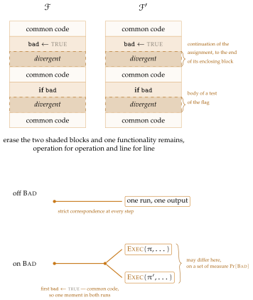

![[Picture]](main0x.svg)
UC for Gamers
| AI: | Claude Opus 5 (1M context) |
| Prompts: | Pooya Farshim |
| Reviewers: | Nobody |
| Date: | August 16, 2026 |
Universal composability is usually written in a mixture of prose and code, which makes UC research hard to falsify, and harder still to test or verify formally. Following the code-based style of property-based security, we set out a rigorous language for programming UC functionalities: identities and access control are data, wrappers enforce them, corruption is a register that every interface reads, and an execution is a handler passing a single token. Emulation is then defined over explicit machine classes with concrete bounds — no security parameter, no asymptotics — and the composition toolkit follows: substitution, parallel composition and a completeness theorem for the dummy adversary — all three corollaries of one absorption lemma, which moves a protocol or an adversary into the environment and is an exact regrouping of a single execution rather than a comparison of two — with transitivity coming free from the metric itself. Game-based properties turn out to be functionalities too, and they transfer along emulation. A signature functionality, a global clock and a bounded-delay network show the style at work. We hope this helps apply formal methods to UC, and ultimately give a formal UC proof.
Universal composability is written, almost everywhere it is written, in a mixture of prose and code. A functionality’s interfaces are code; who may call them is a sentence. The corruption model is a paragraph; what a corrupt party’s interface actually returns is left to the reader. Each gap is small, and a human referee closes it without noticing. A machine cannot, which is why a UC proof is hard to falsify and harder still to check formally: much of what would have to be checked was never written down.
This paper writes those parts down as code. Identities and access control become data that a functionality carries in named fields. Wrappers enforce them: a guard decides which calls reach a core, a silencer decides what a core may claim, and a mediator hands a corrupt party’s call to the adversary. Corruption is a register that every interface reads, twice, at points the code names. An execution is a handler that passes a single token. Nothing here is a new model — it is Canetti’s [7], with several of its conventions made explicit — but stating them in code rather than prose is what lets the rest of the paper be proved rather than argued.
One lemma. Emulation is then defined over explicit machine classes, with concrete bounds: no security parameter, no asymptotics, a bound that is a number. What follows is a composition toolkit, and the shape of it is the paper’s main structural claim. Substitution, parallel composition and the completeness of the dummy adversary are all corollaries of a single absorption lemma, which moves a protocol or an adversary into the environment. Absorption is not a comparison of two executions but an exact regrouping of one: the same run, bracketed differently, so the advantage on either side is the same number rather than two numbers with a shared bound. Transitivity is the exception and is of a different kind, resting on the triangle inequality over the metric rather than on any regrouping; it is stated with the metric for that reason, before the machinery the other three need.
Games are functionalities. A property in the game-based style of Bellare and Rogaway [5] — unforgeability, liveness, authentication — turns out to be expressible as a functionality too, with the game’s challenger as an ordinary machine and its verdict as an ordinary interface. Properties written this way transfer along emulation: if a protocol emulates an ideal object, the object’s properties descend to it, under hypotheses the paper states and checks at each use rather than assuming.
What to read first. The apparatus is larger than the theorem count suggests, and not all of it is load-bearing. Five definitions carry most of the paper: a functionality and its five fields; an execution and what it means to occupy an identity; a bundle, which runs several machines as one occupant and is what absorption is built from; absorption itself; and the regrouping correspondence that pairs two executions machine by machine. A reader who has those has the spine, and the composition results follow from them in order. The concrete functionalities — a signature scheme, a global clock and a bounded-delay network after Katz, Maurer, Tackmann and Zikas [11] and Badertscher, Maurer, Tschudi and Zikas [3], and an authenticated channel realized over them — come last and exist to show the style at work rather than to be needed by anything before them.
What this is for. A UC researcher should find the conventions here the ones they already use, written down. The second audience is the one the extra precision is for. Anyone building tools over UC — a type-checker for functionality code, a proof-assistant encoding, a test harness — needs a specification that settles the questions an informal presentation can leave to its reader, and settling them is most of what this paper does: which caller a guard admits, what a silenced core may claim, when a corruption register is read. Whether that is enough to carry a machine-checked UC proof is not established here, and we do not claim it. It is why the framework is written this way.
We work in the universal composability framework of Canetti [7], several of whose conventions we make explicit below.
A process id names a running protocol instance, and it has three parts:
a functionality name \(F\), a session id \(s\), and an instance number \(i\). The name says what code runs, the session which run of a protocol the instance belongs to, and the number distinguishes several instances of one name within a session. We write \(\id .F\), \(\id .s\) and \(\id .i\) for the three parts of \(\id .\PID \), and likewise \(\F .F\), \(\F .s\), \(\F .i\) for those of \(\F .\PID \); a bare \(\id .\PID = \F .\PID \) means all three agree.
Names are elements of \(\bits \cup \{A,Z,C\}\) and party ids of \(\bits \cup \{A,Z\}\), where \(A\), \(Z\) and \(C\) are reserved for the adversary, the environment and the corruption register. Being reserved, none of the three is an element of \(\bits \), so a field declared to contain \(\bits \) contains none of them; and \(C\) names no party, the register being a machine that parties call rather than one any party runs. Each of the three runs as a single instance in a single session, fixed to be session \(0\) and instance \(0\), so their process ids are \((A,0,0)\), \((Z,0,0)\) and \((C,0,0)\). We abbreviate these to the bare names \(A\), \(Z\) and \(C\) throughout, the other two components carrying no information.
Tests are almost always on the name alone. Where we write \(\id .F = A\) we mean the name component, never the whole triple, and the same for \(Z\), for \(C\), and for any functionality named in a membership test.
Two of the fields below collect names of this kind, and they collect different things. A party set holds party ids, elements of \(\bits \cup \{A,Z\}\); a caller set holds whole process ids, because who may call is a question about instances and not only about code. A caller set is therefore written with the abbreviations
for the process ids of the adversary, of the environment, and of everything standard. Where an older notation would have admitted “\(A\) and \(Z\)” it now admits \(\Apid \cup \Zpid \), of which only \((A,0,0)\) and \((Z,0,0)\) ever occur, the execution supplying one of each; where it admitted “\(\bits \)” it now admits \(\Stdpid \), and there every session and instance genuinely does occur. Party sets keep the bare \(\{A,Z\}\), those being party ids and not process ids, so a declaration that once read \(\Ps := \admits \) has to be split.
A functionality is named the same way, by its name component written as a subscript: \(\Fsig \) is a functionality with \(\Fsig .F = \op {Sig}\), its session and instance left implicit, so the notation stands for a process id \((\op {Sig},s,i)\) with \(s\) and \(i\) unspecified. Where a particular instance is meant they are supplied separately; where only the code matters, they are not written at all.
Little is lost by suppressing them, because a functionality’s own code hardly ever reads them. Local or global, a core is written for the party it serves and the state it keeps; which session it belongs to, and which instance of its name it is, are the execution’s business rather than its own. In this paper \(s\) occurs in three places only — line 3 of \(\opl {Guard}\), the wrappers that invoke it, and the static check of Definition 1.3 — and \(i\) is never read at all. The instance number earns its place another way: it is what lets two instances of one name in one session carry the distinct process ids that Definition 1.2 asks for. Chapter 7 makes the observation into a statement: renaming sessions and instances is an isomorphism of executions, and an emulation proved at one process id holds at every other, under a hygiene condition on who may be called across sessions that every functionality here meets.
Definition 1.1 (Identities and functionalities). An identity is a pair \(\id = (\PID ,P)\) of a process id and a party id, and an identity set is any set \(\Ids \) of these — a process id being a triple, no longer a set of pairs of names. A functionality \(\F \) carries the five fields
| \(\F .\PID \) | a process id | |
| \(\F .\Ps \) | set of served parties | the interfaces that exist |
| \(\F .\admits \) | caller process ids it admits | who may call those interfaces |
| \(\F .\uses \) | functionalities it uses | what must be there for it to run |
| \(\F .\pars \) | any further parameters | what the code reads besides the above |
and occupies the identity set
Identity sets say two things: which identities a collection of functionalities occupies, and which a machine may claim. The five fields recur in the parameter line of every box below, written without the owner’s name since the box heading supplies it. Only the first two fix \(\IDs (\F )\): the process id is shared by all its identities and the served parties supply the second component.
The fourth field records dependence. An entry of \(\F .\uses \) is a pair \((\F ',R)\): \(\F '\) names a functionality that must be present for \(\F \) to run, and \(R\) is a predicate saying what \(\F \) requires of whatever is found there. Naming a subroutine is rarely enough on its own — a subroutine that served none of its caller’s parties, or admitted none of its callers, would be useless — so we write
for the requirement that comes up most: \(\G \) serves every party \(\F \) serves, and admits \(\F \) among its callers. Without the second conjunct \(\opl {Guard}\) would refuse every call from \(\F \) to \(\G \).
What \(\uses \) records is what the code of \(\F \) names. The calls its wrapper makes on its behalf — to \(\Corr \) on lines 2 and 6 of Section 3.5, and to \(\Adv \) through \(\opl {Mediate}\) — are common to every standard functionality and are left out, which costs nothing: both targets serve \(\bits \cup \{A,Z\}\) and admit \(\Stdpid \), so \(\serves (\F ,\Corr )\) and \(\serves (\F ,\Adv )\) hold of every standard \(\F \) whatever its own fields, and an entry for either could never fail.
Definition 1.2 (Systems). A functionality is standard if \(\F .F \notin \{A,Z,C\}\), and each of its cores is wrapped as in Section 3.5 — save \(\op {Leak}\), which is wrapped as in Section 3.2, and \(\op {Initialize}\), which is a procedure and is not wrapped at all. A system (or world) \(\pi \) is a finite set of standard functionalities carrying distinct process ids: if \(\F ,\F ' \in \pi \) and \(\F \neq \F '\) then \(\F .\PID \neq \F '.\PID \). It occupies whatever its members do,
A system is what a protocol designer writes down — we use protocol and system interchangeably, ideal and real naming styles of writing one (below), not disjoint classes. Three machines are no part of it: the environment \(\Zenv \), the adversary \(\Adv \), and the corruption register \(\Corr \) of Section 3.1. None is standard, so by Definition 1.2 no system contains any of them and \(\IDs (\Zenv )\), \(\IDs (\Adv )\) and \(\IDs (\Corr )\) lie outside every system; the execution of Section 3.6 supplies all three instead. For \(\Zenv \) and \(\Adv \) that is what lets each claim its own identity while silenced on the system under test. For \(\Corr \) it keeps the register clear of the set operations of Section 4.1 and Chapter 6: no blocker is built for it, no replacement moves it, and every comparison runs over one and the same register. Reserving the three names also keeps them out of every \(\F .\admits \) declared as \(\Stdpid \), so no functionality admits the register among its callers — which is right, the register being a callee only.
Distinctness of process ids does real work. A system is determined by what it places at each id it uses, so membership is settled by the id alone. And every identity records that id in its first component, so distinct members have \(\IDs (\F ) \cap \IDs (\F ') = \emptyset \): the union above is disjoint, and no identity of a system is occupied twice.
Definition 1.3 (Well-formed systems). Write \(\pi ^{+} := \pi \cup \{\Zenv ,\Adv ,\Corr \}\) for a system together with the three machines every execution supplies. The system \(\pi \) is well-formed, written \(\WF (\pi )\), if
Three things about this. The conditions on \(\G \) are exactly those \(\opl {Guard}\) imposes when the call is placed — name admitted, session matching unless the callee is shared, fields fitting — so \(\WF (\pi )\) says precisely that the calls the members of \(\pi \) are built to make can succeed. Matching is by name, not by the functionality itself, which is what lets a dependence survive subsystem replacement: an entry naming \(\varphi _q\) is met by whatever sits at that name, ideal or real, so long as it meets the rest. And the requirement half ties the fields of caller and callee together; \(\WF \) would say almost nothing without it.
Both quantifiers range over \(\pi ^{+}\), and each enlargement earns its place: on the right it makes an entry naming one of the three supplied machines satisfiable at all, none being a member of any system, and on the left it checks their own entries — immediately here, since \(\serves (\Zenv ,\Adv )\) and \(\serves (\Adv ,\Zenv )\) hold and \(\Corr .\uses \) is empty. What \(\WF \) does not do on its own is survive the constructions that follow: adding members could introduce obligations, and replacing a subsystem re-evaluates every requirement at the new occupant. Proposition 6.4 (Chapter 6) settles the first and Theorem 4.4 the second.
Conditions, collected. Well-formedness is one of several static conditions this paper puts on systems, cores and machines, and they are defined where each is first needed — which leaves a reader no way to see which result reads which. The table collects them once. None of them is read during an execution: \(\opl {Exec}\) reads fields, not conditions, as Proposition 7.7 records for \(\uses \) in particular.
condition | constrains | read by |
\(\WF (\pi )\), Def. 1.3 | a system: every \(\uses \) entry has a witness — the calls its members are built to make can succeed | |
well-formed replacement, Def. 4.2 | an incoming system against what stays: no process id in common | Prop. 4.3, Thm. 4.4, Prop. 4.16, Thm. 4.20, Thm. 4.24, Prop. 5.10 |
compatible, Def. 6.1 | two systems: a shared process id serves and admits alike | Thm. 6.3, second claim |
session-uniform, Def. 7.2 | a system or environment: who can reach a member does not depend on its session | |
tight at \(I\), Rem. 6.5 | a system: members outside \(I\) pin callers by process id | Def. 5.1 |
places no responsive call, Def. 9.2 | the cores of a system | |
refusal-oblivious, Def. 4.28 | a machine in the adversary slot | the same four |
identity-atomic, Def. 7.4 | all code; a standing convention rather than a per-system check | |
leakage-well-formed, Section 3.2 | a realization | nothing: recorded, not used |
Two things the table makes visible. The first two rows share a name and are different conditions: \(\WF \) is about a system on its own, well-formed replacement about where an incoming system lands. And \(\WF \) and session-uniformity are duals — the calls a member is built to make, against who may reach it — which invites folding them into one condition. They are kept apart because no result needs both, and because one definition could not carry both anyway: the game of Definition 5.1 is required to be well-formed and is deliberately not session-uniform, as Remark 5.6 explains.
We say \(\F \) is local if \(\F .\admits = \{\PID : \PID .F = F^{\parent }\}\) for a designated parent (caller) name \(F^{\parent }\). (We leave it to the functionality to say whether \(\Apid \) and \(\Zpid \) may call it.) Intermediate notions are possible: a setup reachable from two named protocols admits \(\{\PID : \PID .F \in \{F_1,F_2\}\}\); and an \(\admits \) may pin whole process ids rather than names, listing its callers’ occupied instances outright — Remark 6.5 says why the private members of a realization should. At the other end we say \(\F \) is global, in the sense of generalized UC’s shared setup [8], if
one notion and not two: the first disjunct is the ordinary case, any standard functionality may call it, and the second covers the three machines the execution supplies — and whatever stands in their slots — global for a different reason and treated so wherever \(\op {global}\) is tested.
The distinction is what the session component is for. A local functionality is part of one run of one protocol, so a call may reach it only from its own session: line 3 of \(\opl {Guard}\) asks \(\id '.s = \id .s\). The instance number is not checked, so one session may hold as many instances of a name as it likes and they may call one another. A global functionality is shared across runs — one session of it, reachable from every session — so that check is waived for it, and the sessions of \(\F \) may all call one shared instance. We name a global ideal functionality with a leading \(\op {G}\) and a global real one with a leading \(\gamma \), as in \(\F _{\op {G}\op {Sig}}\); the calligraphic \(\G \) stays what it has been, a second functionality alongside \(\F \). The three machines the execution supplies are global: \(\Adv \) and \(\Corr \) already by the first clause, and \(\Zenv \) by the second, which is there because \(\Zenv .\admits = \Apid \cup \Zpid \) is deliberately narrow and yet the environment must be reachable from every session.
Real vs. ideal specifications. Ideal functionalities and real protocols differ in several respects. First, ideal functionalities know the corruption status of parties in their party sets. Second, they can pass the execution to the simulator and may offer simulator-specific interfaces (see, e.g., \(\Fdiffuse \)). Finally, they may share state across parties — and sharing is the point: the guard of Chapter 2 ties every call to one party, so parties communicate only through functionalities that share state across them, and a real protocol talks to its peers through ideal subroutines and in no other way. Here and below, \(\Fdiffuse \) and \(\Fio \) name functionalities we do not give: a diffusion channel and an input–output relay. Nothing in this paper depends on their code. The randomness source \(\Frand \) and the store \(\Fstore \) are given, in Chapters 13 and 14; they are the smallest examples in the paper and are where a reader new to the style should start.
The core interfaces of well-specified real protocols have none of these features, beyond those implicit in idealized building blocks and access-control wrappers; and real realizations do not specify how leakage is computed upon corruption, it being the contents of work tapes.1
Initialization. \(\op {Initialize}\) is a procedure and not an interface: it runs once, when the functionality is first activated, and sets up the variables the rest of the code uses. It places no calls — the execution of Section 3.6 initializes every machine before its dispatcher is installed, so there would be nothing to serve one — no caller can reach it, it takes no claimed caller-id, and a functionality declaring none gets the empty one. Real protocols carry no global initializer of this kind, only ones specific to a party within a process, written \((\PID ,P).\op {Initialize}()\) and abusing notation: they are private, not interfaces anyone may address.
This chapter fixes three pieces of machinery. The predicate \(\opl {Guard}\) constrains the calls that reach a machine; the wrapper \(\opl {Silence}\) constrains the calls it makes; and the wrapper \(\opl {Mediate}\) hands to the adversary a call that a corrupt party cannot answer for itself. The full interface of Section 3.5 is their composition.
Write \(\Op \) for a generic core interface of \(\F \). We specify only the cores; the wrapper below turns each into a full interface, and a caller reaches \(\fopl {Op}\), never \(\Op \). The access control checks are collected in the predicate \(\opl {Guard}\), which is not a functionality but an algorithm: it takes the target identity \(\id \), the claimed caller identity \(\id '\) and the functionality \(\F \), and returns a boolean. Two conventions of presentation. Boxes come in two weights: a filled one marks a functionality, which occupies identities, and an unfilled one a predicate, wrapper or procedure, which occupies none. And a call is written \(\id .\Op (in)\) as \(\id '\) where \(\id '\) is the identity claimed in placing it, and received as \(\id .\Op (in)\) from \(\id '\) where \(\id '\) is the identity it was claimed under. Enforcement sits in the wrapper, where line 1 requires it, so a call it rejects never reaches a core. Line 1 checks that the interface exists; line 2, that the caller’s name is admitted and that it acts for the right party; line 3, that caller and callee lie in one session, unless the callee is shared across sessions.
Predicate \(\opdef {Guard}\)
\(\opl {Guard}_{\F }\bigl (\id ,\id '\bigr )\):
\(\opl {Guard}\) constrains the calls that reach a machine; the wrapper \(\opl {Silence}\) below constrains the calls it makes. It takes an identity set \(\Ids \) and a programme, runs it, and intercepts every call it issues. A call claiming an identity in \(\Ids \) is refused with \(\rej \) without ever being placed; any other is placed and its answer handed back. So \(\Ids \) is exactly where the wrapped programme is silenced, and it may speak as anything outside.
The scope is the wrapped programme and nothing further. A call it places passes the token to another machine, and what that machine says is governed by its own wrapper, not by this one. Were it otherwise a functionality would silence its subroutines transitively, and none could speak as itself. Every use of \(\opl {Silence}\) below is of this shape: a full interface wrapping the core it serves.
It is convenient to read this as a handler, in the sense of algebraic effects [12, 4]. A call the programme issues is an operation of the ambient effect, and \(k\) is the continuation waiting for its answer. The wrapper \(\opl {Silence}\) decides what to resume with: \(\rej \) for a silenced claim, the answer of the call actually placed otherwise. The return clause passes the programme’s own result through untouched, so silencing changes what the programme may say and nothing else. The analogy only fixes the shape of the wrapper.
Wrapper \(\opdef {Silence}\)
identity set \(\Ids \), programme \(\id .\Op (in)\) from \(\id '\)
\(\opl {Silence}\bigl (\Ids ,\ \id .\Op (in) \text { from } \id ' \bigr )\):
With \(\opl {Silence}\) in hand we can say what happens to a call that a corrupt party cannot answer for itself. Every full interface below hands such a call to the adversary twice, on the way in and on the way out, and both times in the same shape: the wrapper \(\opl {Mediate}\). It takes a corruption set \(\Cs \), the operation \(\id .\Op \) being served, the value \(x\) to hand over, and the claimed caller \(\id '\) of the operation it stands in. Where the answer comes from is fixed inside it: whatever the operation, a corrupt party’s answers come from \((A,\id .P)\). One thing about it is not an ordinary argument: both require and the return of \(\opl {Mediate}\) return from the operation in whose code they stand, not merely from the line itself. When \(\opl {Mediate}\)’s test fails it does nothing and that operation carries on.
The hook is an ordinary call on \(\Adv \)’s full interface, claiming the identity \(\id \) of the interface being served. It therefore meets \(\opl {Guard}_{\Adv }\), which it passes because the claimed party \(\id .P\) is the party of the target; and the answering adversary is confined by \(\Adv \)’s own silencer, which admits only \((A,\id .P)\). So while answering for \(\id .P\) the adversary may speak as itself at \(\id .P\) and as nothing else, and \(\opl {Mediate}\) needs no silencing of its own.
Corruption wrapper \(\opdef {Mediate}\)
corruption set \(\Cs \), operation \(\id .\Op \), value \(x\), claimed caller
\(\id '\)
\(\opl {Mediate}\bigl (\Cs ,\ \id .\Op ,\ x,\ \id '\bigr )\):
Corruption is not an interface that real protocols realize (what would a real protocol do when “instructed” to get corrupted?), but it must exist for emulation. We can assume real protocols always reject corruptions, but then they are never registered as corrupted.
We model corruptions as a global functionality \(\Corr \). Several machines have their full interfaces given outright rather than obtained from cores — the environment, the adversary, and the leakage operation of Section 3.2 — but \(\Corr \) is the only one that uses neither \(\opl {Silence}\) nor \(\opl {Mediate}\), and the status report is why: that wrapper reads the corruption status on every call, which is what this interface implements, so wrapping it would be circular. Each interface below therefore carries by hand only the checks it needs, and \(\fopl {Status}\) in particular always returns the corrupted set without first asking whether the party is corrupt.
Corruption register \(\Corr \)
\(\PID := C\), \(\Ps := \bits \cup \{A,Z\}\), \(\admits := \Stdpid \cup \Apid \cup \Zpid \), \(\uses := \emptyset \), \(\pars := \none \)
\(\op {Initialize}()\):
\(\id .\fopdef {Corrupt}()\) from \(\id '\)
\(\id .\fopdef {Status}()\) from \(\id '\)
\(\id .\fopl {Leak}()\) from \(\id '\)
\(\Corr \)’s own leakage is constant, so the corruption test that Section 3.2 imposes on every other leakage operation would have nothing to protect; the guard is kept all the same, so the adversary reads the register at the party it is acting for and at no other.
Reading the register. \(\Cs \) is \(\Corr \)’s own state, so no other machine holds a copy. Wherever \(\Cs \) appears in the code of a functionality other than \(\Corr \) itself, the understanding is that it was fetched first, by
and we suppress that line when it would only repeat what the surrounding code makes plain. Inside \(\Corr \) there is nothing to fetch: \(\Cs \) is read and written directly, and \(\op {Corrupt}\) updates it in place.
Remark 3.1 (Why \(\fopl {Status}\) is not mediated). Wrapped like the other operations, \(\fopl {Status}\) would be useless exactly when it matters. Suppose \(\Zenv \) reaches out as \(\id '\) to ask the corruption status of \(\id '.P\). If \(\id '.P\) is corrupt, the gate lets the call through and \(\opl {Mediate}\) hands it to the adversary — so the answer to “is \(\id '.P\) corrupt?” is whatever the adversary says, and it may say no. Since every caller reads the register to decide how to treat a corrupt party, an adversary-controlled answer would switch the mediation machinery off at will.
\(\fopl {Status}\) therefore mediates and silences nothing: past the guard it returns \(\Cs \), the register’s own state. It is the one operation whose answer must come from the register, and being read-only it gives the adversary nothing it could not already infer. The core \(\op {Status}\) of earlier drafts goes with it, there being no wrapper left to keep out of.
Corruption is the outside’s to do. Line 3 admits \(\id '.F \in \{A,Z\}\), so the adversary and the environment may each put a party into \(\Cs \) and no standard functionality may put anything there at all. The guard above it binds the corrupting interface to the party it corrupts, asking \(\id '.P = \id .P\): to corrupt \(P\) the adversary must run at \((A,P)\), and the environment must claim \((Z,P)\), which line 3 lets its root do for any party. Both may read as well: \(\Apid \cup \Zpid \subseteq \Corr .\admits \), and \(\fopl {Status}\) returns all of \(\Cs \), so either may ask at any point and always learns the full set. And only genuine parties can be corrupted: \(\fopl {Corrupt}\) asks \(\id .P \in \bits \), so the reserved names stay honest by construction.
Commensurateness comes out right, and it is the reading that secures it rather than any division of who may write. The machine at \((A,P)\) is \(\Adv \) in one execution of an emulation experiment and \(\Sim \) in the other, and nothing forces the two to corrupt the same parties. But \(\Zenv \) is the same machine on both sides and reads \(\Cs \) on both, so an occupant of the slot corrupting a different set is caught by an environment that simply asks. Commensurateness is thus a consequence, not an assumption: no admissible environment tells the two corruption sets apart with advantage beyond what Definition 4.11 allows the simulator. That the environment may corrupt for itself only sharpens this, the corruptions it makes being its own on both sides; what is left to catch is the occupant’s own initiative.
Corruption is indexed by party name alone, so \(P\) cannot be corrupt at one process id and honest at another.1
Functionality \(\F \), leakage operation
\(\PID \), \(\Ps \), \(\admits \), \(\uses \), \(\pars \)
\(\id .\fopdef {Leak}()\) from \(\id '\)
The three requirements are those the general wrapper of Section 3.5 imposes, restated because leakage is not obtained from a core in the usual way. Line 1 is the existence half of \(\opl {Guard}\); the caller half is deliberately weaker, since \(\Adv \) must be able to leak from a functionality that does not admit it as a caller, so line 2 asks only that the adversary act for the party it is reading. Line 4 is the corruption gate. Without it an honest party’s state would be readable at will, which is what line 3 of the full interface refuses everywhere else. The silencer is line 5’s, so a leakage core that places calls claims its own identity like any other core.
For an ideal functionality, \(\opl {Leak}\) is part of the specification; the messages received so far and the contents of internal lists are typical. For real protocols it can be set to leak nothing, which models no leakage at all; ideal functionalities that say which parts of the state leak are the fix.
A protocol is leakage-well-formed if every machine body is pure between invocations, all sampled randomness is drawn through \(\Frand \) and all state persisting across invocations held in \(\Fstore \) rather than on a machine tape — each exposing it through its own \(\opl {Leak}\) — and inputs and outputs leak only where the protocol routes them through an input–output functionality \(\Fio \), which is not the default. Work tapes are then never leaked, purity between invocations leaving nothing on them. No result below assumes any of this; it is the condition a realization must meet for its \(\opl {Leak}\) to mean anything, and we record it rather than use it.
\(\Zenv \) cannot call this interface, so it need not be realized for indistinguishability. It must still be simulable, since the adversary can call it.
We define a special functionality \(\Zenv \), with a single per-\(\id \) interface \(\id .\fopl {Z}\) that guards and silences the core \(\id .\op {Z}\). The field \(\Zenv .\admits = \Apid \cup \Zpid \) deserves emphasis: it admits the adversary and the environment itself and nothing else, so no standard functionality may call \(\Zenv \). Anything wider would let a protocol call the environment as one of its own subroutines — an “open protocol,” whose subroutines are left undefined. Two distinct things rule that out. The narrowness of \(\Zenv .\admits \) refuses the call itself: a standard caller’s process id lies in \(\Stdpid \), which meets \(\Apid \cup \Zpid \) nowhere, so line 2 of \(\opl {Guard}\) rejects it whatever the caller declares. Definition 1.3 refuses the other half of openness, a member naming a dependence no member supplies. It is the first that does the work here: naming \(\Zenv \) would not trip \(\WF \), since \(\Zenv \in \pi ^{+}\) makes such an entry satisfiable, so a system could be well-formed and still be open were the field any wider.
The \(\Zpid \) in \(\Zenv .\admits \) is there for a different reason: it lets \(\Zenv \) call itself. The \(\op {Z}\) interfaces of the environment at different parties are separate, and admitting \(\Zpid \) is what lets them reach one another.
Which of them may reach which is settled by the silenced set, and there it does more than keep \(\Zenv \) off the systems. Every other machine is tied to where it runs: a standard functionality may claim only its own identity, and \(\Adv \) is silenced on \(\{\id '' \neq \id \}\). Nothing would tie \(\Zenv \) on its own, since \(\opl {Silence}\) tests only the claimed \(\id '\) and \(\opl {Guard}\) only the target, so \((Z,P)\) and \((Z,P')\) would be interchangeable and the party component of a \(\Zenv \) identity would carry no information. Line 3 supplies the tie, as loosely as applications allow: an interface at \(\id \) may claim \(\id '\) when \(\id '.P = \id .P\), when \(\id '.P = Z\), or when \(\id .P = Z\). In words, act for your own party, or for the root; and the root may act for anyone.
Both escapes are needed. Without \(\id .P = Z\) the root is stranded, and it is where \(\opl {Exec}\) begins and the only interface that can reach the others. Without \(\id '.P = Z\) the leaves are: the adversary’s only route back into the environment is \((A,P) \to (Z,P)\), and \(\opl {Mediate}\) wakes \(\Adv \) at \((A,\id .P)\) for the party it answers for, so an environment needing to compare what the adversary said at \(P\) against what it said at \(P'\) could never bring the two together — these interfaces are separate, and cannot pool it through shared state either — and the class of Definition 4.11 would genuinely shrink. With both escapes, connectivity is a two-way star rooted at \((Z,Z)\), and we know of nothing an unrestricted environment could do that the star cannot. Line 2 restricts in the same spirit: it stops \(\Zenv \) claiming \((A,P)\), and so stops it passing the corruption gate of line 3 and driving an honest party’s interface — a capability the adversary it would be impersonating does not have either, as Remark 4.8 records of a simulator silenced on less. What that line no longer has to do is keep \(\Zenv \) away from \(\fopl {Corrupt}\), which line 3 admits it to under its own name.
Together, \(\Apid \cup \Zpid \) is what applications need and no more. Admitting \(\Apid \) is necessary because the environment has no other way back into the execution: once \(\Zenv \) passes the token on it runs again only when something calls it, and only the adversary may; that same channel is how \(\Zenv \) hears whatever the adversary chooses to tell it. Admitting \(\Zpid \) is necessary because the environment is one interface per party rather than one machine, and without it the root could reach none of them. Nothing beyond these two is: a functionality that had to call \(\Zenv \) would treat it as a subroutine it does not define, and \(\Corr \) reports corruptions to no one — the adversary knows what it corrupts, having done it — which is why \(\Zenv \) must ask for the corruption set. So the environment is reachable only from the two machines outside every system.
Environment \(\Zenv \)
\(\PID := Z\), \(\Ps := \bits \cup \{A,Z\}\), \(\admits := \Apid \cup \Zpid \), \(\uses := \{(\Adv ,\serves )\}\), \(\pars := \Ids \)
\(\id .\fopdef {Z}(in)\) from \(\id '\)
The adversary \(\Adv \) has the same shape: a single per-\(\id \) interface \(\id .\fopl {A}\) guarding and silencing the core \(\id .\op {A}\). What separates it from the environment is who may reach it. Where \(\Zenv .\admits \) is only \(\Apid \cup \Zpid \), the field \(\Adv .\admits = \Stdpid \cup \Apid \cup \Zpid \) holds every process id that ever places a call. Only \(\Corr \)’s is missing, and \(\Corr \) places none. That width is a requirement rather than a convenience: the mediation hooks of Chapter 2, and the calls ideal functionalities place through the abbreviation \(\Adv (\cdot )\), are both calls placed on the adversary by a machine acting for some party.
These interfaces are what a backdoor looks like in this notation. The adversary holds no token of its own and cannot begin a call, so every attack it mounts starts from another machine handing it control: a party’s interface through \(\opl {Mediate}\), or the environment directly, which is how an environment instructs an adversary at all. What it may say in return is narrow: the silenced set is \(\{\id '' : \id '' \ne \id \}\), so an interface of \(\Adv \) may claim only the identity it runs at.
Inside an interface with identity \(\id \) we write \(\Adv (in)\) for the call \((A,\id .P).\fopl {A}(in)\) as \(\id \), and \(\Zenv (in)\) likewise. The claim must be \(\id \) and no other, since line 5 silences a core on everything but its own identity; the adversary therefore learns the caller as the claimed id, and needs no separate field for it. Its core is entered as \(\id .\op {A}(in)\) from \(\id '\), the shape \(\opl {Silence}\) declares and the shape every other core is entered in. The target’s party component is \(\id .P\), so the call also records on whose behalf it is made.
Adversary \(\Adv \)
\(\PID := A\), \(\Ps := \bits \cup \{A,Z\}\), \(\admits := \Stdpid \cup \Apid \cup \Zpid \), \(\uses := \{(\Zenv ,\serves )\}\), \(\pars := \none \)
\(\id .\fopdef {A}(in)\) from \(\id '\)
Everything the wrapper needs is now in place: \(\opl {Guard}\) and \(\opl {Mediate}\) and \(\opl {Silence}\) from Chapter 2, and the register \(\Corr \) of Section 3.1 that supplies \(\Cs \). The full interface of a standard functionality is their composition.
Functionality \(\F \)
\(\PID \), \(\Ps \), \(\admits \), \(\uses \), \(\pars \)
\(\id .\fopdef {Op}(in)\) from \(\id '\)
Lines 2–4 and 6–7 handle corruption, and are the only place a full interface consults the register. It is read twice because \(\Cs \) changes as the execution proceeds and a read is only a snapshot: the tests before line 6 use the first, the test on line 7 the second. Membership is monotone, \(\opl {Corrupt}\) only ever adding, so a party honest at the first read may be corrupt at the second but never the reverse.
Line 3 refuses one combination: the adversary at an honest party, which has no business there. Everything else passes, and \(\opl {Mediate}\) settles the rest. So an honest party is addressable by everyone but \(\Adv \) and runs its own core; a corrupt party is addressable by everyone, but only \(\Adv \) reaches its core, every other caller being answered by \(\Adv \) in the party’s place. The environment needs no case of its own: whether it claims its own identity or an admitted external one, a corrupt party answers it through \(\Adv \) either way.
That leaves a corrupt party addressed by anyone but \(\Adv \), whose call cannot simply be run, so \(\Adv \) answers in the party’s place. Lines 4 and 7 are the same wrapper at two moments. The first catches a party already corrupt on arrival and hands over \(in\), so the core never runs. The second catches one that turned corrupt while its core ran on line 5, and hands over \(out\), no longer the party’s to return. Monotonicity makes the two cover the cases exactly once: a party corrupt at the first has already returned, and none is corrupt at the first and honest at the second. Both hooks address \(\Adv \) at \((A,\id .P)\) through its full interface, so the answering adversary is guarded and silenced like any other callee. Line 8 returns the core’s own value, which happens in two cases: for a party honest throughout, and for a corrupt party addressed by \(\Adv \) itself, which the gate admits and which neither hook catches, both testing \(\id '.F \neq A\).
Remark 3.2 (Corruption mid-call is not preemptive). Nothing interrupts a core that is already running. Suppose the core on line 5 calls the adversary — through \(\Adv (\cdot )\), or through a subroutine that mediates — and the adversary corrupts \(\id .P\) before returning a value. The register records that at once, \(\Cs \) being its own state, but the core is neither told nor stopped: it resumes with whatever the adversary returned and runs to completion. Only on its return does line 6 read \(\Cs \) again, find \(\id .P\) in it, and hand \(out\) to \(\opl {Mediate}\) on line 7 to be replaced.
So the adversary holds the token twice over such a call, in this order: once inside the core, for the call the core placed, and once after the core has returned, for the mediation of its output. No moment in between lets the corruption take effect, since a party that turns corrupt mid-call cannot un-run what it has already done. Nor is the call re-gated: line 3 was decided on the first read, and a call admitted while \(\id .P\) was honest stays admitted. What the wrapper guarantees is therefore weaker than aborting, and sufficient: nothing a newly corrupt party computed reaches its caller unmediated. Calls arriving after the corruption are caught on the way in instead, by line 4.
In an execution exactly one machine holds the activation token. A call \(out \gets \id .\Op (in)\) abbreviates suspending the caller with a continuation and passing the token to interface \(\Op \) of \(\F \) at identity \(\id \). Every call between machines addresses a full interface, and \(\fopl {Op}\) is what \(\opl {Exec}\) dispatches; a core is invoked only by the wrapper that serves it, inside the machine that carries it, and never across a token transfer. A call addressed to an identity no machine occupies is answered with \(\rej \). An instance may hold several outstanding continuations and may be re-entered while suspended, in particular by \(\Adv \).
Definition 3.3 (Machines and occupancy). A machine is anything an execution runs: the members of the system, and whatever the execution supplies alongside them. A machine occupies a finite set of identities — for a functionality, the \(\IDs (\F )\) of Definition 1.1 — and \(\opl {Exec}\) dispatches to it exactly the calls addressed to identities it occupies. The occupants of one execution carry pairwise disjoint identity sets, and \(\opl {Exec}\) is defined for no other family. An occupant of the adversary slot is a machine occupying the identities of process id \(A\) and no others; the adversary of Section 3.4 is one, and so is every simulator of Chapter 4. An activation is a maximal interval during which one machine holds the token.
Every call carries a claimed id \(\id '\). Standard functionalities may claim only the identity of the interface placing the call; \(\Zenv \) and \(\Adv \) may claim others, subject to the checks of Chapter 2. Those checks are the guard, which tests \(\id '\) against the interface’s identity \(\id \) and against the functionality’s parameters, and we specify them with require statements. A failed guard returns the distinguished value \(\rej \) to the sender, and \(\rej \) is a refusal rather than a value: no machine may return it as its own output. The rule is enforced rather than assumed — a core whose code would return \(\rej \), and a mediated answer of \(\rej \) from the adversary’s slot, are delivered as \(\none \) instead — so a caller receiving \(\rej \) learns that a guard refused its call, and nothing else can produce one. In particular \(\rej \neq \none \).
Randomness is per machine: each machine carries its own coin tape, infinite, uniform, and independent of every other machine’s, read only when its code samples. Probabilities over an execution are over these tapes jointly. Bundling machines into one occupant — as Chapter 4 and Section 4.4 do — does not merge tapes: a hosted copy’s coins are what they were before absorption.
Besides the system \(\pi \), the execution carries three machines: the environment \(\Zenv \), the adversary \(\Adv \), and the corruption register \(\Corr \), whose state \(\Cs \) every wrapper reads. By Chapter 1 none is a member of \(\pi \), which makes line 1 unambiguous — the register is initialized once, as an argument, not a second time as a member — and keeps \(\pi \) the object a designer wrote. The procedure initializes the three, then activates the environment at \((Z,Z)\) as though it had called itself. That first activation goes through \(\Zenv \)’s full interface like any other, so the environment is silenced from the outset, and \(\opl {Guard}_{\Zenv }\) passes trivially, the claimed and target identities being the same. Whatever the environment returns is the outcome.
Execution \(\opdef {Exec}\)
system \(\pi \), environment \(\Zenv \), adversary \(\Adv \), corruption register
\(\Corr \)
\(\opl {Exec}(\pi ,\Zenv ,\Adv ,\Corr )\):
Read as a handler [12, 4], the execution has exactly one operation: placing a call. Line 2 activates the environment, the only activation not placed by a machine. Line 4 handles every call thereafter, and the continuation \(k\) is where the token comes back: suspending the caller, passing the token to \(\id \), and resuming the caller with the answer are precisely what invoking \(k\) on that answer means. Exactly one machine holds the token throughout. The return clause is reached when the environment’s program halts, and its output is the execution’s.
A protocol is normally written against a subroutine later supplied by another protocol. Replacing one by the other is a set operation on systems.
Nothing so far stops the incoming \(\pi \) from landing on a process id the surrounding protocol already uses, which would leave a call ambiguously addressed. We rule this out rather than repair it.
Definition 4.2 (Well-formed replacement). The replacement of \(\varphi \) by \(\pi \) in \(\rho \) is well-formed if no process id occurs both in \(\rho \setminus \varphi \) and in \(\pi \), that is, if
Proposition 4.3 (Replacement). Let \(\rho \) and \(\pi \) be systems, let \(\varphi \subseteq \rho \), and let the replacement of \(\varphi \) by \(\pi \) in \(\rho \) be well-formed. Then \(\rho [\pi /\varphi ]\) is a system. If moreover \(\IDs (\pi ) = \IDs (\varphi )\), then \(\IDs (\rho [\pi /\varphi ]) = \IDs (\rho )\).
Proof. The process ids of \(\rho [\pi /\varphi ]\) are those of \(\rho \setminus \varphi \) together with those of \(\pi \). Each system carries distinct ids internally and well-formedness makes the two collections disjoint, so no id repeats; the members are standard and finitely many, both inherited from \(\rho \) and \(\pi \), so \(\rho [\pi /\varphi ]\) is a system. That first claim rests on the well-formedness of the replacement alone, \(\IDs (\pi ) = \IDs (\varphi )\) entering nowhere in it. Identities need no separate hypothesis: an identity carries its process id in the first component, so members with distinct ids have disjoint identity sets. For the identities themselves,
using \(\IDs (\pi ) = \IDs (\varphi )\) in the middle step and \(\varphi \subseteq \rho \) in the last. □
The two halves of the proposition are used differently below. That \(\rho [\pi /\varphi ]\) is a system lets Chapter 4 speak of it at all, and rests on well-formedness alone. That its identities are those of \(\rho \) needs \(\IDs (\pi ) = \IDs (\varphi )\), and no result in Chapter 4 assumes it: admissibility there is stated for a pair of systems through the union of their identity sets, and Proposition 4.16 and Theorem 4.20 say outright that no relation between the two is used. Where the equality is wanted, blocking supplies it.
Definition 4.2 settles process ids, and Proposition 4.3 identities. Neither addresses dependence, and dependence is where replacement can go wrong: the names \(\rho \setminus \varphi \) relies on are still occupied after \(\varphi \) gives way to \(\pi \), but every requirement is re-evaluated at the new occupant. Two conditions close the gap.
Informally, Theorem 4.4 below says that a well-formed replacement preserves \(\WF \) when the entries of the incoming \(\pi \) can be discharged in the new world, and some member of \(\pi \) stands in for \(\varphi \) wherever an entry of \(\rho \setminus \varphi \) was witnessed inside \(\varphi \). Hypothesis (ii) is what it means for \(\pi \) to be a drop-in for \(\varphi \), and emulation does not supply it.
Theorem 4.4 (Replacement preserves well-formedness). Let \(\rho \) and \(\pi \) be systems, let \(\varphi \subseteq \rho \), let the replacement of \(\varphi \) by \(\pi \) in \(\rho \) be well-formed in the sense of Definition 4.2, and let \(\WF (\rho )\). Suppose
Then \(\WF \bigl (\rho [\pi /\varphi ]\bigr )\).
Proof. Write \(\rho ' := \rho [\pi /\varphi ] = (\rho \setminus \varphi ) \cup \pi \), a system by the first claim of Proposition 4.3 — the second is not available here, \(\IDs (\pi ) = \IDs (\varphi )\) being no hypothesis of this theorem. Take \(\F \in \rho '^{+}\) and an entry \((\F ',R) \in \F .\uses \); we must place a witness in \(\rho '^{+}\). There are three cases, by where \(\F \) comes from.
If \(\F \in \pi \), hypothesis (i) is exactly the claim.
If \(\F \) is one of \(\Zenv \), \(\Adv \), \(\Corr \), its entries are settled once and for all, independently of the system: \(\Corr .\uses \) is empty, and the entries of \(\Zenv \) and \(\Adv \) name each other, with \(\Adv , \Zenv \in \rho '^{+}\) and \(\serves \) holding between them as Chapter 1 records. All three are global, so the session conjunct is waived.
If \(\F \in \rho \setminus \varphi \), then \(\F \in \rho ^{+}\), so \(\WF (\rho )\) supplies a witness \(\G \in \rho ^{+}\) for this entry. Either \(\G \notin \varphi \), in which case \(\G \) lies in \((\rho \setminus \varphi ) \cup \{\Zenv ,\Adv ,\Corr \} \subseteq \rho '^{+}\) and serves again: it is the same machine with the same fields, so \(\G .F\), \(\G .s\) and whatever \(R\) reads are unchanged, and \(\F \) is unchanged too. Or \(\G \in \varphi \), and hypothesis (ii) supplies a member of \(\pi \) meeting the same three conditions in its place. Either way the entry has a witness in \(\rho '^{+}\). □
Hypothesis (ii) is what it means for \(\pi \) to be a drop-in for \(\varphi \), and emulation does not supply it. Definition 4.11 compares behaviour at the boundary; it says nothing about the declared fields of the machines behind that boundary, and a \(\pi \) that emulates \(\varphi \) perfectly may still fail to admit a caller \(\varphi \) admitted, or serve a party \(\varphi \) served. The check is cheap — it ranges over the entries of \(\rho \setminus \varphi \) that pointed into \(\varphi \), and nothing else — but it is a check, and belongs beside well-formedness of the replacement rather than inside the composition theorem.
Everything an execution needs is now fixed, so we can say when one system is at least as secure as another. The two are placed under one and the same environment, so what it may claim must be settled first; that is the role of \(\Zenv .\pars \) below.
The value of \(\opl {Exec}(\pi ,\Zenv ,\Adv ,\Corr )\) is whatever the environment returns. We take an environment to return a bit at the root — its guess as to which system it was placed in — and read the execution as returning \(1\) exactly when the environment does. Nothing else in the framework constrains that value, so this is a condition on the environments quantified over, not a consequence. The gap between two executions is then a number, not an informal resemblance.
Definition 4.5 (UC advantage). Let \(\pi \) and \(\varphi \) be systems. For an environment \(\Zenv \), an adversary \(\Adv \) and a simulator \(\Sim \),
the probabilities being over the coins of every machine in the two executions, and \(\opl {Exec} = 1\) abbreviating the event that the execution halts with the environment returning \(1\).
The two executions differ in the system and in the machine that occupies the adversary’s identities: \(\Adv \) on one side, \(\Sim \) on the other. Both are typed by the same pair of definitions.
Definition 4.6 (Adversaries). An adversary is a machine that occupies \(\IDs (\Adv )\) and no other identities and carries the adversary’s interfaces — the wrapper of Section 3.4, guard and silencer, and any further interface that section’s machine is given (Chapter 9 adds one) — around an arbitrary core at each of them. The machine of Section 3.4 is one; the dummy of Section 4.4 is another.
Every simulator is thus an adversary, which is what lets one stand in an adversary class: Proposition 4.12 and Theorem 4.24 read simulators as adversaries, and the budget containments of Section 4.5 compare the two classes directly. Occupancy and the admitted callers are what standing in the adversary’s slot means, so everything Section 3.4 settles about a machine at \((A,P)\) holds of a simulator unchanged: it begins no call of its own, and its silencer lets it claim only the identity it runs at. Proposition 4.19 asks only occupancy of whatever it is given; Theorem 4.29 uses the wrapper and the admitted callers too, and Remark 4.8 explains why neither is a restriction.
The metric takes the three machines as arguments, so emulation can be stated by quantifying over classes of them and bounding the result. Which environments may be used at all is settled by the pair being compared.
Remark 4.8 (What emulation fixes about the adversary slot). Definition 4.10 below constrains \(\Zenv .\pars \) and says nothing about the machines in the adversary slot; Definitions 4.6 and 4.7 say everything needed, and it is less than the five fields. The fields \(\PID \) and \(\Ps \) come free with occupancy: \(\IDs (\F ) = \{(\F .\PID ,P) : P \in \F .\Ps \}\), so occupying \(\IDs (\Adv )\) pins both, giving \(\Sim .\PID = (A,0,0)\) at line 1 and \(\op {global}(\Sim )\) at line 3; and pinning \(\Ps \) is what is wanted, a slot occupant serving fewer parties leaving an \(A\)-identity unoccupied on one side alone, answered \(\rej \) where the other answers. The field \(\pars \) is never read — the silenced set is the literal \(\{\id '' : \id '' \neq \id \}\) of line 2, carried as code by the required wrapper, and it is no formality: a simulator silenced on less could claim a party’s identity, pass the corruption gate \(\id '.F = A\) of line 3, and drive an honest party’s interface, a capability the adversary it stands in for lacks. The field \(\uses \) is inert, read only by \(\WF \), where \(\pi ^{+}\) names the reserved \(\Adv \) rather than the slot’s occupant.
That leaves \(\admits \), which is why Definition 4.7 requires it outright. Widening is impossible, \(\Adv .\admits \) already holding every process id that places a call; narrowing gains a simulator nothing and costs both theorems below. Dropping \(\Stdpid \) turns every mediation hook at a corrupt party into the deemed \(\none \) of Section 3.6 — and Theorem 4.20 quantifies over every \(\rho \), so a simulator admitting only \(\varphi \)’s process ids meets others in the first outer world that has them. Dropping \(\Zpid \) shuts the environment out on the ideal side alone, line 2 at the slot refusing the very instructions the real adversary answers. And nothing in any of this mentions the pair being simulated for, which is what lets Theorem 4.20 hand the hypothesis’s simulator on unchanged.
Definition 4.9 (Environments). An environment is a machine of the execution that occupies \(\IDs (\Zenv )\) together with the identities of finitely many standard functionalities it hosts — none for the machine of Section 3.3, copies of the surrounding protocol for the absorbed environments of Definition 4.15 below. It carries the interface of Section 3.3, silencer and parameter \(\pars \) included, at each \(Z\)-identity, and each hosted functionality’s own full interface at that functionality’s identities; \(\opl {Exec}\) dispatches to it at every identity it occupies, and its output is what its \(\Zenv \) part returns.
Definition 4.10 (Admissible environments). For a system \(\pi \), write \(\ncl {\pi } := \{\, \id \;:\; \id .\PID .F = \F .F \ \text {for some}\ \F \in \pi \,\}\) for its name closure: the identities of every process id carrying a name \(\pi \) uses, occupied or not, in every session and every instance. For systems \(\pi \) and \(\varphi \), the environments admissible for the pair are
The second condition is occupancy hygiene: an execution is defined only for occupants with pairwise disjoint identity sets (Definition 3.3), so an environment hosting at an identity one of the systems occupies could not be placed beside it, and admissibility rules it out for both worlds at once.
The containment is justified below. A statement of emulation then fixes three classes: a class \(\Aset \) of adversaries (Definition 4.6), a class \(\SimSet \) of simulators (Definition 4.7), and a class \(\ZenvSet \subseteq \ZenvSet _{\pi ,\varphi }\) of environments (Definition 4.9). Taking \(\ZenvSet = \ZenvSet _{\pi ,\varphi }\) gives the strongest statement of the three, and is the default reading.
Definition 4.11 (UC emulation). Let \(\pi \) and \(\varphi \) be systems, let \(\varepsilon \geq 0\), and let \(\ZenvSet \subseteq \ZenvSet _{\pi ,\varphi }\). We say that \(\pi \) UC-emulates \(\varphi \) within \(\varepsilon \) against \((\Aset ,\SimSet ,\ZenvSet )\) if
The order of the quantifiers is the substance of the definition: the simulator may depend on the adversary but not on the environment, so one \(\Sim \) must work against every \(\Zenv \in \ZenvSet \) at once. Otherwise the two executions are one experiment with a single system swapped, \(\Zenv \) being literally the same machine on both sides. Weakening it to \(\forall \, \Adv \ \forall \, \Zenv \ \exists \, \Sim \) — a simulator built for the environment it faces — gives a notion Definition 4.11 implies and whose converse we do not prove, the two reading as \(\max _\Adv \min _\Sim \max _\Zenv \) and \(\max _\Adv \max _\Zenv \min _\Sim \) of one quantity in the concrete form of Section 4.5. The composition results survive the weakening, each proof below instantiating the hypothesis at an environment fixed by the conclusion’s; what the order buys is therefore meaning rather than composition, since only under it is \((\varphi ,\Sim )\) one system behaving like \((\pi ,\Adv )\) whoever is watching — an ideal world one can name and hand on.
Definition 4.10 is what makes the comparison meaningful. Since \(\Zenv .\pars \) silences \(\Zenv \), it may claim no identity inside it, and three kinds must be kept out of reach. An identity in \(\IDs (\pi ) \mathbin {\triangle } \IDs (\varphi )\) is occupied in one world and free in the other, so an environment allowed to speak as one is told which world it is in before anything happens, and no simulator can repair that. An identity internal to both separates nothing, but an environment claiming it speaks as a component of the system rather than from outside, which an environment is not for. And an unoccupied identity of a used name is as good as an occupied one, because \(\opl {Guard}\) admits callers by name: a local callee admits every instance of its parent’s name, line 2 asking no more, so an environment claiming a fresh instance of that name drives internal subroutines exactly as their callers do — and against a blocked pair (Chapter 6) it tells the worlds apart outright, the blocker refusing a call the genuine occupant admits. Silencing the closure disallows all three at once. What stays claimable is fresh names, and those reach only what admits all of \(\Stdpid \): the global functionalities, shared between the two worlds in any comparison where they are not themselves at issue.
Silencing governs what \(\Zenv \) may claim, and calling is a second channel it does not touch. An identity of \(\IDs (\pi ) \mathbin {\triangle } \IDs (\varphi )\) may be called in either world: where nothing occupies it the answer is \(\rej \) (Section 3.6), and where something does the answer is \(\rej \) again — provided that something refuses \(\Zpid \) at line 2. The proviso is a condition on the systems being compared rather than on the environment class, and a pair breaking it is simply not emulable, no simulator being able to invent an answer the ideal world has no machine to give. It is why the local subroutines of Chapter 20 keep \(Z\) out of their \(\admits \).
Smaller sets being less restrictive, the least restricted admissible environments are those whose \(\pars \) is the closure exactly — and the blocking of Chapter 6 delivers them for a compatible pair:
by the second claim of Theorem 6.3, and a blocker copies its name from the member it stands in for, so
So \(\Zenv .\pars := \ncl {\overline {\pi }}\) is not merely a value the two blocked systems can share, but the weakest restriction the pair admits.1
One property of the relation is already available, and it is of a different kind from everything that follows. The composition results below — substitution, parallel composition, the completeness of the dummy adversary — are corollaries of a single absorption lemma, each regrouping one execution and reading the same advantage twice. Transitivity regroups nothing. Its proof is the triangle inequality over Definition 4.5 together with the check that the conclusion’s class is admissible for the outer pair, so it belongs to the metric rather than to the machinery and needs none of the apparatus of the rest of this section. It is stated here for that reason.
Proposition 4.12 (Transitivity). Let \(\pi \), \(\varphi \) and \(\psi \) be systems and let \(\ZenvSet \subseteq \ZenvSet _{\pi ,\varphi } \cap \ZenvSet _{\varphi ,\psi }\). If \(\pi \) UC-emulates \(\varphi \) within \(\varepsilon _1\) against \((\Aset ,\SimSet ,\ZenvSet )\) and \(\varphi \) UC-emulates \(\psi \) within \(\varepsilon _2\) against \((\SimSet ,\SimSet ',\ZenvSet )\), then \(\pi \) UC-emulates \(\psi \) within \(\varepsilon _1 + \varepsilon _2\) against \((\Aset ,\SimSet ',\ZenvSet )\).
Proof. First, the conclusion is a legal statement of emulation. A \(\Zenv \) in both classes has \(\Zenv .\pars \supseteq \ncl {\pi } \cup \ncl {\varphi }\) and \(\Zenv .\pars \supseteq \ncl {\varphi } \cup \ncl {\psi }\), hence \(\Zenv .\pars \supseteq \ncl {\pi } \cup \ncl {\psi }\); and it hosts at no identity of \(\IDs (\pi ) \cup \IDs (\varphi )\) nor of \(\IDs (\varphi ) \cup \IDs (\psi )\), hence at none of \(\IDs (\pi ) \cup \IDs (\psi )\) — so both clauses of Definition 4.10 hold and \(\ZenvSet \subseteq \ZenvSet _{\pi ,\psi }\); the three systems need not be related for this. Now let \(\Adv \in \Aset \). The first emulation supplies \(\Sim \in \SimSet \), and since the second quantifies its adversaries over \(\SimSet \), reading \(\Sim \) as an adversary against \(\varphi \) yields \(\Sim ' \in \SimSet '\). For every \(\Zenv \in \ZenvSet \) the triangle inequality gives
since the middle term \(\Pr [\opl {Exec}(\varphi ,\Zenv ,\Sim ,\Corr ) = 1]\) cancels. As \(\Sim '\) depends on \(\Adv \) alone, it is the simulator required. □
Three constructions below — the absorbed environment here, and the two of Section 4.4 — fold several machines into one occupant of the execution. They share a shape, which we name once.
Definition 4.13 (Bundle). A bundle runs several machines together as a single occupant of the execution, passing the token among them as \(\opl {Exec}\) does and initialising each as \(\opl {Exec}\) would. It occupies a declared set of identities, which the members’ own identities must cover, and takes its output and parameters from a designated member. A call between two hosted machines is served inside, by the bundle’s own routing and without being placed on the execution; a call arriving from outside is served by the member carrying the target identity, through that member’s full interface, guard included; a call a hosted machine places outward is placed on the execution when its target lies in a declared outward set, and answered \(\rej \) otherwise. An instance may in addition route particular calls between its members by hand — interposing one before another, even when the target lies outside every member’s identities — and such an explicit routing governs the calls it names, leaving only the rest to the target rule above.
How a hosted machine’s outward call is claimed turns on occupancy, since a silencer wraps the core of one interface and reaches no further (Chapter 2). A member whose identities the bundle occupies leaves its calls under its own identity, meeting its own silencer alone; a member whose identities the bundle does not occupy has none to claim, so the bundle rewrites each of its outward calls to leave under an identity it does hold — which identity being part of what an instance declares, alongside its outward set — and the rewritten claim meets that interface’s silencer. Which case a member is in is what keeps a bundle faithful to the execution it stands for.
That internal traffic is served rather than placed is what lets a bundle occupy the adversary slot of a system whose cores call it responsively, and it is worth saying why the distinction is not a quibble. The wrapper \(\opl {Respond}\) (Definition 9.1) refuses every call the responder places, so a bundle obliged to place its internal calls could reach none of its own members while answering one — and the simulator of Chapter 20, which drives three hosted hybrids inside each of two responsive answers, could not run at all. Serving them inside leaves the token where it was, which is the whole of what responsiveness asks. What a bundle still may not do inside a responsive answer is reach anything it does not host: the register and the shared functionalities are outside it, so their calls are placed, and refused.
Definition 4.13 already says that a hosted machine comes in two kinds, according to whether the bundle occupies its identities, and the difference is the whole of what follows. A machine whose identities the bundle keeps disappears from the execution’s dispatch and is served inside; one whose identities the bundle cedes must leave them to somebody, and its calls must be placed by that somebody on its behalf. Both moves come up — the first absorbs a protocol, the second an adversary — so we define them together and prove them right once.
Definition 4.14 (Absorption). Let \(\Zenv \) be an environment and \(H\) a finite set of machines of an execution, split as \(H = H_{\op {keep}} \uplus H_{\op {cede}}\), the members of \(H_{\op {cede}}\) being occupants of the adversary slot. The absorption of \(H\) into \(\Zenv \) is the bundle (Definition 4.13) \(\Zenv ^{H}\) of \(\Zenv \) with one copy of each member of \(H\); it occupies \(\IDs (\Zenv ) \cup \IDs (H_{\op {keep}})\), takes its output and \(\pars \) from \(\Zenv \), and has as outward set the identities the surrounding execution still serves. A member of \(H_{\op {keep}}\) keeps its identities, so its calls leave under its own claim and calls addressed to it are served inside the bundle. A member of \(H_{\op {cede}}\) keeps none, so the bundle rewrites each outward call \(\id ''.\fopl {Op}(x)\) it places while running at \((A,P)\) as the instruction
and the identities it cedes are occupied in the new execution by a relay for it, which throughout is the dummy \(\Dum \) of Section 4.4.
We state the ceding case for the adversary slot alone. It is the only one used below, and the only one whose interface has an instruction shape to rewrite calls into — a standard functionality serves what its own code names and could not stand in for another machine’s calls.
Definition 4.15 (Absorbed environment). Let \(\varphi \subseteq \rho \), let \(\pi \) be a system to be put in place of \(\varphi \), and let \(\Zenv \) be an environment. The absorbed environment \(\Zenv ^{\rho \setminus \varphi }\) is the absorption (Definition 4.14) of \(\rho \setminus \varphi \) into \(\Zenv \) with every member kept and none ceded, so it is the bundle of \(\Zenv \) with one copy of each \(\F \in \rho \setminus \varphi \), every copy keeping its identities; it occupies \(\IDs (\Zenv ) \cup \IDs (\rho \setminus \varphi )\), takes its output and \(\pars \) from \(\Zenv \), and has outward set \(\IDs (\pi ) \cup \IDs (\varphi ) \cup \{\, \id : \id .F \in \{A,C\} \,\}\). It is an environment (Definition 4.9), not a functionality, since it spans several process ids. The superscript records the hosted shell only — the outward set reads \(\pi \) as well — so \(\Zenv ^{\rho \setminus \varphi }\) is fixed relative to a replacement given by context, and two replacements sharing \(\rho \setminus \varphi \) but differing in \(\pi \) name different machines.
Both halves of the outward set are forced by what the absorbed execution has to reproduce. The first is the slot, whose identities go to \(\pi \) or to \(\varphi \) according to which world the absorbed environment sits in. We take the union rather than \(\IDs (\varphi )\) alone so the same machine serves in both, which matters now that the two need not occupy the same identities. The second is the two reserved ids \(A\) and \(C\), named as ids rather than as machines because the adversary slot holds \(\Sim \) on the ideal side while Proposition 4.19 needs one and the same absorbed machine on both. They are there because the hosted machines are full interfaces rather than bare cores: each reads the register on lines 2 and 6 of Section 3.5, and each hands a call at a corrupt party to the adversary through \(\opl {Mediate}\), which hooks to \((A,\id .P)\). Neither id belongs to any system. Without this half a call to a hosted functionality would be refused at its first line, and a corrupt party’s hook would be refused instead of reaching the adversary: the absorbed execution would stop being the outer one regrouped exactly when \(\Cs \) met \(\rho \setminus \varphi \). Everything else is answered with \(\rej \), nothing serving it in the outer execution either.
The parameter is carried over untouched, and it must be. It is the silenced set of \(\Zenv \)’s own interface, so any change to it changes which calls \(\Zenv \) may place — and \(\Zenv \) is the one machine that has to behave identically on both sides. One might think the hosted functionalities need \(\IDs (\rho \setminus \varphi )\) removed from it to speak as themselves, but they do not: each is a full interface, and line 5 of its own wrapper is what licenses its claim, \(\Zenv \)’s reaching no further than \(\Zenv \)’s own core (Definition 4.13). Removing those identities would licence nothing new for them, and would un-silence \(\Zenv \) on exactly the identities it was silenced on before absorption.
Absorbing thus turns an environment for the outer pair into one for the inner pair, preserving admissibility. The register needs no special treatment: being a member of no system it lies in neither \(\varphi \) nor \(\rho \setminus \varphi \), so the absorbed environment does not host it and blocking builds no blocker for it. Like \(\Zenv \) and \(\Adv \) it is supplied by \(\opl {Exec}\), the same single machine on both sides of every comparison. Its hosted copies keep their identities, so by Definition 4.13 they leave their calls under their own claims and meet their own silencers — not \(\Zenv \)’s — which is what the regrouping below needs; the constructions of Section 4.4 are the opposite case, hosting an adversary whose identities the bundle does not occupy.
Proposition 4.16 (Absorption preserves admissibility). Let \(\rho \) and \(\pi \) be systems, let \(\varphi \subseteq \rho \), and let the replacement of \(\varphi \) by \(\pi \) in \(\rho \) be well-formed. Then
Proof. For the \(\pars \) half, absorption carries the field over untouched, so it is enough that
Every name \(\varphi \) uses is used by \(\rho \), since \(\varphi \subseteq \rho \), and every name \(\pi \) uses is used by \(\rho [\pi /\varphi ]\), since \(\pi \subseteq \rho [\pi /\varphi ]\). For the hosting half, \(\Zenv ^{\rho \setminus \varphi }\) hosts at \(\IDs (\rho \setminus \varphi )\) beyond whatever \(\Zenv \) hosted: the latter avoids \(\IDs (\rho [\pi /\varphi ]) \cup \IDs (\rho )\), which contains \(\IDs (\pi ) \cup \IDs (\varphi )\); and \(\IDs (\rho \setminus \varphi )\) meets \(\IDs (\varphi )\) nowhere, the two being disjoint subsystems of \(\rho \), and meets \(\IDs (\pi )\) nowhere by well-formedness of the replacement — the one place the hypothesis is used, and it is used for typing alone. No relation between \(\IDs (\pi )\) and \(\IDs (\varphi )\) enters. One thing the statement does not say: the absorbed machine claims identities inside its own \(\pars \), each hosted copy claiming its own. That is no contradiction — by Definition 4.13 a hosted copy’s claims meet its own silencer and never the environment’s, and admissibility is a condition on the field, read where the field applies. □
What makes the theorem work is that absorption regroups an execution without changing it. Since the same correspondence serves Section 4.4, we set it down before the lemma.
Configurations. By a configuration of an execution we mean its state between activations: the state of every machine, the unread part of every coin tape, which machine holds the token and where in its code, and the callers suspended awaiting answers. Calls nest, and Section 3.6 lets an instance hold several outstanding continuations, so the last of these is a chain rather than a set: one entry per call placed and not yet answered, in the order placed, recording the caller and the call it waits on.
The two executions do not run the same machines — that is what absorbing does — but they run the same ones once \(\Zenv ^{H}\) is counted as the machines it bundles rather than as one, and but for the relays a ceded identity needs. Definition 4.13 passes the token among those as \(\opl {Exec}\) does, so each holds it in the same sense on either side. Counted so, the machines of the two executions correspond one to one apart from the relays, and we write \(\iota \) for the bijection: the hosted copy of each member of \(H\) to that member, the hosted \(\Zenv \) to \(\Zenv \), and everything the execution still runs, \(\Corr \) included, to itself.
Definition 4.17 (Regrouping correspondence). A configuration \(c\) of the left execution and a configuration \(\hat c\) of the right correspond, written \(c \approx \hat c\), when
Where the right-hand family carries a relay, \(\iota \) is a bijection between the machines of the left and those of the right other than the relay, and (C4) is read with the relay’s own frames elided: a relayed call contributes one frame the left does not have, resumed exactly once with the answer the left’s call returned — save that a \(\rej \) the left reads may arrive as \(\none \) on the right, which is the one place refusal-obliviousness is spent.
Only (C4) is at risk from the bracketing. On the left every suspension is recorded by \(\opl {Exec}\); on the right they divide between \(\opl {Exec}\) and the bundle, which records those of the calls internal to it. The clause asks that the two chains agree once the bundle’s own are counted where they were placed. Regrouping is exactly that: one chain of suspensions, kept by two dispatchers.
The first activation. The two executions begin in correspondence, and it is worth saying why, since this is the one activation the lemma’s case analysis does not reach: it is placed by no machine. Line 1 initialises \(\Corr \) and everything the execution still runs on both sides, Definition 4.14 initialises each hosted copy as \(\opl {Exec}\) would, and a relay carries no state, so every machine and its image start in the same state, which is (C1). No tape has been read, giving (C2). The operation \(\op {Initialize}\) places no calls, so nothing is suspended and both chains are empty, giving (C4) — and with it the reason the order in which the bundle initialises its copies cannot be observed: that order can be read off nothing in the configuration. Line 2 then activates \((Z,Z).\fopl {Z}()\) from \((Z,Z)\). On the left the token goes to \(\Zenv \); on the right it goes to \(\Zenv ^{H}\), where \((Z,Z)\) is carried by the hosted \(\Zenv \), which Definition 4.14 makes the bundle occupy. Both enter \(\fopl {Z}\) at the same identity on the same input, which is (C3).
Thereafter every activation is a call placed or a value returned, and the lemma comes to showing that correspondence survives one of them on either side, and that corresponding configurations halt together with the same output. Its paragraphs take those activations case by case.
Lemma 4.18 (Absorption). Let an execution run the occupants \(\{\Zenv \} \cup H \cup R\), with \(\Corr \in R\) and \(\Zenv \) an environment, let \(H = H_{\op {keep}} \uplus H_{\op {cede}}\), and let \(\Zenv ^{H}\) be the absorption of Definition 4.14. Ask of each member of \(H_{\op {cede}}\), and of nothing in \(H_{\op {keep}}\), that
Then, the two families being legal occupant families in the sense of Definition 3.3,
are identically distributed — equal as distributions, not merely close.
Proof. The argument is one induction on activations, and the five paragraphs below discharge its step. Machines pairs the two occupant families and checks that every machine and its image start alike. Routing asks where each call lands and finds four cases — internal to the group, leaving it, entering at a kept identity, entering at a ceded one — of which only the last differs between the two families. Claims splits on which kind of member placed the call: one keeping its identities meets the same silencers on both sides, while a ceded member has none to claim, so its outward calls are rewritten, and the rewriting must survive three tests — where the bundle may speak from, whether the claim is silenced, and whether it passes the relay’s guard. Refusals isolates the one value that can differ, a \(\rej \) the left reads arriving as \(\none \) on the right, and spends hypothesis (a) on it; hypothesis (b) blocks the mirror problem, a responsive call on a relayed slot. Token checks that the two chains of suspensions agree once the bundle’s own are counted where they were placed. Hypothesis (c) is spent in Claims, on the ceded member’s right to claim \((Z,P)\). Two conventions of Chapters 1 and 3.6 are used throughout and are worth restating. Distinct machines draw from independent coins, and bundling machines into one does not merge their tapes, so a hosted copy’s randomness is what it was before absorption. And \(\op {Initialize}\) places no calls, so the order in which the bundle initialises its hosted copies is unobservable. The proof is an induction on activations: the initial configurations correspond, as shown before the lemma; corresponding configurations produce the same next activation on both sides and step to corresponding configurations, each machine and its image reading the same coins in the same order, which is what (C2) of Definition 4.17 preserves; and corresponding halting configurations output alike, the output being the hosted \(\Zenv \)’s by Definition 4.14. The paragraphs below discharge the inductive step: which machines exist and start alike, (C1); where a call goes and what it claims, (C4); and how the token moves, (C3). The first two paragraphs are common to both kinds of member; the two after them are what a ceded member costs.
Machines. The left runs \(\{\Zenv \} \cup H \cup R\); the right runs \(\{\Zenv ^{H}\} \cup R\) together with a relay at each ceded identity, and \(\Zenv ^{H}\) is \(\Zenv \) with one copy of each member of \(H\). Counted as the machines it bundles, the two collections coincide but for the relays, so \(\iota \) pairs each member of \(H\) with its copy, each member of \(R\) and \(\Corr \) with itself, and leaves the relays over, which is the reading Definition 4.17 gives them. Line 1 initialises \(R\) on both sides, Definition 4.14 initialises the hosted copies as \(\opl {Exec}\) would, and a relay is stateless, so every machine and its image start alike. Occupancy is disjoint on both sides by hypothesis, so each call has a unique target: on the right the bundle holds \(\IDs (\Zenv ) \cup \IDs (H_{\op {keep}})\) and the relays hold what \(H_{\op {cede}}\) let go.
Routing. Take a call and ask where it lands. With both endpoints in \(\{\Zenv \} \cup H\) it is dispatched by \(\opl {Exec}\) on the left and served inside \(\Zenv ^{H}\) on the right, by the same machine either way. Leaving that group it is dispatched by \(\opl {Exec}\) on the left and placed outward on the right, its target lying in the outward set, which Definition 4.14 makes the identities the execution still serves. Entering the group at an identity of \(H_{\op {keep}}\), it is dispatched by \(\opl {Exec}\) on the left and served on the right by the hosted copy carrying that identity, which the bundle occupies. Entering at an identity of \(H_{\op {cede}}\), it is dispatched to the ceded member on the left and to the relay on the right, which is the one place the two families differ and the subject of the two paragraphs below. Addressed anywhere else it has no machine on either side: \(\opl {Exec}\) finds no target and \(\Zenv ^{H}\) answers \(\rej \). Guards are evaluated at the callee from the claimed id, so they agree once the claims do.
Claims, for a member that keeps its identities. Each such call carries the same claimed id on both sides, and the two silencers that could change one are the same silencers on both. A hosted interface is governed by its own silencer and not by the environment’s, by Definition 4.13: it keeps its identities, so \(\opl {Silence}\) at \(\Zenv \) does not reach it. Being a full interface it claims exactly its own identity on either side, line 5 silencing its core on \(\{\id '' \neq \id \}\); and the calls its wrapper places, on \(\Corr \) and through \(\opl {Mediate}\), stand outside even that silencer on both sides. The environment’s own interface is governed by \(\pars \), which absorption carries over unchanged, so \(\overline {\Ids }\) is computed from the same set at the same identity and admits exactly the same claims. Neither machine gains nor loses a claim.
Claims, for a member that cedes them. Such a member has no identity of its own to claim inside the bundle, so Definition 4.14 rewrites its outward calls, and the rewriting has to survive three tests. First, where the bundle may speak from. Whenever the hosted member runs on behalf of party \(P\) — that is, where the left has it running at \((A,P)\) — the bundle is running at \((Z,P)\) or at \((Z,Z)\), or else \(P = Z\): it is entered either by \(\Zenv \) calling an \(A\)-identity, served internally with \(\opl {Guard}_{\Adv }\) forcing the claimed party to be the target’s, and line 3 letting an interface at \((Z,Q)\) claim party \(P\) only when \(Q \in \{P,Z\}\) or \(P = Z\); or by the relay, whose inward call targets \((Z,P)\) exactly. Second, whether the claim \((Z,P)\) is silenced: not by the party-tie just settled, not by line 2 since its name is \(Z\), and not by \(\pars \), which hypothesis (c) empties of \(Z\)-identities. Third, whether it passes \(\opl {Guard}\) at the relay: \(P \in \Adv .\Ps \) at line 1, \(\Zpid \subseteq \Adv .\admits \) with the parties equal at line 2, and \(\op {global}\) at line 3. The relay then places the very call the left placed, under the very claim the left claimed, so both sides meet the same conjuncts at the same callee. A call arriving at the ceded identity travels the other way by the same three tests: it reaches the relay under the guard it passed on the left, is handed to \(\Zenv \) at \((Z,P)\) with its caller in the payload — admitted by the relay’s own silencer and by \(\opl {Guard}_{\Zenv }\), \(\Apid \subseteq \Zenv .\admits \) and \(\op {global}(\Zenv )\) — and reaches the hosted member’s interface at \((A,P)\) through that interface’s guard, the guard that passed on the left.
Refusals. One value can differ. Where a call the ceded member places is refused, the left reads \(\rej \) from its own call, while on the right the relay returns that \(\rej \) and Section 3.6 delivers it to the hosted member as \(\none \). Hypothesis (a) is exactly what closes this: a refusal-oblivious machine answers alike to the two, so its distribution is unchanged. Hypothesis (b) is what stops the other direction of the same problem, a responsive call on a ceded identity: \(\opl {Respond}\) refuses every call the responder places, and the relay must place one to answer at all, so a responsive call on a relayed slot would be answered \(\none \) where the left answered with substance — which is why no core of \(R\) may place one. Nothing else the relay does is visible: \(\op {Corrupt}\) survives the detour, its gate \(\id '.F = A\) met by the relay’s claim, which is the one call the rewriting must place under an \(A\)-identity and the bundle cannot.
Token. \(\opl {Exec}\) has one operation, placing a call, and its continuation is where the token comes back. On the right the calls internal to \(\Zenv ^{H}\) no longer reach that handler, but Definition 4.13 passes the token among the hosted machines as \(\opl {Exec}\) does, so each internal caller is suspended on its own continuation and resumed with the same answer; and each relayed call adds one frame on the right, resumed exactly once, which is the elision Definition 4.17 allows. Two properties of \(\opl {Exec}\) are used, and Section 3.6 grants both to every instance: a machine may hold several outstanding continuations, and may be re-entered while suspended. The second is what a call arriving from \(R\) needs while \(\Zenv ^{H}\) is itself waiting on an outward call. Exactly one machine holds the token at every moment on either side.
Every machine therefore sees the same inputs in the same order and answers from the same tape, so correspondence is preserved at every activation and the two executions agree as distributions — in particular on the probability that \(\Zenv \) returns \(1\). □
Diagrammatically, the lemma is one equality with its two cases side by side: a kept member disappears into the bundle outright, a ceded one is bridged back out through a relay.
![[Picture]](main1x.svg)
A member of \(H_{\op {keep}}\) — like all of \(\rho \setminus \varphi \) in Theorem 4.20’s figure above — is absorbed outright: \(\Zenv ^{H}\) occupies its identity, so \(R\) reaches it only as part of the bundle. A member of \(H_{\op {cede}}\) is hosted too, running on the same tape, but the bundle does not occupy its identity: the relay \(\Dum \) (the dummy of Section 4.4) stands in its place, handing \(R\)’s calls to \(\Zenv \) tagged with their caller and re-emitting the hosted member’s outward calls under its original claim, so neither side can tell a relay sits between them. Hypotheses (a)–(c), asked only of \(H_{\op {cede}}\), are what keep that indistinguishable: (a) is exactly refusal-obliviousness, since \(\Dum \) turns every \(\rej \) it relays into a \(\none \); (b) and (c) rule out a responsive call and a clash on \(\Zenv \)’s own claim, the two other ways a relay’s extra hop could show. Theorem 4.20’s figure is the case \(H_{\op {cede}} = \emptyset \); the mirror case, one ceded occupant standing for the whole adversary slot (\(H_{\op {keep}} = \emptyset \)), is what Section 4.4’s dummy-adversary construction runs on.
The two halves of the lemma are used apart. Absorbing a protocol cedes nothing, so all three hypotheses fall away and what is left is a pure rebracketing; that is the case Theorem 4.20 runs on, and it is worth stating separately for the emphasis that it costs nothing at all.
Proposition 4.19 (Regrouping). Let \(\rho \) and \(\pi \) be systems, let \(\varphi \subseteq \rho \), let the replacement of \(\varphi \) by \(\pi \) in \(\rho \) be well-formed, and let \(\Zenv \) be an environment hosting at no identity of \(\IDs (\rho ) \cup \IDs (\pi )\). Then for \(\sigma \) either \(\pi \) or \(\varphi \), and for any occupant \(\mathcal {X}\) of the adversary slot (Definition 3.3),
are identically distributed — equal as distributions, not merely close.
Proof. Lemma 4.18 at \(H = \rho \setminus \varphi \) with \(H_{\op {cede}} = \emptyset \), so that \(\Zenv ^{H}\) is the absorbed environment of Definition 4.15 and no hypothesis of the lemma applies: (a), (b) and (c) are asked of ceded members and there are none. Note \(\rho [\varphi /\varphi ] = \rho \), so the case \(\sigma = \varphi \) is the ideal side. The two occupant families are legal: the left-hand collection is a system in both cases, so no identity is occupied twice — for \(\sigma = \pi \) because well-formedness says \(\rho \setminus \varphi \) and \(\pi \) share no process id, and for \(\sigma = \varphi \) because that collection is \(\rho \) itself — while on the right the hosting hypothesis on \(\Zenv \) keeps the bundle clear of \(\IDs (\sigma )\). □
The theorem now says that substituting one subsystem for another inside a protocol costs nothing in advantage.
Informally, Theorem 4.20 says: if \(\pi \) UC-emulates \(\varphi \) within \(\varepsilon \), then \(\rho [\pi /\varphi ]\) UC-emulates \(\rho \) within the same \(\varepsilon \). The adversary and simulator classes carry over unchanged; the environments of the conclusion are those admissible for the pair \((\rho [\pi /\varphi ],\rho )\) whose absorbed form \(\Zenv ^{\rho \setminus \varphi }\) lies in the class of the hypothesis.
Theorem 4.20 (Composition). Let \(\rho \) and \(\pi \) be systems, let \(\varphi \subseteq \rho \), and let the replacement of \(\varphi \) by \(\pi \) in \(\rho \) be well-formed in the sense of Definition 4.2. Suppose
Then
where
Explicitly,
Proof. Three relations, of three kinds. The adversary and simulator classes carry over by copying: an adversary is the same machine whichever system it attacks, and nothing typing a simulator mentions the pair it simulates for. The environment class is the one thing computed rather than copied, being the preimage of the hypothesis’s class under absorption. The bound is then two steps. Proposition 4.19, applied once on each side, turns the outer advantage into the inner one exactly — the same absorbed machine serving both sides, which is what its outward set was chosen to allow — and the emulation hypothesis bounds the inner one. So the first relation of the display is an equality, shown as an inequality only for uniformity with the second. The three relations are of three kinds. The adversaries carry over unchanged because the reduction hands on the very same machine: an \(\Adv \in \Aset '\) attacking \(\rho [\pi /\varphi ]\) is read as an \(\Adv \in \Aset \) attacking \(\pi \). Any \(\Aset ' \subseteq \Aset \) would serve, and equality is the largest such choice. The simulators carry over for the mirror reason: the \(\Sim \in \SimSet \) the hypothesis supplies is returned as the simulator for the conclusion, so any \(\SimSet ' \supseteq \SimSet \) would serve, and equality is the smallest. That it may be returned at all is Remark 4.8: nothing typing a simulator mentions the pair it simulates for, so one for \((\pi ,\varphi )\) already stands in the slot for \((\rho [\pi /\varphi ],\rho )\).
The environments are the one place something is computed rather than copied. Here \(\ZenvSet \) and \(\ZenvSet '\) are classes for two different pairs of systems, and \(\ZenvSet '\) is the preimage of \(\ZenvSet \) under absorption,
so an outer environment counts exactly when what it becomes on absorption is one the hypothesis covers. It is a genuine class, since \(\ZenvSet ' \subseteq \ZenvSet _{\rho [\pi /\varphi ],\rho }\) by construction. When \(\ZenvSet \) is the largest admissible class \(\ZenvSet _{\pi ,\varphi }\), Proposition 4.16 makes the second condition redundant and the preimage is all of \(\ZenvSet _{\rho [\pi /\varphi ],\rho }\): emulation against the largest class gives the largest class again.
Proposition 4.16 also makes the right-hand advantage defined, needing no closure hypothesis on the environments and no relation between \(\IDs (\pi )\) and \(\IDs (\varphi )\). The first inequality is Proposition 4.19 applied twice, with \(\sigma = \pi \) and \(\mathcal {X} = \Adv \) on the real side and \(\sigma = \varphi \) and \(\mathcal {X} = \Sim \) on the ideal one. Subtracting,
so it is in fact an equality: the two experiments are one experiment bracketed differently, and the same \(\Sim \) serves on both sides because the ideal execution is regrouped by the very same absorption. The second inequality is the emulation hypothesis applied to \(\Zenv ^{\rho \setminus \varphi }\), which lies in \(\ZenvSet \) because \(\Zenv \) lies in \(\ZenvSet '\). The theorem displays the first relation as an inequality only for uniformity with the second. □
Diagrammatically, fixing one \(\Adv \in \Aset '\), a serving \(\Sim \in \SimSet '\) and one \(\Zenv \in \ZenvSet '\), the proof is the commuting square below, drawn in the string-diagram style of [9]: a solid box is a system, a wire is an interface, and the box hanging off the bottom of a system is whichever machine currently occupies its adversarial slot.
Figure 1: Substitution, as a commuting square. Reading down each column is one execution; the dotted box marks the pair being exchanged. Both horizontal edges are absorption, so both are equalities rather than bounds, and the right edge is the hypothesis. The conclusion on the left is then the same quantity, not merely one with the same bound. (Theorem 4.20.)
The top and bottom edges are Proposition 4.19, applied to \((\pi ,\Adv )\) and to \((\varphi ,\Sim )\) respectively — regrouping is free, so both are equalities, not mere bounds, which is why the dashed box on the right (the absorbed environment \(\Zenv ^{\rho \setminus \varphi }\) of Proposition 4.19) is the only thing that changes between a column and its neighbour. The right edge is the theorem’s hypothesis, applied to that absorbed environment. The left edge — the theorem’s conclusion — is then forced: chasing the square shows the two \(\approx _\varepsilon \)’s are not merely both bounded by the same \(\varepsilon \) but, by the two equalities, are the very same quantity. Composing \(n\) such squares in a chain, one hybrid at a time, is exactly Theorem 4.24 below.
Substitution and transitivity now combine into the form in which composition is actually used. Proposition 4.12 was stated with the metric above, its proof needing none of this machinery; here is where it does its work.
Corollary 4.21 (Composition with a specification). Let \(\pi \), \(\rho \) and \(\psi \) be systems, let \(\varphi \subseteq \rho \), let the replacement of \(\varphi \) by \(\pi \) in \(\rho \) be well-formed, and let \(\pi \) UC-emulate \(\varphi \) within \(\varepsilon _1\) against \((\Aset ,\SimSet ,\ZenvSet )\). Write \(\ZenvSet '\) for the class of Theorem 4.20. If \(\rho \) UC-emulates \(\psi \) within \(\varepsilon _2\) against \((\SimSet ,\SimSet ',\ZenvSet ')\), then \(\rho [\pi /\varphi ]\) UC-emulates \(\psi \) within \(\varepsilon _1 + \varepsilon _2\) against \((\Aset ,\SimSet ',\ZenvSet ')\).
Proof. By Theorem 4.20, \(\rho [\pi /\varphi ]\) UC-emulates \(\rho \) within \(\varepsilon _1\) against \((\Aset ,\SimSet ,\ZenvSet ')\), and \(\ZenvSet ' \subseteq \ZenvSet _{\rho [\pi /\varphi ],\rho }\). The second hypothesis is a statement of emulation against that same class, so \(\ZenvSet ' \subseteq \ZenvSet _{\rho ,\psi }\) as well. Both containments needed by Proposition 4.12 therefore hold, and it applies to the two statements with \(\rho \) in the middle. □
This is the form in which composition is used. One analyzes \(\rho \) with the idealized subroutine \(\varphi \) in place, proving it emulates whatever specification \(\psi \) is wanted — against the classes the corollary names, whose adversaries are the first step’s simulators; the corollary transfers that conclusion to the system that runs. One hypothesis is easy to miss: emulation against \(\ZenvSet '\) asserts, as Definition 4.11’s side condition, that \(\ZenvSet ' \subseteq \ZenvSet _{\rho ,\psi }\) — so \(\psi \)’s names must lie under the \(\pars \) of every environment the class retains, and the corollary is vacuous where they do not.
Theorem 4.20 replaces one subsystem. Replacing several at once is not a new argument but \(n\) applications of that one along a chain of hybrids; what needs care is the bookkeeping of the three classes down the chain.
The disjointness hypotheses below are meant literally, and are satisfiable only because of the convention of Chapter 1: the register is a machine of the execution and a member of no system, and there is only ever one of it. Counted a member, it would lie in every \(\varphi _i\) and every \(\pi _k\) at once, so no two subsystems of \(\rho \) would be disjoint and no two \(\pi _k\) would carry disjoint process ids; the hypotheses would be unsatisfiable for \(n \geq 2\) and would have to be read modulo \(\Corr \). Keeping the register out of the systems is what lets them be read as written.
Definition 4.22 (Simultaneous replacement). Let \(\rho \) be a system and let \(\varphi _1,\dots ,\varphi _n \subseteq \rho \) be pairwise disjoint subsystems. For systems \(\pi _1,\dots ,\pi _n\),
Write \(\rho _k := \rho [\pi _1/\varphi _1,\dots ,\pi _k/\varphi _k]\) for \(0 \leq k \leq n\), so that \(\rho _0 = \rho \) and \(\rho _n = \rho '\). Since the \(\varphi _i\) are pairwise disjoint, \(\varphi _k\) is untouched by the first \(k-1\) replacements, so \(\varphi _k \subseteq \rho _{k-1}\) and
Consecutive hybrids therefore differ by a single replacement, which lets Theorem 4.20 act on each step; the proof below walks the chain as \(n\) game hops, one per replacement. Fitting the steps together also needs the classes to be adjustable, and they are.
Lemma 4.23 (Monotonicity). Suppose \(\pi \) UC-emulates \(\varphi \) within \(\varepsilon \) against \((\Aset ,\SimSet ,\ZenvSet )\). Then it does so against \((\Aset ^{-},\SimSet ^{+},\ZenvSet ^{-})\) for any \(\Aset ^{-} \subseteq \Aset \), any class of simulators \(\SimSet ^{+} \supseteq \SimSet \) and any \(\ZenvSet ^{-} \subseteq \ZenvSet \).
Proof. Definition 4.11 is a \(\forall \exists \forall \) statement over the three classes. Narrowing the range of either universal quantifier and widening that of the existential one each preserve it, and \(\ZenvSet ^{-} \subseteq \ZenvSet \subseteq \ZenvSet _{\pi ,\varphi }\) keeps the result a legal statement of emulation. □
Informally, Theorem 4.24 says that replacing \(n\) pairwise disjoint subsystems at once costs the sum of the individual errors: it is Theorem 4.20 applied \(n\) times along a chain of hybrids, the adversaries being those of the last replacement, the simulators those of the first, and the environments admissible for every step at once.
Theorem 4.24 (Parallel composition). Let \(\rho \) be a system, let \(\varphi _1,\dots ,\varphi _n \subseteq \rho \) be pairwise disjoint, and let \(\pi _1,\dots ,\pi _n\) be systems such that the \(\pi _k\) carry pairwise disjoint process ids and, for each \(k\), \(\pi _k\) shares no process id with \(\rho \setminus \varphi _k\). Suppose that for each \(k\)
and write \(\ZenvSet _k'\) for the class Theorem 4.20 attaches to the \(k\)-th step,
Assume finally that
Then \(\ZenvSet ^{\star } \subseteq \ZenvSet _{\rho ',\rho }\), and
Proof. A hybrid argument over \(n\) steps, and the work is in checking that each step is a legal instance of Theorem 4.20 before any of them is taken. Three preliminaries do that. The first shows each replacement is well-formed and each \(\rho _k\) a system, by induction on \(k\), so that the composition theorem applies at every step. The second shows the class \(\ZenvSet ^{\star }\) is admissible for every intermediate pair at once, and — taking the union over \(k\) — for the outer pair too, so that the conclusion is itself a legal statement of emulation. The third builds the chain of simulators downwards, \(\Sim _{n+1} := \Adv \) and each \(\Sim _k\) supplied by the \(k\)-th step for the adversary \(\Sim _{k+1}\), which is what makes \(\Sim _1\) depend on \(\Adv \) alone. Only then is the hybrid taken: consecutive games differ in one replaced subsystem and one adversary, that difference is one application of Theorem 4.20, and summing the \(n\) hops telescopes to \(\sum _k \varepsilon _k\). First, each step is well-formed. The members of \(\rho _{k-1} \setminus \varphi _k\) are those of \(\rho \setminus \varphi _k\) the first \(k-1\) replacements leave in place, together with \(\pi _1,\dots ,\pi _{k-1}\); by hypothesis \(\pi _k\) shares a process id with neither group. So the replacement of \(\varphi _k\) by \(\pi _k\) in \(\rho _{k-1}\) is well-formed in the sense of Definition 4.2. Each \(\rho _k\) is a system, by induction on \(k\): \(\rho _0 = \rho \) is one, and \(\rho _k = \rho _{k-1}[\pi _k/\varphi _k]\) is one by Proposition 4.3 from that well-formed replacement. So Theorem 4.20 and Proposition 4.16, which ask \(\rho _{k-1}\) and \(\pi _k\) to be systems, apply to the \(k\)-th step.
Next, admissibility. Let \(\Zenv \in \ZenvSet ^{\star }\) and fix \(k\). From \(\ZenvSet ^{\star } \subseteq \ZenvSet _k' \subseteq \ZenvSet _{\rho _k,\rho _{k-1}}\) we get
so \(\Zenv \) is admissible for the \(k\)-th pair of hybrids and the advantage \(\advtg ^{\op {uc}}_{\rho _k,\rho _{k-1}}\) below is defined. Proposition 4.16, applied to the replacement of \(\varphi _k\) by \(\pi _k\) in \(\rho _{k-1}\), then places the absorbed environment in \(\ZenvSet _{\pi _k,\varphi _k}\): its parameter is \(\Zenv \)’s, which already contains the identities of \(\pi _k\) and of \(\varphi _k\), so the inner advantage \(\advtg ^{\op {uc}}_{\pi _k,\varphi _k}\) is defined too. Taking the union of the displayed containments over all \(k\),
and likewise \(\Zenv \) hosts at no identity of \(\bigcup _k \IDs (\rho _k) \supseteq \IDs (\rho ') \cup \IDs (\rho )\) — the hosting clause of each \(\ZenvSet _{\rho _k,\rho _{k-1}}\), at \(k = n\) and \(k = 1\) — so both clauses of Definition 4.10 give \(\ZenvSet ^{\star } \subseteq \ZenvSet _{\rho ',\rho }\) and the conclusion is itself a legal statement of emulation.
Fix \(\Adv \in \Aset _n\) and put \(\Sim _{n+1} := \Adv \). For \(k = n, n-1, \dots , 1\) let \(\Sim _k \in \SimSet _k\) be the simulator the \(k\)-th step supplies for the adversary \(\Sim _{k+1}\). This is legitimate at every index: at \(k = n\) because \(\Sim _{n+1} = \Adv \in \Aset _n\), and at \(k < n\) because \(\Sim _{k+1} \in \SimSet _{k+1} \subseteq \Aset _k\). The chain of simulators is built downwards, each from the one before it, and \(\Sim _1\) depends on \(\Adv \) alone.
Now fix \(\Zenv \in \ZenvSet ^{\star }\) and consider the \(n+1\) games
Here \(G_0\) is the execution of \(\rho \) under \(\Sim _1\) and \(G_n\) that of \(\rho '\) under \(\Adv \), so the sequence starts at \(\rho _0\) and ends at \(\rho _n\). Consecutive games differ in one replaced subsystem and in the machine playing the adversary, and that difference is exactly one application of Theorem 4.20: for \(1 \leq k \leq n\),
The equality is Definition 4.5 read backwards, since \(G_k\) and \(G_{k-1}\) are the two executions that the advantage \(\advtg ^{\op {uc}}_{\rho _k,\rho _{k-1}}\) compares. The first inequality is the reduction of Theorem 4.20, available because \(\Zenv \in \ZenvSet ^{\star } \subseteq \ZenvSet _k'\) by hypothesis, so Lemma 4.23 makes the \(k\)-th step a statement against \(\ZenvSet ^{\star }\). The second is the emulation of \(\varphi _k\) by \(\pi _k\), applied to the adversary \(\Sim _{k+1}\) and the absorbed environment.
Summing the \(n\) hops and telescoping,
As \(\Sim _1 \in \SimSet _1\) was chosen from \(\Adv \) alone and \(\Zenv \in \ZenvSet ^{\star }\) was arbitrary, this is the statement of the theorem. □
Diagrammatically, hop \(k\) is Theorem 4.20’s own square (the figure above its proof) with \(\varphi \mapsto \varphi _k\), \(\pi \mapsto \pi _k\), \(\Adv \mapsto \Sim _{k+1}\), \(\Sim \mapsto \Sim _k\), and the shell \(\rho \setminus \varphi \) widened to carry every untouched slot along for the ride. One picture, hop \(1\) drawn in full and hops \(2,3\) continuing compactly from where it ends, \(\rho _0 = \rho \) to \(\rho _3 = \rho '\):
![[Picture]](main3x.svg)
Reading left to right: \(\rho _0\) (all \(\varphi \)’s) is absorbed — the true remainder of \(\rho \) and the untouched \(\varphi _2,\varphi _3\) folding into \(\Zenv \) along with it, leaving only \(\varphi _1\) exposed. Theorem 4.20’s hypothesis swaps it for \(\pi _1\) within \(\varepsilon _1\); handing the fold back out reassembles \(\rho _1\), \(\Sim \) advanced from \(\Sim _1\) to \(\Sim _2\) to match. Hops \(2\) and \(3\) are the identical square, only compressed to their flat ends — redrawing it twice more would repeat rather than add — with the dotted boxes marking, at each hop, exactly which slot is \(\varphi _k\) (about to flip) and \(\pi _k\) (just flipped). Summing the three hops and telescoping, as in the last lines of the proof above, turns three separate \(\varepsilon _k\)’s, none of which appear in the theorem’s own statement, into the one bound \(\rho \approx _{\varepsilon _1+\varepsilon _2+\varepsilon _3} \rho '\).
Corruption along the chain. Corruption behaves along the chain as it does at a single step. Within a game the register is one machine underneath \(\rho \setminus \varphi _k\), \(\pi _k\) and \(\varphi _k\) alike, keyed by party, so a hop cannot corrupt a party halfway; across games the registers are separate instances and carry nothing between hops. The environment corrupts the same parties at every hop, being the same machine placing the same calls under line 3; the slot does not have to, so the two machines that change per hop — the replaced subsystem and the slot occupant \(\Sim _k \to \Sim _{k+1}\) — need not corrupt the same parties; but the environment reads \(\Cs \) unmediated (Remark 3.1), so a \(\Sim _k\) corrupting differently is caught by the same \(\varepsilon _k\), and commensurateness is again a consequence rather than an assumption. The parties \(\rho _{k-1} \setminus \varphi _k\) serves are handled alike: their \(\opl {Mediate}\) hooks leave the absorbed environment for the slot, which is why the outward set of Definition 4.15 carries the ids \(A\) and \(C\). So the theorem claims only that no environment in \(\ZenvSet ^{\star }\) tells the corruption patterns apart by more than \(\sum _k \varepsilon _k\).
Remark 4.25 (The largest classes). The union of the hybrid closures has a closed form. Each \(\rho _k\) consists of the untouched part of \(\rho \) together with \(\pi _1,\dots ,\pi _k\), so
Suppose now that each \(\ZenvSet _k\) is the largest admissible class \(\ZenvSet _{\pi _k,\varphi _k}\). Proposition 4.16 then makes the second condition defining \(\ZenvSet _k'\) redundant, so \(\ZenvSet _k' = \ZenvSet _{\rho _k,\rho _{k-1}}\), and the largest permissible choice of \(\ZenvSet ^{\star }\) is
Parallel composition against the largest classes therefore delivers the largest class again, as the single-step theorem does.
The three classes behave as the chain suggests. The adversaries are those of the last replacement, the argument starting from an adversary against \(\rho _n = \rho '\); the simulators are those of the first, the chain ending by producing a simulator against \(\rho _0 = \rho \). Each intermediate class serves twice, as the simulators of one step and the adversaries of the next, which is what \(\SimSet _{k+1} \subseteq \Aset _k\) arranges. The environments must be admissible for every step at once, hence the intersection. The advantage is additive, as a hybrid argument over \(n\) steps always makes it.
The dummy adversary carries out whatever the environment tells it and reports back whatever it is told; it has no strategy of its own. Anything a real adversary achieves, an environment can achieve by driving the dummy, which is why quantifying over adversaries can be replaced by quantifying over environments. This section defines it and proves that, for the systems and classes the theorem makes precise — Remark 9.4 records the one regime, cores placing responsive calls, that the claim does not reach.
What the framework already fixes. The dummy is not a new kind of machine. It is the adversary of Section 3.4 with a particular core, so it carries \(\Adv \)’s fields and its calls pass through \(\Adv \)’s wrapper. Three consequences settle the shape of the code before a line of it is written.
First, it may claim one identity only. Line 2 of the \(\Adv \) box silences a core on \(\{\id '' \ne \id \}\), so every call the dummy places claims \(\id \), the identity it runs at. An instruction of the form “call \(\id ''.\Op \) as \(\id '''\)” therefore cannot be carried out for an arbitrary \(\id '''\): the dummy speaks as \((A,\id .P)\) or not at all. What the environment chooses is not the claimed id but the party, by instructing the dummy at \((A,P)\) rather than at \((A,Q)\); the root of \(\Zenv \) may act for any party and so may pick either.
Second, the party of the target is forced. The predicate \(\opl {Guard}\) asks \(\id '.P = \id .P\) of the callee, and the claim is \((A,\id .P)\), so the dummy at \((A,P)\) reaches interfaces of party \(P\) and no other. A target that does not admit \(\Apid \), or an honest party, refuses the call by line 2 or line 3; the dummy passes the refusal back, and the rule of Section 3.6 delivers it to the dummy’s own caller as \(\none \).
Third, its route to the environment is fixed too: \((A,P) \to (Z,P)\), which \(\opl {Guard}_{\Zenv }\) admits because \(\Apid \subseteq \Zenv .\admits \) and the parties agree.
The code. The core dispatches on who called it. A call from the environment is an instruction to carry out; a call from anything else — a mediation hook, or an \(\Adv (\cdot )\) placed inside some core — is a message to hand on. In both directions the payload has the shape \(\opl {Mediate}\) already uses, an operation together with a value.
Dummy adversary \(\Dum \)
\(\PID := A\), \(\Ps := \bits \cup \{A,Z\}\), \(\admits := \Stdpid \cup \Apid \cup \Zpid \), \(\uses := \{(\Zenv ,\serves )\}\), \(\pars := \none \)
\(\id .\op {A}(in)\) from \(\id '\)
Line 3 is the outward direction: the environment names a target interface and an input, and the dummy places exactly that call and returns exactly its answer. Nothing is inspected and nothing remembered — the dummy keeps no state, so it has no \(\op {Initialize}\). Line 5 is the inward one: whatever reaches the adversary is handed to the environment together with the identity it came from, and whatever the environment answers is returned to that caller unchanged. The two lines are the same relay read in opposite directions, which is what makes the dummy transparent.
An instruction line 2 cannot parse is answered with \(\none \): the guards answer anything the dummy cannot place with \(\rej \), but a payload that names no call at all needs a value of its own, and \(\none \) is what a machine with nothing to say returns.
One detail is worth pausing on. The caller \(\id '\) is passed to \(\Zenv \) on line 5 and not merely the payload: without it the environment could not tell which interface is asking, and a relay that loses that cannot be transparent.
Interposing an adversary. Completeness is a statement about moving an adversary from the execution into the machines around it, and needs a name for each move. Both are the same operation seen from two sides: \(\Adv \) is placed between some machine and the dummy interface, so what used to reach \(\Adv \) now reaches it inside, and what \(\Adv \) used to place now leaves as an instruction to \(\Dum \).
Definition 4.26 (Adversary absorbed into the environment). Let \(\Zenv \) be an environment and \(\Adv \) an adversary. The environment \(\Zenv ^{\Adv }\) is the bundle (Definition 4.13) of \(\Zenv \) with one copy of \(\Adv \), the copy not keeping its identities; it occupies \(\IDs (\Zenv )\) alone and takes its output and \(\pars \) from \(\Zenv \). A call \(\Zenv \) places on an \(A\)-identity is served internally by \(\Adv \)’s interface there, and one \(\Adv \) places on a \(Z\)-identity by \(\Zenv \)’s. Any other call the hosted \(\Adv \) places, on \(\id ''.\fopl {Op}(x)\) while running at \((A,P)\), is rewritten to the instruction
keyed to the party \(\Adv \) runs at and never its target’s, so a call the unabsorbed \(\Adv \) could place only as \((A,P)\) is relayed at that same party and admitted or refused exactly where it was. A call arriving from an \(A\)-identity with payload \((\id ',in)\) is handed to \(\Adv \)’s interface at \((A,P)\), guard included, as a call from \(\id '\).
Definition 4.27 (Adversary interposed before a simulator). Let \(\Sim \) be a simulator and \(\Adv \) an adversary. The simulator \(\Sim [\Adv ]\) is the bundle (Definition 4.13) of \(\Sim \) with one copy of \(\Adv \); it occupies \(\IDs (\Adv )\) and carries \(\Sim \)’s remaining fields — \(\Sim \), not \(\Adv \), being the machine it stands in for, so \(\Sim [\Adv ]\) is a simulator whenever \(\Sim \) is. A call from a \(Z\)-identity is served by the hosted \(\Adv \); one from any other process id, a mediation hook in particular, by \(\Sim \). The hosted \(\Adv \)’s calls on a \(Z\)-identity — its route back to the environment — leave the bundle under \((A,P)\) to the external \(\Zenv \); its other outward calls become the instruction of Definition 4.26, served by \(\Sim \) at \((A,P)\) as a call from \((Z,P)\); and a call \(\Sim \) places on a \(Z\)-identity is handed, past \(\opl {Guard}_{\Zenv }\), to \(\Adv \) at \((A,P)\).
Neither construction is a new kind of machine. The bundle \(\Zenv ^{\Adv }\) occupies what an environment occupies and claims what \(\Zenv \) claimed, so it is admissible exactly when \(\Zenv \) is. It occupies no \(A\)-identity, those being the relay’s in the right-hand execution, so by Definition 4.13 the hosted \(\Adv \) has no identity of its own to place a call under: hence the rewriting above, and hence the obligation — discharged by Siting below — to check the rewritten claim against \(\Zenv \)’s silencer. Absorption in Chapter 4 is the other case of Definition 4.13, which is why a hosted functionality there keeps its claim instead. Meanwhile \(\Sim [\Adv ]\) occupies \(\IDs (\Adv )\), which is what standing in the adversary slot means.
The theorem. Emulation with respect to the dummy alone is Definition 4.11 with the adversary class cut down to the single machine \(\Dum \). The claim is that nothing is lost.
One mild condition on the adversary is needed, and it is the price of the dummy being a relay.
The dummy relays such an answer, and by Section 3.6 its own return of a \(\rej \) reaches the caller as \(\none \); so where an unabsorbed adversary placing a refused call reads \(\rej \) directly, the same adversary driving the dummy reads \(\none \). A refusal-oblivious adversary cannot tell the two apart, which is what the regrouping below needs. The dummy is itself refusal-oblivious — it relays its answer without branching on it — so the hypothesis costs the dummy class nothing, and a real adversary that reads a framework-internal refusal signal is in any case a modelling artefact rather than an attack.
Informally, Theorem 4.29 says that emulation with respect to the dummy alone loses nothing: anything a real adversary achieves, an environment can achieve by driving the dummy, and the simulator for \(\Adv \) is \(\Sim _{\Dum }[\Adv ]\) — the one simulator the hypothesis supplies, with \(\Adv \) interposed before it — which depends on \(\Adv \) alone and not on \(\Zenv \).
Theorem 4.29 (Completeness of the dummy adversary). Let \(\pi \) and \(\varphi \) be systems whose cores place no responsive calls (Definition 9.2), let \(\varepsilon \geq 0\), let \(\Aset \) be a class of refusal-oblivious adversaries (Definition 4.28), let \(\SimSet \) be a class of simulators, and let \(\ZenvSet \subseteq \ZenvSet _{\pi ,\varphi }\). Suppose
Then
where
Explicitly, let \(\Sim _{\Dum } \in \SimSet \) be the simulator the hypothesis supplies for \(\Dum \). Then
so the simulator Definition 4.11 asks for is \(\Sim _{\Dum }[\Adv ]\), which depends on \(\Adv \) alone and not on \(\Zenv \).
Proof. The whole of the argument is two regroupings, one per world, labelled (R1) and (R2) below. Granting them, the two advantages of the display agree term by term and the hypothesis at \(\Zenv ^{\Adv }\) bounds the second, which is the theorem. Neither is a pure rebracketing — the right-hand executions carry a machine the left-hand ones do not, the relay standing at the ceded identities — so both are the ceding half of Lemma 4.18 rather than Proposition 4.19’s. (R1) is that lemma applied directly, its three hypotheses being the theorem’s three. (R2) is the same argument run again with \(\varphi \) for \(\pi \) and \(\Sim _{\Dum }\) for \(\Dum \), and it needs an argument of its own because there the adversary moves from one bundle to another rather than out of the execution: what the lemma’s proof used of the machine in the slot is recounted and shown to hold of \(\Sim _{\Dum }[\Adv ]\) as well. The closing paragraph checks the quantifier order — \(\Sim _{\Dum }[\Adv ]\) depends on \(\Adv \) alone, the hypothesis knowing nothing of \(\Zenv \). Fix \(\Adv \in \Aset \) and \(\Zenv \in \ZenvSet '\), and let \(\Sim _{\Dum } \in \SimSet \) be the simulator the hypothesis supplies for \(\Dum \). Membership in \(\ZenvSet '\) gives \(\Zenv ^{\Adv } \in \ZenvSet \), so the hypothesis applies to it, and \(\Zenv ^{\Adv }.\pars = \Zenv .\pars \supseteq \ncl {\pi } \cup \ncl {\varphi }\), so the advantage on the right of the display is defined. The conventions of Proposition 4.19 — independent coins, unmerged tapes, call-free \(\op {Initialize}\) — are in force. The work is two regroupings, one per world:
each an equality of distributions; granting them, the two advantages agree term by term and the hypothesis at \(\Zenv ^{\Adv }\) bounds the second by \(\varepsilon \), which is the display. Neither is a pure rebracketing — the right-hand executions carry a machine the left-hand ones do not, the relay in the adversary slot — so both are the ceding half of Lemma 4.18 rather than Proposition 4.19’s.
Proof of (R1). Lemma 4.18 at \(H = \{\Adv \}\) with \(H_{\op {keep}} = \emptyset \), so that \(\Zenv ^{H}\) is the \(\Zenv ^{\Adv }\) of Definition 4.26 and the relay at the ceded \(\IDs (\Adv )\) is \(\Dum \). Its three hypotheses are the theorem’s: \(\Adv \) is refusal-oblivious because \(\Aset \) is; no core of \(\pi \) places a responsive call, which is the hypothesis on the systems; and \(\Zenv \in \ZenvSet '\) silences no \(Z\)-identity. The occupant families are legal, \(\Zenv ^{\Adv }\) occupying \(\IDs (\Zenv )\) alone and \(\Dum \) the identities \(\Adv \) let go. Proof of (R2). Here \(\Adv \) moves from one bundle to another rather than out of the execution, so Lemma 4.18 does not apply on its face and the argument is its ceding half run again with \(\varphi \) for \(\pi \) and \(\Sim _{\Dum }\) for \(\Dum \). That it transfers is a matter of what the lemma’s proof used of the machine in the slot, which is no more than that its guard returns \(\opl {Guard}_{\Adv }\)’s verdicts, that it dispatches on whether the claim has \(\id '.F = Z\), and — where the hosted \(\Adv \) reads a refused instruction, \(\rej \) from \(\Sim _{\Dum }\) inside the bundle on the left against the deemed \(\none \) across the slot on the right — that \(\Aset \) is refusal-oblivious, exactly as in (R1). What differs is which machine holds \(\Adv \) — \(\Sim _{\Dum }[\Adv ]\) on the left, \(\Zenv ^{\Adv }\) on the right — and Definitions 4.27 and 4.26 make the two perform the same hand-offs, each routed through the receiving machine’s guarded interface, the instruction travelling inside a machine on one side and across the execution on the other. The chain \(\Zenv \to \Adv \to \Sim _{\Dum } \to \varphi \) is the same in both, cut at a different point: \(\Sim _{\Dum }\) meets the same instructions in the same order under the same claims, Siting holds verbatim, and the occupant is judged by the same fields either way — \(\PID \) and \(\Ps \) by occupancy, and \(\admits \) by Definition 4.7, which \(\Sim _{\Dum }\) meets and \(\Sim _{\Dum }[\Adv ]\) inherits, carrying \(\Sim _{\Dum }\)’s fields by Definition 4.27; no guard reads the rest. Definition 4.27 routes the left-hand hand-off through the same guarded interface that \(\opl {Exec}\) serves on the right, and the hosted \(\Adv \)’s own calls back to \(\Zenv \) leave the bundle under \((A,P)\) just as they cross \(\opl {Exec}\) on the right.
Conclusion. By (R1) and (R2) the two advantages of the display are equal, and the hypothesis at \((\Dum ,\Zenv ^{\Adv })\) bounds the second by \(\varepsilon \). The simulator \(\Sim _{\Dum }[\Adv ]\) lies in \(\SimSet '\) and depends on \(\Adv \) alone, the hypothesis knowing nothing of \(\Zenv \), so the quantifier order of Definition 4.11 is met; \(\Zenv \in \ZenvSet '\) was arbitrary. □
Diagrammatically, the proof is the same commuting square as Theorem 4.20’s (the figure above its proof), built this time from the ceding half of Lemma 4.18 rather than the keeping half: what moves into \(\Zenv \) is not part of the system but the adversary itself, and a relay stands where it stood.
![[Picture]](main4x.svg)
Bottom left is where the theorem starts: \(\pi \) and \(\varphi \) untouched throughout, \(\Adv \) the real-world occupant and \(\Sim _{\Dum }[\Adv ]\) — \(\Sim _{\Dum }\) with \(\Adv \) interposed before it — the derived ideal-world one. The top and bottom edges are (R1) and (R2) of the proof: absorbing \(\Adv \) into \(\Zenv \), on whichever side it is read, is again an equality of distributions, exactly as Proposition 4.19’s was — but this time it is the ceding half of Lemma 4.18 paying for it, hypotheses (a)–(c) in place of nothing, because what moves is the adversary itself and a relay (\(\Dum \), then \(\Sim _{\Dum }\)) has to stand in its place. The same absorbed \(\Zenv ^{\Adv }\) serves both sides, which is why the right edge can compare them at all: it is the theorem’s hypothesis, stated only against \(\Dum \). Chasing the square exactly as in Theorem 4.20, the left edge — the theorem’s conclusion, now for every refusal-oblivious \(\Adv \) rather than one fixed machine — is forced: the two \(\approx _\varepsilon \)’s are, by the two equalities, the same quantity.
The three classes move as in Theorem 4.20, and for the same reasons. The adversaries are those the conclusion quantifies over, and the hypothesis had only \(\Dum \); the simulators are computed, one per adversary, by interposing it before the simulator the hypothesis supplies; and the environments are a preimage, an outer \(\Zenv \) counting exactly when what it becomes on absorbing each \(\Adv \) is one the hypothesis covers. Taking \(\ZenvSet \) to be the largest admissible class makes \(\ZenvSet '\) the largest one again — less only the environments that silence their own \(Z\)-identities, a condition no admissibility imposes and no application wants, excluded because the instruction of Definition 4.26 leaves under a \(Z\)-claim, which such an environment would refuse on one side alone — since absorption leaves \(\pars \) alone.
Read concretely in the sense of Section 4.5, the two constructions cost what the adversary costs: if \(\Adv \) is \(\bd {a}\)-bounded then \(\Zenv ^{\Adv }\) needs \(\bd {z} \oplus \bd {a}\) where \(\Zenv \) needed \(\bd {z}\), and \(\Sim _{\Dum }[\Adv ]\) needs \(\bd {s} \oplus \bd {a}\) where \(\Sim _{\Dum }\) needed \(\bd {s}\). The invocation counts add and the per-invocation times take a maximum, both independent of \(\pi \) and \(\varphi \).
Definition 4.11 is stated against arbitrary classes and says nothing about what they contain. Filling them with machines of bounded resources turns each statement of the previous section into a concrete one, and the relations between classes into arithmetic on budgets.
Definition 4.30 (Budgets and bounded classes). A budget is a pair \(\bd {a} = (t,r)\) of naturals. A machine is \(\bd {a}\)-bounded if it takes at most \(t\) steps in each invocation and answers at most \(r\) calls in all; so it runs for at most \(t\,r\) steps in any execution. A machine meeting both bounds in every execution is counted \(\bd {a}\)-bounded whether or not the halting rule is written into it — the bundles built from bounded machines below are bounded in this sense. Write \(\Aset (\bd {a})\), \(\SimSet (\bd {a})\) and \(\ZenvSet _{\pi ,\varphi }(\bd {a})\) for the classes of \(\bd {a}\)-bounded adversaries, of \(\bd {a}\)-bounded simulators, and of \(\bd {a}\)-bounded environments lying in \(\ZenvSet _{\pi ,\varphi }\). Budgets are ordered componentwise; machines that share an execution — a bundle of several, or a simulator running an adversary — combine by
one machine running per activation, so the per-invocation time takes the larger bound while the invocation counts add.
The budget is part of the machine, not a promise about it. Bounding the three slot machines is not yet enough to bound an execution — the members of a system are machines too, and a core that recurses on itself, or two members calling one another forever, would carry the token away from every budgeted machine with nothing to reclaim it. Concrete statements therefore read over budgeted systems: every member of every system compared carries a budget of its own, in the sense of this definition applied verbatim. An execution then runs finitely many machines, each taking finitely many steps, and exactly one machine steps at any moment, so the execution halts within the total step bound \(\sum _i t_i\,r_i\) of its machines and \(\opl {Exec}\) is defined outright. Halting at a budget is given a value: a machine that halts mid-call resumes each caller suspended on it with \(\none \), and an environment that halts away from its root return is read as returning \(0\). The classes are monotone in the budget, \(\Aset (\bd {a}) \subseteq \Aset (\bd {a}')\) whenever \(\bd {a} \leq \bd {a}'\), and likewise for \(\SimSet \) and \(\ZenvSet _{\pi ,\varphi }\). That makes Lemma 4.23 a statement about numbers: shrinking the adversary budget, growing the simulator budget, or shrinking the environment budget each preserve emulation.
Definition 4.31 (Concrete UC advantage). Let \(\pi \) and \(\varphi \) be budgeted systems, let \(\bd {a}\) and \(\bd {s}\) be budgets for the adversary and the simulator, and let \(\ZenvSet \subseteq \ZenvSet _{\pi ,\varphi }\) be a class of environments. Set
and abbreviate \(\advtg ^{\op {uc}}_{\pi ,\varphi }[\bd {a},\bd {s},\bd {z}]\) for the case \(\ZenvSet = \ZenvSet _{\pi ,\varphi }(\bd {z})\), the largest class of that budget.
The third argument is a class rather than a budget because the largest class depends on the pair of systems, and the statements below compare advantages taken over different pairs. Where a common class is needed the notation must be able to say so.
The three operators are the three quantifiers of Definition 4.11 read as a value, in the same order and for the same reason: the simulator is chosen after the adversary and before the environment. The extrema are attained, though the reason takes a moment, and it is finiteness rather than compactness. An \(\bd {a}\)-bounded machine takes at most \(t\,r\) steps in all, so it reads at most \(t\,r\) symbols of any input and at most \(t\,r\) coins; up to behaviour it is a map from what it read to what it did, and there are finitely many such maps. Its coins weight them with dyadic probabilities of denominator \(2^{t r}\), so a bounded class induces finitely many behaviour distributions in all. With the members of the systems budgeted as well, \(\Pr [\opl {Exec} = 1]\) is a well-defined number at each choice of behaviours, so each advantage of Definition 4.5 takes one of finitely many values, and a maximum or minimum over finitely many values is attained. (Over an arbitrary class \(\ZenvSet \) the outer \(\max \) is read as a supremum.) Therefore
holds exactly when that quantity is at most \(\varepsilon \) — the attained minimum is what makes the reverse direction exact at the boundary. A concrete security claim is then a single inequality relating three budgets and a probability, with no security parameter and no asymptotics in sight.
Emulation compares two systems. A property asks something of one: that no adversary win a game played against it — which Proposition 5.9 will reduce to the dummy’s not winning, the slot absorbing into the environment. Little new machinery is wanted for either. A game is a functionality like any other, the environment is the adversary that plays it, and the plumbing of the previous sections already settles who may call what — so a property is a system, an environment class, and an event, and the fields of Definition 1.1 do most of the work that a game’s rules do on paper. What has to be added is small, and is named as it comes: one hygiene condition on the game system, and the three conditions Section 4.4 already asks of anything it moves.
Definition 5.1 (Game, game system). A game for \(\F \) is a standard functionality \(\Gm \) with
carrying beside its own interfaces one or more finalizations: interfaces whose names begin with \(\op {Fin}\), a prefix reserved for them and borne by no other interface, each served at the root, each returning a bit, and no interface of \(\Gm \) — finalization or otherwise — served once any one of them has been. Here
is \(\serves \) with the root exempted. A game system is \(\gamma := \{\Gm \} \cup \sigma \) for a system \(\sigma \) containing \(\F \) and whatever \(\F \) uses and not containing \(\Gm \), with \(\WF (\gamma )\) and with \(\gamma \) tight at \(\{\Gm \}\) in the sense of Remark 6.5.
One game, then, may carry several properties: \(\op {FinCor}\) and \(\op {FinUF}\) over a signature functionality, say, sharing the oracles that record what was signed and differing only in the verdict read off them at the close. The environment chooses which to be judged on by choosing which finalization to call, and that choice is the last thing it does. So a game with several finalizations is not a conjunction of properties but a shell holding several, each with its own advantage below; an environment that maximizes one need not maximize another, and nothing here asks it to.
Game \(\Gm \) for \(\F \): the shell
\(\PID := (\Gm .F,0,0)\), \(\Ps := \F .\Ps \cup \{Z\}\), \(\admits := \Zpid \), \(\uses := \{(\F ,\serves _{\Gm })\}\), \(\pars := \none \)
\(\op {Initialize}()\):
\(\id .\op {Op}(in)\) from \(\id '\)
\(\id .\op {Leak}()\) from \(\id '\)
Finalizations of \(\Gm \), one per property; the shell for \(\F \) is shared
each named \(\op {Fin}\dots \), each served at the root, each closing the
game
\(\id .\opdef {Fin}()\) from \(\id '\) (the shape of every finalization)
\(\id .\op {FinCor}()\), \(\id .\op {FinUF}()\), … from \(\id '\)
Each field is forced, and it is worth saying by what.
The process id. There is one game per experiment, so the session and instance carry no information and we fix both at \(0\). Session \(0\) is not a convention but a requirement: the environment reaches \(\Gm \) by claiming its own \(Z\)-identity, which line 2 admits because \(\Zpid \subseteq \Gm .\admits \), and line 3 then asks \(\Gm .s = \Zenv .s = 0\) — \(\Gm \) not being global. Remark 7.17 is that observation in general. By Definition 1.3 a local \(\F \) shares the caller’s session, so the whole experiment sits in session \(0\), which is where the machines the execution supplies live too.
The served parties. A core claims only its own identity (line 5) and \(\opl {Guard}\) asks \(\id '.P = \id .P\), so \(\Gm \) at party \(P\) reaches \(\F \) at party \(P\) and at no other: the game exercises \(\F \) one party at a time, and the environment chooses the party by choosing which identity of \(\Gm \) to address, its root being free to act for any by line 3. Hence \(\F .\Ps \). The root is added for the finalizations, and the next paragraph says why.
The admitted callers. \(\Zpid \) and nothing else. Not \(\Stdpid \), which would make \(\Gm \) global and let any standard functionality finalize the game; not \(\Apid \), which would hand it to the adversary. With \(\Zpid \) alone, line 2 refuses every caller but the environment.
The name. Arbitrary, and Corollary 7.16 says so: renaming the game and \(\F .\admits \) together changes no probability, so a property proved against a game of one name holds against it under every other. This matters because line 5 lets the game claim only its own identity, so \(\F .\admits \) has to name the game while the \(\F \) that ships inside a protocol names that protocol; the corollary is what makes the two the same property. What is not arbitrary is the caller’s code, which no renaming touches.
The dependence. \(\serves _{\Gm }\) exempts the root because the root is the game’s own bookkeeping identity: \(\F \) need not serve a party the game never calls it at. A game whose verdict must query \(\F \) — verifying a claimed forgery, say — has two options, and they are the usual ones: record during the oracle calls whatever the verdict needs, or ask \(\F \) to serve the root as well, when \(\serves _{\Gm }\) becomes \(\serves \).
Tightness. The fields above do not suffice on their own, and the gap is Remark 6.5’s. An admissible environment is silenced on \(\ncl {\gamma }\), so it may claim no identity of a name \(\gamma \) uses — but Definition 4.10 forbids it only from hosting at identities \(\gamma \) occupies, and a hosted functionality is a full interface claiming its own identity through its own silencer (Definition 4.13). So an environment may host a machine at an unoccupied process id of a used name: at \((\Gm .F,0,1)\), say, an invented second instance of the game’s own name. A member of \(\sigma \) that admits its caller by name — the local pattern of Chapter 1 — admits that machine, and its calls pass every line of \(\opl {Guard}\): the name lies in \(\admits \), the parties agree, the sessions agree, and \(\opl {Mediate}\) does not fire at an honest party. The environment would then hold an oracle on \(\F \) that the game records nothing of, and \(\Pr [\Win _{\op {Fin}}] = 1\) for any game whose verdict is that the adversary produced something it was not given.
Tightness at \(\{\Gm \}\) refuses that, and refuses it completely. Every member but the game admits whole process ids the system occupies, so an invented instance fails line 2; and Remark 6.5’s party condition makes every identity a pinned caller could speak from occupied, where Definition 4.10 forbids hosting. The one route tightness leaves open — to a member of \(I\) itself, which here is the game — is closed by \(\Gm .\admits = \Zpid \): a hosted functionality is standard and claims a standard process id, which \(\Zpid \) excludes, while the environment’s own \(Z\)-identities are not hosted but its own. The game is thus the one member that may admit a bare class of process ids, and it is safe in doing so exactly because \(Z\) is no standard name.
Remark 5.2 (Why a finalization is served at the root). Party ids in \(\bits \) can be corrupted, and line 4 of the full interface hands a corrupt party’s call to the adversary before the core runs. A finalization served at such a party would therefore be answered by the adversary whenever that party is corrupt, and the answer to “have I won?” would be whatever the adversary says — Remark 3.1’s problem exactly, and no check inside the core can repair it, mediation happening in the wrapper above. The root is the fix, and the framework already supplies it: \(\fopl {Corrupt}\) asks \(\id .P \in \bits \), so \(Z\) never enters \(\Cs \), so \(\opl {Mediate}\) at \((\Gm .\PID ,Z)\) can never fire and the bit line 10 computes is always the game’s own. The reserved party ids were introduced to keep the three supplied machines honest; they keep the game honest at no extra cost. Line 8 then confines every finalization to that identity, so no other is a place to win.
Remark 5.3 (One finalization, once, and last). That exactly one finalization is answered, and that it is the last call the game answers, is enforced rather than assumed — and the one flag does both jobs. Line 9 sets a flag the wrapper cannot bypass, line 7 refuses every later finalization, its own name or another’s, and line 3 refuses every other interface thereafter; a refused require returns \(\rej \) by Section 3.6, so the environment learns that the game is closed and nothing else — at an honest party, at least. At a corrupt one line 4 intercepts before the core is entered, so the caller is answered by the adversary rather than refused; that changes nothing, the slot being unable to write the game’s state and the winning event being fixed already. Nothing stops the environment calling a global functionality afterwards either, which is right — the game is over, and what it does then cannot change what it won. The order of the lines matters for the reason \(\Fsig \) re-tests its tables: line 10 may place calls, and Section 3.6 lets a suspended instance be re-entered, so the flag is set before the verdict is computed rather than after. Were it the other way about, two nested finalizations could each find the game open.
That one flag governs them all is what makes several finalizations safe to hang off one shell. Were each to keep a flag of its own, an environment could finalize twice and be judged on two properties in one run — reading, say, a correctness verdict off a state its unforgeability verdict had already been computed from, with the oracles between them. Sharing \(\done \) is what confines a run to one property, and it is why the finalizations sit in a box of their own with the shell’s flag rather than each carrying its own bookkeeping.
Remark 5.4 (What corruption buys, and what it costs). At a party \(P \in \bits \) the game’s own interfaces are wrapped like any other functionality’s, so once \(P \in \Cs \) line 4 intercepts a call to \(\Gm \) at \(P\): the core does not run, the game records nothing, and the caller is answered by the adversary. That gains an environment nothing — \(\opl {Mediate}\) replaces an answer rather than running a core, so the game’s state is never written by the adversary — and it costs it the oracle at that party. Since corruption is indexed by party alone (Section 3.1), corrupting a party of \(\F \) closes the game’s oracle at that party too. A game that wants an oracle at a corrupt party must therefore serve it somewhere the corruption does not reach: at the root, or at a party of its own outside \(\F .\Ps \), which it may do whenever that oracle needs no call on \(\F \).
What keeps the adversary out of the game’s cores is not either of the two lines one would reach for. Line 3 admits \(\Adv \) at a corrupt party, refusing it only at honest ones; and \(\opl {Mediate}\) tests \(\id '.F \neq A\), so it does not intercept a call the adversary itself places. A call from the slot at a corrupt party would therefore run \(\Gm \)’s core, exactly as Section 3.5 says of a corrupt party addressed by \(\Adv \). What refuses it is \(\Gm .\admits = \Zpid \) at line 2, and nothing else does. The narrowness of that field is not tidiness but the only thing between the adversary and the game’s own code.
And \(\Gm \)’s \(\op {Leak}\) returns \(\none \) because leakage does not go through \(\opl {Guard}\) (Section 3.2): the adversary can read it at a corrupt party whatever \(\Gm .\admits \) says, so a game must keep nothing there it is not willing to hand over.
Remark 5.5 (Several instances of \(\F \)). A game may address as many instances of \(\F \) as it likes, and the two ways it can differ. Instances in the game’s own session need nothing extra, line 3 comparing sessions and ignoring the instance number, so \((\F .F,0,i)\) is reachable for every \(i\). Instances in other sessions need \(\op {global}(\F )\), which is what waives that line. Either way the claim is \(\Gm \)’s own identity, line 5 silencing its cores on everything else, so every instance sees one and the same caller and access control is decided once. And the instances really are copies: by Chapter 7 they run the same code and their fields differ in the process id alone, while Section 3.6 gives each its own state and its own coins. So a multi-instance property — \(n\) keys, \(n\) sessions — is written by having the game count them, with no extra convention about what a second instance means.
What counting them does not do is make transfer cheaper. Proposition 5.10 replaces one subsystem, so a game over \(n\) instances every one of which is to be replaced costs \(n\) applications and \(n\varepsilon \), by Theorem 4.24 along a chain of hybrids — exactly as Remark 7.18 records on the relocation side. One application transfers the property for the instances \(\varphi \) contains and says nothing of the others.
Remark 5.6 (A game is not session-uniform, and need not be). \(\Gm .\admits = \Zpid \) meets \(\Zpid \) while \(\Gm \) is not global, so Definition 7.2 fails of \(\Gm \) and the results of Chapter 7 do not apply to a game system. That is as it should be. A game is pinned to session \(0\) by the paragraph above, there is one of it per experiment, and relocating it is not something anyone wants; what the chapter applies to is the \(\F \) under test, whose instances Remark 5.5 counts.
Which environments may play is settled by the class Chapter 4 already defines, taken at a single system.
Definition 5.7 (Property environments). The environments admissible for a game system \(\gamma \) are \(\ZenvSet _{\gamma ,\gamma }\) of Definition 4.10: those with \(\Zenv .\pars \supseteq \ncl {\gamma }\) that host at no identity of \(\IDs (\gamma )\). Write \(\ZenvSet ^{\circ }_{\gamma }\) for those among them that silence no \(Z\)-identity, the ones the absorption of Proposition 5.9 can move.
The two clauses say what a game needs them to say. Silenced on the name closure, an environment may claim no identity of a name \(\gamma \) uses, so it cannot speak as \(\F \), as one of \(\F \)’s subroutines, or as a further instance of any of them; what it may claim is its own \(Z\)-identities, which reach \(\Gm \), and fresh names, which reach only what admits all of \(\Stdpid \). So the environment plays the game through \(\Gm \)’s interfaces and touches \(\F \) directly only when \(\F \) is global — and then it touches it as anyone may, which is what being global means and what Definition 4.10 already grants in the emulation setting. A property of a global \(\F \) is therefore a property against an adversary that shares it, and the game must be written knowing that. The hosting clause is the occupancy hygiene of Definition 3.3, and it also stops the environment from installing a second game.
Definition 5.8 (Win, property advantage). Let \(\gamma = \{\Gm \} \cup \sigma \) be a game system, let \(\op {Fin}\) be one of \(\Gm \)’s finalizations, let \(\Zenv \) be admissible for \(\gamma \) (Definition 5.7), and let \(\mathcal {X}\) occupy the adversary slot. Write \(\Win _{\op {Fin}}\) for the event that the interface \((\Gm .\PID ,Z).\fopl {Fin}\) returns \(1\) in \(\opl {Exec}(\gamma ,\Zenv ,\mathcal {X},\Corr )\). The advantage of \(\Zenv \) in the property \(\op {Fin}\) of \(\sigma \) is one of
the decision reading and the search reading, the probability being over the coins of every machine in the execution. Which of the two is meant is fixed for each finalization where the game is given, and not by this definition; the paragraph on calibration below says how to choose. We drop \(\mathcal {X}\) from the subscript when it is \(\Dum \), and write \(\F \) for \(\sigma \) when \(\sigma = \{\F \}\). For \(\varepsilon \geq 0\), a class \(\ZenvSet \subseteq \ZenvSet _{\gamma ,\gamma }\) of environments and a class \(\Xset \) of slot occupants, we say \(\sigma \) has the property \(\op {Fin}\) within \(\varepsilon \) against \((\ZenvSet ,\Xset )\) if \(\padv {\op {Fin}}{\Gm ,\sigma ,\Zenv ,\mathcal {X}} \leq \varepsilon \) for every \(\Zenv \in \ZenvSet \) and every \(\mathcal {X} \in \Xset \), and within \(\varepsilon \) against \(\ZenvSet \) when \(\Xset = \{\Dum \}\).
Since one flag closes the game (Remark 5.3), at most one \(\Win _{\op {Fin}}\) occurs in any run: the events of distinct finalizations are disjoint, and a game with several of them is several properties measured in several executions rather than several numbers read off one.
Under the decision reading the advantage is signed, where that of Definition 4.5 is not, and the asymmetry is the point: an environment cannot flip \(\Win _{\op {Fin}}\) as it can flip a guess, the event being the game’s verdict rather than its own, so a game it cannot win scores \(-1\) and there is nothing to take an absolute value of.
\(\Win _{\op {Fin}}\) is an event of the execution rather than its output, and that is deliberate: an execution’s output is whatever the environment returns (Chapter 4), and a property is not a guess to be reported but a thing that happened. Nothing is lost by the distinction, because Remark 5.2 makes the two agree where it matters. The bit line 10 computes is the bit the finalization hands the environment, unmediated, so we may name the environment that reports it: for a fixed \(\op {Fin}\), write \(\Zenv ^{\star }\) for \(\Zenv \) with its return at the root replaced by “return \(1\) if any call I placed on \((\Gm .\PID ,Z).\fopl {Fin}\) was answered with \(1\), and \(0\) otherwise”. Every part of that earns its place. The identity is named because a finalization addressed at another party fails line 8 where that party is honest and is answered by the adversary where it is corrupt, so the value coming back need not be the game’s; at the root neither happens, by Remark 5.2. The operation is named because \(Z \in \Gm .\Ps \), so line 1 serves every interface of \(\Gm \) at the root, the game’s own oracles included — and because with several finalizations the reporting form must say which property it is reporting on, one \(\Zenv ^{\star }\) per \(\op {Fin}\). The test is against \(1\) rather than a reading of the answer as a bit, because a later finalization comes back \(\rej \) by Remark 5.3, and \(\rej \) is no bit (Section 3.6). And it is any call rather than the first, because the first one placed may be refused — an environment claiming \((Z,P)\) for \(P \neq Z\) fails line 2’s party test, leaving \(\done \) unset — while a later one is served; nothing is weakened by quantifying, since at most one call is ever answered with \(1\), the game serving one finalization and refusing the rest. So \(\opl {Exec}\) returns \(1\) exactly when \(\Win _{\op {Fin}}\) occurs, and \(\Zenv ^{\star }\) can compute it, every call on that interface being one it placed itself: \(\Gm .\admits = \Zpid \) admits no other caller, and a functionality the environment hosts claims a standard id, which \(\Zpid \) excludes. Then
the two machines placing the same calls and differing only in the value they halt with. That also puts \(\Zenv ^{\star }\) in every class \(\Zenv \) is in whose membership turns on \(\pars \) and hosting alone — \(\ZenvSet _{\gamma ,\gamma }\) among them, and the budgeted classes of Definition 4.30 up to the one further step of reading a bit back. Proposition 5.10 is where all of this is used.
Why the dummy. The default slot occupant is the dummy of Section 4.4, and the reason is that a game has one adversary and it is the environment. The dummy relays in both directions and keeps no strategy, so an environment driving it holds everything the slot can do; and where \(\F \)’s own cores reach the adversary — the \(\Adv (\cdot )\) of Section 3.4, which is how an ideal functionality leaves a value unpinned — it is then the environment that answers, which is exactly the freedom a game means to give it. Dropping \(\mathcal {X}\) from the subscript for the dummy’s case is thus no loss of generality but a choice of who plays; the longer form is kept because Proposition 5.10 needs a simulator in that slot. That the abbreviation costs nothing is not a matter of taste, and the reason is the construction of Section 4.4: the slot absorbs into the environment.
Proposition 5.9 (The slot absorbs into the environment). Let \(\gamma = \{\Gm \} \cup \sigma \) be a game system whose cores place no responsive calls (Definition 9.2), let \(\mathcal {X}\) be a refusal-oblivious occupant of the adversary slot (Definition 4.28), and let \(\Zenv \in \ZenvSet ^{\circ }_{\gamma }\). Then \(\Zenv ^{\mathcal {X}}\) of Definition 4.26 again lies in \(\ZenvSet ^{\circ }_{\gamma }\), and for every finalization \(\op {Fin}\) of \(\Gm \)
So if \(\sigma \) has the property \(\op {Fin}\) within \(\varepsilon '\) against \(\ZenvSet ^{\circ }_{\gamma }\), it has it within \(\varepsilon '\) against \(\bigl (\ZenvSet ^{\circ }_{\gamma },\Xset \bigr )\) for every class \(\Xset \) of refusal-oblivious occupants. Read concretely, an \(\bd {z}\)-bounded environment and an \(\bd {x}\)-bounded occupant give an absorbed environment that is \(\bd {z} \oplus \bd {x}\)-bounded.
Proof. Lemma 4.18 at \(H = \{\mathcal {X}\}\) with \(H_{\op {keep}} = \emptyset \) gives
its three hypotheses being the three assumed here, one for one. Now \(\Win _{\op {Fin}}\) is the event that the interface \(\fopl {Fin}\) at \((\Gm .\PID ,Z)\) returns \(1\), and absorption touches the adversary slot alone — \(\Gm \) occupies that identity on both sides — so the event has one probability for each \(\op {Fin}\) alike, and Definition 5.8 gives one number under either reading. Admissibility is Section 4.4’s observation that \(\Zenv ^{\mathcal {X}}\) occupies what an environment occupies and carries \(\Zenv \)’s \(\pars \), so it is admissible exactly when \(\Zenv \) is; the budget is the \(\bd {z} \oplus \bd {a}\) of Chapter 8. The final sentence is the display read at each \(\mathcal {X}\) in turn. □
The hypotheses are Theorem 4.29’s and no more: a game system placing responsive calls is outside this, by Remark 9.4, and so is an environment that silences its own \(Z\)-identities, the instruction of Definition 4.26 leaving under a \(Z\)-claim. Neither is a condition on what the occupant does, which is the point — a game need not care whether the machine in the slot plays fairly, only that it can be moved.
One scope condition comes with all of this, and it is the same one throughout. The proposition above rests on the regrouping of Theorem 4.29, which holds only for systems whose cores place no responsive calls, Remark 9.4 showing where the relay fails otherwise; the same condition governs Theorem 4.29 itself, which is what supplies the emulation hypothesis Proposition 5.10 wants from a wider adversary class, and Corollary 5.11 inherits it on both sides at once. A game system whose \(\F \) reaches the slot through \(\Adv ^{!}\) therefore sits outside all three and must have its dummy-only hypothesis established directly. What a responsive theory of games would look like we leave where Remark 9.4 leaves it.
The calibration. Which of Definition 5.8’s two readings a finalization takes is not a matter of taste, and the rule is this. The factor \(2\Pr [\Win _{\op {Fin}}] - 1\) reads the property as a decision: an environment that guesses wins with probability \(\tfrac 12\) and scores \(0\), and one that always wins scores \(1\). That is right where guessing is a strategy — where the verdict is a bit the environment could have flipped a coin for. It is wrong for a search property — unforgeability, say, where winning is meant to be hard outright — because there the same quantity reads \(\Pr [\Win _{\op {Fin}}] = (1 + \padv {\op {Fin}}{\Gm ,\sigma ,\Zenv })/2\), so a bound \(\varepsilon \) on the advantage is a bound \((1+\varepsilon )/2\) on the winning probability, which for small \(\varepsilon \) is the wrong scale: an \(\varepsilon \) of \(0\) would permit a forger succeeding half the time. Search properties therefore take \(\Pr [\Win _{\op {Fin}}]\) itself. Declaring the reading per finalization rather than fixing one globally is what lets a single shell carry both kinds at once. Every property in this paper is of the second kind — winning each of the games below is meant to be impossible outright, not merely no better than a guess — so all of them take the search reading; the decision reading is there for properties where guessing is the strategy, an indistinguishability written as a game among them.
The choice is not free, and Proposition 5.10 is where it is paid for. Its two displays are the same bound at the two scales — \(2\varepsilon \) for the decision reading, \(\varepsilon \) for the search reading — so each finalization inherits transfer at the scale its own reading fixes, and a game mixing the two inherits at both.
Finally, the reason to define properties this way rather than beside the framework: emulation carries them.
Proposition 5.10 (Properties transfer along emulation). Let \(\gamma = \{\Gm \} \cup \sigma \) be a game system, let \(\varphi \subseteq \sigma \), let the replacement of \(\varphi \) by \(\pi \) in \(\gamma \) be well-formed in the sense of Definition 4.2, and let \(\gamma [\pi /\varphi ]\) be a game system as well. Suppose
Then there is \(\Sim \in \SimSet \) such that for every finalization \(\op {Fin}\) of \(\Gm \) and every \(\Zenv \in \ZenvSet _{\gamma [\pi /\varphi ],\,\gamma }\) whose reporting form has \(\Zenv ^{\star \,\gamma \setminus \varphi } \in \ZenvSet \) — a condition Proposition 4.16 makes vacuous whenever \(\ZenvSet \) is the largest admissible class, though not when it is the largest class at a budget, absorption costing \(\bd {c}_{\gamma \setminus \varphi }\) and the reporting form one step more —
and, writing \(\Win _{\op {Fin}}\) and \(\Win '_{\op {Fin}}\) for the winning events of the two executions the display above compares — the real one and the ideal one —
Proof. Three moves and one bound. First the statement is checked to be about the systems it names, which is where the hypothesis on \(\gamma [\pi /\varphi ]\) is spent: emulation supplies neither the game’s party set at the new occupant nor its process id in that occupant’s \(\admits \), and tightness is part of Definition 5.1 besides. Then the reporting form of Definition 5.8 turns the winning event into an output bit, rewriting what \(\Zenv \) returns at the root and changing no run. Then absorption moves the game itself inside the environment, so that an environment playing the game becomes one distinguishing the two systems. What is left is Theorem 4.20 applied at that absorbed environment. The search reading is the bound it gives; the decision reading is that bound doubled, and nothing in the argument reads \(\op {Fin}\), so it holds of each finalization separately. First, the two advantages are defined and are about the systems the statement names. Since \(\Gm \notin \sigma \) we have \(\Gm \notin \varphi \), so \(\gamma [\pi /\varphi ] = \{\Gm \} \cup \sigma [\pi /\varphi ]\); and \(\ZenvSet _{\gamma [\pi /\varphi ],\gamma }\) lies in both \(\ZenvSet _{\gamma ,\gamma }\) and \(\ZenvSet _{\gamma [\pi /\varphi ],\gamma [\pi /\varphi ]}\), each clause of Definition 4.10 weakening when a union of two closures shrinks to one. That the left-hand side is a property advantage at all is where the hypothesis on \(\gamma [\pi /\varphi ]\) is spent, and it is not free: emulation supplies neither \(\Gm .\Ps = \F '.\Ps \cup \{Z\}\) at the new occupant \(\F '\) nor \(\Gm .\PID \in \F '.\admits \), the second being hypothesis (ii) of Theorem 4.4 and no part of Theorem 4.20. Nor is that all it buys: tightness is part of Definition 5.1, so the hypothesis asks in addition that \(\pi \)’s members pin their callers by process id where \(\varphi \)’s did. Emulation supplies that least of all, comparing behaviour at the boundary and saying nothing of the declared fields behind it.
Let \(\Sim \in \SimSet \) be the simulator the hypothesis supplies for \(\Dum \); it depends on \(\Dum \) alone, so one \(\Sim \) serves every \(\Zenv \). Fix such a \(\Zenv \), fix \(\op {Fin}\), and take the reporting form \(\Zenv ^{\star }\) for that \(\op {Fin}\) from the paragraph after Definition 5.8, which gives
for either game system \(\delta \) and either occupant \(\mathcal {X}\); the hypothesis places \(\Zenv ^{\star }\) in the class \(\ZenvSet '\) that Theorem 4.20 attaches to this replacement, and \(\Zenv ^{\star } \in \ZenvSet _{\gamma [\pi /\varphi ],\gamma }\) because \(\Zenv \) is and the two agree on \(\pars \) and on what they host. Theorem 4.20 applied to the replacement of \(\varphi \) by \(\pi \) in \(\gamma \), at the adversary \(\Dum \) and the environment \(\Zenv ^{\star }\), bounds the difference of the two left-hand probabilities — with \(\delta = \gamma [\pi /\varphi ]\) and \(\mathcal {X} = \Dum \) against \(\delta = \gamma \) and \(\mathcal {X} = \Sim \) — by \(\varepsilon \). Hence \(\Pr [\Win _{\op {Fin}}]\) differs by at most \(\varepsilon \) between the two, which is the second display; the advantage under the decision reading, being \(2\Pr [\Win _{\op {Fin}}]-1\), then differs by at most \(2\varepsilon \), which is the first. The order matters for use rather than for proof: the probability bound is what the argument gives, and the decision-reading bound is it doubled. Under the search reading the advantage is the probability, so the second display is already the transfer statement and the factor of two never arises. Nothing in the argument reads \(\op {Fin}\), so it holds of each finalization separately. □
Two things about that proof. The reduction is the textbook one, and absorption is what makes it so: the absorbed environment \(\Zenv ^{\star \,\gamma \setminus \varphi }\) of Definition 4.15 hosts the game itself along with the rest of \(\gamma \setminus \varphi \), so “an environment playing the game against \(\pi \)” becomes “an environment distinguishing \(\pi \) from \(\varphi \)” by moving the game inside it, which is what Theorem 4.20 was proved about. And the property on the right is stated against \(\Sim \) in the slot rather than against the dummy, which is why Definition 5.8 keeps the occupant as an argument — but it is not an obligation anyone need meet in that form, because the slot absorbs into the environment as well.
The reduction is worth drawing, because it is one move and the move is easy to read past. It is the commuting square of Figure 1 again, in the same conventions and with the dotted box again marking the pair being exchanged — but this time it is the game that moves:
Figure 2: Property transfer, as the same square with the game moving instead of the protocol. In the left column \(\Gm \) sits inside the system, where a game belongs; in the right it sits inside the dashed box, part of the machine doing the distinguishing. Crossing that boundary is the whole reduction. (Proposition 5.10.)
Read it by watching \(\Gm \). In the left column it sits inside the system, where a game belongs: the environment plays it, and \(\Win _{\op {Fin}}\) is the verdict it returns. In the right column it sits inside the dashed box, part of the machine doing the distinguishing. Crossing that boundary is the whole reduction — an environment playing the game against \(\pi \) becomes an environment telling \(\pi \) from \(\varphi \) — and once the game is across, what is left is a bare emulation question, which is what Theorem 4.20 was proved about.
The two horizontal edges are free. The reporting form only rewrites what \(\Zenv \) returns at the root, leaving every call it places untouched, so it changes no run; and absorption is Lemma 4.18, an identity of executions rather than a bound. So the right edge is the only thing paid for, and it is the hypothesis applied at \(\Dum \) — which is why the bottom row carries \(\Sim \) in the slot and not the dummy, and so why Definition 5.8 keeps the occupant as an argument at all. The left edge is then forced, exactly as in Figure 1: chasing the square makes the two \(\approx _\varepsilon \)’s the same quantity rather than two bounds that happen to share an \(\varepsilon \).
One reading of that quantity is the proposition’s, the other is its double. Under the search reading the property advantage is \(\Pr [\Win _{\op {Fin}}]\), so the left edge is already the transfer statement and no factor of two appears; under the decision reading the advantage is \(2\Pr [\Win _{\op {Fin}}]-1\), which doubles it. Every per-functionality property proof in the paper is an instance of this one square, which is why it earns a diagram where the instances do not.
Corollary 5.11 (Transfer, against every adversary). In the setting of Proposition 5.10, suppose in addition that the cores of \(\gamma \) and of \(\gamma [\pi /\varphi ]\) place no responsive calls (Definition 9.2), that the simulator \(\Sim \) that proposition supplies and the occupant \(\Adv \) below are refusal-oblivious (Definition 4.28), and that the environments named lie in \(\ZenvSet ^{\circ }_{\gamma }\). Fix a finalization \(\op {Fin}\) of \(\Gm \). If \(\sigma \) has the property \(\op {Fin}\) within \(\varepsilon '\) against \(\ZenvSet _{\gamma ,\gamma }\) in the sense of Definition 5.8, then
for every occupant \(\Adv \) of the adversary slot and every \(\Zenv \) the proposition admits with \(\Zenv ^{\Adv }\) among them. If in place of the hypothesis on advantages the ideal side satisfies \(\Pr [\,\Win '_{\op {Fin}}\,] \leq p\) under the same quantification, then \(\Pr [\,\Win _{\op {Fin}}\,] \leq p + \varepsilon \), with \(\Win _{\op {Fin}}\) and \(\Win '_{\op {Fin}}\) naming the real and ideal events as in Proposition 5.10 — which is the form a search property inherits in, the first display being the decision reading’s.
Proof. Three steps, of which the outer two are absorption. By Proposition 5.9 at the real game system, \(\padv {\op {Fin}}{\Gm ,\sigma [\pi /\varphi ],\Zenv ,\Adv } = \padv {\op {Fin}}{\Gm ,\sigma [\pi /\varphi ],\Zenv ^{\Adv }}\), the right-hand side being the dummy’s case. Proposition 5.10 at \(\Zenv ^{\Adv }\) bounds it by \(\padv {\op {Fin}}{\Gm ,\sigma ,\Zenv ^{\Adv },\Sim } + 2\varepsilon \). And Proposition 5.9 again, now at the ideal game system, rewrites the first term as \(\padv {\op {Fin}}{\Gm ,\sigma ,(\Zenv ^{\Adv })^{\Sim }}\), which the hypothesis on \(\sigma \) bounds by \(\varepsilon '\), the doubly absorbed machine being an admissible environment by two applications of the same proposition. The probability form is the same three steps read on the second display of Proposition 5.10 rather than the first, absorption changing no probability at all. □
Two things this buys. The hypothesis on the ideal side is now the property against the dummy alone — one statement about \(\sigma \), quantified over environments and nothing else — where Proposition 5.10 on its own asked for the property against the particular simulator the emulation supplied. Nothing need be assumed about how that simulator corrupts or leaks — only that it does not branch on a framework-internal refusal, which Section 4.4 asks of every machine it moves: whatever else it does, absorbing it into the environment turns it into part of a machine the ideal-side hypothesis already covers. And the conclusion is the property of the real system against every adversary, not only against the dummy, by the same move applied on the other side. Read concretely, the two absorptions are the whole price: for an \(\bd {a}\)-bounded \(\Adv \) and an \(\bd {s}\)-bounded \(\Sim \) the innermost statement is reached at environment budget \(\bd {z} \oplus \bd {a} \oplus \bd {s}\), one hosting cost per machine moved, and Chapter 8 charges nothing else.
Remark 5.12 (What the occupant of the slot does on the ideal side). Nothing here is needed for the proof above, which absorbs whatever the slot does into the \(\varepsilon \) Theorem 4.20 supplies. What is at stake is instead the cost of the hypothesis on the right: the two executions the proposition compares differ in the slot as well as in the system. Corruption divides in two, and only half of it is at issue. The half that is not is what the environment does for itself: line 3 admits \(\id '.F \in \{A,Z\}\), so an environment needs nobody’s cooperation for the corruptions it wants, and claiming \((Z,P)\) from its root it makes them identically on both sides. The half that is at issue is the occupant’s own initiative: \(\Sim \) may corrupt parties nobody asked it to, or decline what it is asked through the slot, where \(\Dum \) would relay. That is why the right-hand side of Proposition 5.10 is the property against \(\Sim \) and not against the dummy, and why Definition 5.8 keeps the occupant as an argument. What an ideal \(\sigma \) has to satisfy in that form is the game against every simulator the emulation may produce; Corollary 5.11 reduces it to the dummy again, and does so by moving the simulator into the environment rather than by asking anything of it.
Nothing escapes the \(\varepsilon \), and the register is why. The environment reads \(\Cs \) through \(\fopl {Status}\), which mediates nothing and returns the whole corrupted set (Remark 3.1), so it may read \(\Cs \) at any point and compare it against the parties it corrupted itself together with whatever it instructed the slot to add. Let \(\Zenv \) be an environment the class admits, and let \(\Zenv '\) be \(\Zenv \) with that comparison added and a return of \(0\) where it fails. On the real side it never fails, \(\Dum \) corrupting what it is told and nothing besides; on the ideal side it fails with whatever probability \(\delta \) the simulator strays with, in either direction — declining what it is asked, or corrupting unbidden. So \(\Zenv '\) distinguishes with advantage \(\delta \), and the emulation hypothesis gives \(\delta \leq \varepsilon \). One may therefore reason as though \(\Sim \) echoes the corruptions it is instructed to make, at a price already paid — which is Section 3.1’s commensurateness, read for properties. It is worth having, but it is not what discharges the hypothesis on the right of Proposition 5.10; absorbing the slot does, and it needs nothing at all of the simulator’s conduct.
Remark 5.13 (Leakage on the ideal side). Leakage divides between the sides as corruption does, and needs one check of its own because it does not go through \(\opl {Guard}\). Only the slot can read a \(\op {Leak}\): line 2 asks \(\id '.F = A\), and the environment cannot claim such an identity. So \(\Gm .\admits \) does not protect the game there, and something else must: line 4’s gate together with the party, since the game’s leakage is readable only at a corrupt party, the root is never corrupt, and at every other party \(\Gm \)’s \(\op {Leak}\) returns \(\none \) by Remark 5.4. The game’s state therefore reaches the adversary by that route on neither side. What does differ between the sides is \(\varphi \)’s leakage against \(\pi \)’s, which \(\Sim \) must produce; that is an ordinary part of emulation, bounded by the same \(\varepsilon \), and a property inherits the bound with nothing further to check.
Definition 4.10 of Chapter 4 silences an environment on one and the same name closure in both worlds, so the claims open to it do not depend on which world it faces — and Proposition 4.16 and Theorem 4.20 use no relation between the two identity sets at all. What blocking buys is narrower: it makes that closure attainable as an exact silenced set, and so delivers the least restricted admissible class, as the discussion of Definition 4.10 in Chapter 4 records. A blocker occupies identities and nothing else. It admits no caller, \(\admits := \emptyset \), so the conjunct on line 2 of \(\opl {Guard}\) is false for every call and the caller receives \(\rej \). Its \(\op {Block}\) core is therefore never entered and its body is a formality. Leakage does not go through \(\opl {Guard}\), so a corrupt party’s \(\op {Leak}\) core is reachable; it returns \(\none \), all a machine with no state has to give. Both are cores, wrapped as Definition 1.2 requires of any standard functionality, and it is the wrapper that makes the first unreachable.
Blocker \(\Blk [\F ]\)
\(\PID := \F .\PID \), \(\Ps := \F .\Ps \), \(\admits := \emptyset \), \(\uses := \emptyset \), \(\pars := \none \)
\(\id .\op {Block}()\) from \(\id '\)
\(\id .\op {Leak}()\) from \(\id '\)
The blocker \(\Blk [\F ]\) is indexed by the functionality it stands in for, from which it copies the two fields that fix an identity set and nothing else. By construction \(\IDs (\Blk [\F ]) = \IDs (\F )\): it occupies precisely the identities of \(\F \), session and instance included, and nothing besides. Being unreachable, it stands in for \(\F \) as an occupant of those identities and in no other respect.
Write \(I_\pi := \{\F .\PID : \F \in \pi \}\) for the process ids a system uses. By Definition 1.2 each \(q \in I_\pi \) is carried by exactly one member, which we write \(\pi _q\), so \(\pi = \{\pi _q : q \in I_\pi \}\) and \(\IDs (\pi ) = \bigcup _{q \in I_\pi } \IDs (\pi _q)\). Blockers are indexed by ids and not by members, and the distinction matters: a process id may occur in both worlds carrying different code, in which case \(\varphi _q\) is not a member of \(\pi \) although \(\pi \) uses \(q\), and a blocker for such a \(q\) would put two machines at the same id.
Indexing by \(I_\varphi \setminus I_\pi \) instead keeps a blocker clear of what is already there. No member of \(\pi \) carries such a \(q\), hence no identity of \(\IDs (\pi )\) has \(q\) in its first component and \(\IDs (\varphi _q) \cap \IDs (\pi ) = \emptyset \). A blocker built from \(\varphi _q\) thus lands neither on an identity \(\pi \) already serves nor on the id of an existing member. Distinct ids give pairwise disjoint blockers, and all of them are new to \(\pi \), so the enlarged system again has distinct ids throughout.
The pair of systems being compared must in addition agree wherever they overlap.
Definition 6.1 (Compatibility). Systems \(\pi \) and \(\varphi \) are compatible if, whenever a process id occurs in both, the two functionalities sitting at it agree on their served parties and on whom they admit; the remaining fields — what they use, their parameters, and the code they run — may differ.
Compatibility is used at exactly one point: the ids common to both worlds. No blocker is added for such an id, so whatever it contributes must already agree on the two sides. Without it a shared id could serve different parties in \(\pi \) and in \(\varphi \), and the difference would go uncovered. Requiring \(\admits \) to agree as well is more than the argument needs, since only \(\Ps \) enters an identity set once the process id is fixed; but it costs nothing, a shared id being carried by the same functionality on both sides in every case we use.
Definition 6.2 (Blocker system, blocked systems). For systems \(\pi \) and \(\varphi \), the blocker system \(\opdef {Blockers}(\varphi \setminus \pi )\) is
and the blocked systems of the pair are
The argument of \(\opl {Blockers}\) is notation rather than an input: the construction reads the ids \(I_\varphi \setminus I_\pi \) and \(\varphi \)’s occupants there, not the member set the difference denotes — at a shared id carrying different code, \(\varphi _q \in \varphi \setminus \pi \) and yet no blocker is built. Each id in \(I_\varphi \setminus I_\pi \) is thus covered by the blocker of the functionality living there, with that functionality’s party set. Each world gains exactly the process ids the other has and it lacks, all blocking has to achieve. Ids common to both worlds get no blocker, which is where Definition 6.1 does its work.
Informally, Theorem 6.3 says blocking equalises the two worlds: each blocked system is again a system, and for a compatible pair the two occupy one and the same identity set, \(\IDs (\pi ) \cup \IDs (\varphi )\) — each world having gained exactly the process ids the other has and it lacks.
Theorem 6.3 (Equalisation). Let \(\pi \) and \(\varphi \) be systems. Then the blocked systems \(\overline {\pi }\) and \(\overline {\varphi }\) of Definition 6.2 are systems. If \(\pi \) and \(\varphi \) are moreover compatible, then
Proof. Two claims, and only the second needs compatibility. The first asks the three things Definition 1.2 asks of a system — finiteness, standardness, distinct process ids — of each blocked system, and gets them from the indexing: blockers are indexed by the ids the other world has and this one lacks, so they land on no existing member. The second compares the two identity sets index by index over \(I_\pi \cup I_\varphi \). At an id only one world uses, both sides contribute the same set, a blocker copying the two fields that fix an identity set. At a shared id no blocker is built, so the two contribute \(\IDs (\pi _q)\) and \(\IDs (\varphi _q)\) as they stand — and compatibility supplies the one thing the indexing does not, that the served party sets agree. That is the only place it is used. For the first claim, being a system asks three things of \(\overline {\pi }\): that it be finite, that its members be standard, and that they carry distinct process ids. Finiteness is immediate, the added members being indexed by \(I_\varphi \setminus I_\pi \subseteq I_\varphi \). Standardness is inherited: a blocker carries the wrappers Definition 1.2 asks of a standard functionality, \(\op {Block}\) as in Section 3.5 and \(\op {Leak}\) as in Section 3.2, and its process id is copied from a member of \(\varphi \), so its name is none of \(A\), \(Z\), \(C\). For distinctness, the members of \(\opl {Blockers}(\varphi \setminus \pi )\) are the \(\Blk [\varphi _q]\) with \(q \in I_\varphi \setminus I_\pi \), and \(\Blk [\varphi _q].\PID = \varphi _q.\PID = q\). These ids are pairwise distinct and none lies in \(I_\pi \), so the members of \(\overline {\pi }\) carry distinct process ids and \(I_{\overline {\pi }} = I_\pi \cup I_\varphi \). The same argument applies to \(\overline {\varphi }\).
For the second, \(\IDs (\Blk [\F ]) = \IDs (\F )\) holds for every \(\F \), since a blocker copies the two fields that determine an identity set. Hence
and both unions are indexed by \(I_\pi \cup I_\varphi \). Compare them at each \(q\) in that set. If \(q \in I_\pi \setminus I_\varphi \) then both contribute \(\IDs (\pi _q)\), and if \(q \in I_\varphi \setminus I_\pi \) then both contribute \(\IDs (\varphi _q)\). If \(q\) lies in both, the first contributes \(\IDs (\pi _q)\) and the second \(\IDs (\varphi _q)\). Both are carried at the index \(q\), so \(\pi _q.\PID = \varphi _q.\PID = q\) outright, and compatibility supplies the one thing that does not follow from the indexing, \(\pi _q.\Ps = \varphi _q.\Ps \). An identity set is fixed by those two fields, so \(\IDs (\pi _q) = \IDs (\varphi _q)\). The two unions therefore agree term by term, and each equals
The second claim is a table. A process id falls in one of three places, and the theorem is what sits at each:
Figure 3: Where a process id can fall, and what blocking does at each place. The three columns are the three cases of the second claim of Theorem 6.3.
In the outer columns the world that lacks the id gains a blocker, and a blocker occupies exactly the identities of the functionality it stands in for, having copied the only two fields that fix an identity set. So the two rows contribute the same identities there — although one contributes a working functionality and the other a machine that answers nothing, which is the point of shading them differently. Equalising identity sets is all blocking has to achieve, and it had better be all it achieves: a blocker that answered anything would change what an environment could learn, and the comparison it was built to enable would be worthless.
The middle column is where the hypothesis lives. No blocker is built for a shared id, so the two rows contribute \(\IDs (\pi _q)\) and \(\IDs (\varphi _q)\) as they stand, and nothing in the indexing makes those equal — both are carried at \(q\), so the process ids agree outright, but the served party sets need not. Compatibility is exactly the assumption that they do, and this column is the only place it is used. Read the other way, it is also what the assumption costs: a shared id serving different parties in the two worlds is a difference blocking cannot cover, because the one device it has — adding an occupant — is unavailable where an occupant is already present.
Only the second claim needs any of this. That \(\overline {\pi }\) and \(\overline {\varphi }\) are systems at all asks nothing of compatibility, which is why the theorem states the two separately and why Proposition 6.4 below may lean on the first alone.
Blocking enlarges a system, and enlarging a system is one of the two ways Definition 1.3 could come undone.
Proof. \(\overline {\pi }\) is a system by the first claim of Theorem 6.3, which asks no compatibility, so \(\WF (\overline {\pi })\) is a legal question. We argue for \(\overline {\pi }\); the argument for \(\overline {\varphi }\) is the same with \(\WF (\varphi )\) in place of \(\WF (\pi )\). Take \(\F \in \overline {\pi }^{+}\) and \((\F ',R) \in \F .\uses \).
If \(\F \) is one of the added blockers there is nothing to check: a blocker has \(\uses = \emptyset \) by construction, so it contributes no entry. Otherwise \(\F \) lies in \(\pi ^{+}\), and \(\WF (\pi )\) supplies a witness \(\G \in \pi ^{+}\) for that entry. That witness is still present, since \(\pi ^{+} \subseteq \overline {\pi }^{+}\), and blocking alters no member’s fields, so \(\G .F\), \(\G .s\) and everything \(R\) reads are what they were. The three conditions therefore still hold of the same \(\G \).
The argument uses nothing about blockers beyond their empty \(\uses \): enlarging a system to another system preserves well-formedness whenever the members added carry no entries of their own, because a witness once present is never removed and the fields it is judged on never change. Neither compatibility nor Theorem 6.3’s second claim is used. □
Remark 6.5 (Tight realizations). The closure keeps the environment’s own claims off the used names; hosting is the one route around it. An admissible environment may host a machine at an unoccupied identity of a used name — an invented second instance of a caller, say — and a hosted machine is a full interface, claiming its own identity through its own silencer rather than through \(\pars \) (Definition 4.13). Against a pair whose members admit that name, the two worlds can then answer differently at an identity only one of them occupies, and no condition on the class can refuse the intruder without refusing absorption: the absorbed environment of Definition 4.15 hosts machines of exactly the same shape — outside occupants at admitted names — and differs from the intruder only in the code it runs, which admissibility rightly does not read. Part of the repair belongs to the realization. Call a system tight at a subset \(I\) of its members if every member outside \(I\) admits whole process ids occupied by the system, rather than names, and serves only parties each of its admitted callers serves — with \(\serves \) this makes a private member’s party set exactly its callers’, which is what a private subroutine is. Tightness closes the host route to the members outside \(I\): an unoccupied process id lies outside every pinned \(\admits \) and fails line 2, and the party condition makes every identity a pinned caller could speak from occupied, where Definition 4.10 forbids hosting; so a call an intruder addresses to a member outside \(I\) is refused, on the ideal side too, by the blocker’s empty \(\admits \) or by \(\opl {Exec}\) finding no occupant. What tightness does not close is the route to a member of \(I\) itself: an interface member that admits a bare used name — the local pattern of Chapter 1 — is reachable by a hosted fake instance exactly as a private member would be, and tightness constrains no member of \(I\). Pinning those too, or admitting only \(\Zpid \cup \Apid \) where the environment reaches them directly, would close it; we do not pursue a general sufficient condition here. Tightness is a hygiene condition in the spirit of a subroutine-respecting protocol, necessary for the private members not to leak; a full characterization of when comparisons against blocked pairs are faithful we leave open.
Chapter 1 records that a functionality’s code hardly reads its own session and never its instance number: \(s\) occurs at line 3 of \(\opl {Guard}\), in the wrappers that invoke it, and in Definition 1.3, and \(i\) occurs nowhere. This chapter turns that observation into a statement. Renaming sessions and instances is an isomorphism of executions, so an emulation proved at one process id holds at every other, within the same \(\varepsilon \) and at the same budgets. One hygiene condition is needed and no more — that a functionality reachable from outside every session be reachable from every session, which every machine the paper specifies satisfies — and isolating it is half the work. That is what lets a realization be written for a single session, as \(\Fsig \) of Chapter 15 is, and read as covering the rest.
Definition 7.1 (Relocation). A relocation is a permutation \(\theta \) of the process ids such that
Conditions (i) and (ii) say exactly that on the standard names
for a permutation \(\hat \theta \) of session ids and, for each name and session, a permutation \(\theta _{F,s}\) of instance numbers — we write the two components of a relocation this way rather than with letters of their own, \(\sigma \) and \(\iota \) being spoken for by Proposition 4.19 and Definition 4.17, whose notation the proofs below import. Names are kept, because \(\opl {Guard}\) and \(\WF \) match by name and nothing may become a different functionality; sessions are permuted as blocks, because line 3 asks whether two ids share a session and not which; and instances are permuted freely within a block, that component being read nowhere.
Condition (iii) pins the three process ids that occur as literals in code: \(A\), in the hook \((A,\id .P)\) of \(\opl {Mediate}\); \(C\), in the register read \((C,\id .P)\) of lines 2 and 6; and \(Z\), at line 2 and in the relay of line 5. Every identity named outright in the paper is one of these three paired with a party in scope, so pinning the three pins them all — and it pins those three and no more. It must not be read as pinning every id of a reserved name, and the difference is not cosmetic: by Chapter 1 the set \(\Apid \) holds a triple \((A,s,i)\) for every \(s\) and \(i\), only \((A,0,0)\) ever occurring, so a condition fixing all of them and read together with (ii) unrestricted would give \(\hat \theta (s) = s\) at every \(s\) and leave no relocation that moves a session at all. Restricting (ii) to the standard names is the other half of the same care: \(\hat \theta \) is determined there, and the ids of a reserved name that never occur are left to move harmlessly inside their own class, which Proposition 7.5 shows is where they stay.
Nothing here pins session \(0\), and \(\hat \theta \) is free to move it. That freedom has a price, and it is worth seeing exactly where, since this is the only point at which the framework tells one session from another. Line 3 compares the caller’s session while \(\op {global}\) is tested of the callee, and the three machines the execution supplies sit in session \(0\); so a call from \(\Adv \) or \(\Zenv \) to a callee that is not global passes that line exactly when the callee’s own session is \(0\). A callee of that shape would tell a relocation moving session \(0\) from one leaving it alone. Nothing else can: for every other callee the supplied machines are either waived by \(\op {global}\) or refused at line 2 before the session is looked at. So one condition on the callee closes the gap, and it is a hygiene condition rather than a restriction on \(\theta \).
Definition 7.2 (Session-uniform). A functionality \(\F \) is session-uniform if
so that it admits a caller from outside every session only if it is reachable from every session. A system is session-uniform if each of its members is, and an environment if each functionality it hosts is.
The sessions a session-uniform functionality can be reached from do not depend on the session it sits in, which is what relocation needs of it. The three supplied machines meet the condition outright, all three being global — \(\Adv \) and \(\Corr \) by the first disjunct of \(\op {global}\), \(\Zenv \) by the second — and so does every occupant of the adversary slot, global by that same second disjunct, and so does a blocker, whose \(\admits \) is empty and which line 2 therefore refuses whatever the session. Those are every \(\admits \) the paper declares; \(\Fsig \) takes its as a parameter, where the condition is one line to check. What the condition excludes is the shape Chapter 1 leaves open in saying that a local \(\F \) may itself declare whether \(\Apid \) and \(\Zpid \) may call it: a local functionality admitting the adversary is reachable from the slot in session \(0\) and in no other, and that is the one thing a relocation cannot carry. Remark 7.17 records the alternative, a one-line widening of line 3 that would dispense with the condition altogether.
Definition 7.3 (Action of a relocation). A relocation \(\theta \) acts on identities by \(\theta (\PID ,P) := (\theta (\PID ),P)\), leaving the party component alone, and on identity sets pointwise. It sends a functionality \(\F \) to \(\theta \F \) with
where \(\theta \) acts on a \(\uses \) entry by \(\theta (\F ',R) := (\theta \F ',R)\) and on \(\pars \) through whatever identities and process ids it contains; the code of \(\theta \F \) is the code of \(\F \) with every process id occurring in it — in a call target, a claimed identity, a test, or a stored value — replaced by its image; and every identity set a machine declares rather than computes is replaced by its image too, which for a bundle (Definition 4.13) means its occupied set, its outward set and any routing it fixes by hand. It acts on a system memberwise, and on any other machine of the execution the same way, a bundle’s hosted members included, so that \(\theta \Zenv \) hosts the images of what \(\Zenv \) hosts. We require the requirement predicates to be equivariant, \(R(\F ,\G ) \iff R(\theta \F ,\theta \G )\), as \(\serves \) is, it reading only \(\Ps \) and a membership of \(\admits \). Every clause above relabels pointwise, so the action is one: \(\op {id}\) acts as the identity and \((\theta '\theta )\F = \theta '(\theta \F )\). In particular \(\theta ^{-1}\) undoes \(\theta \) on machines as it does on process ids, which is what lets the results below argue in both directions.
Relabelling the process ids a program names is not by itself relabelling what it does, and the gap between the two is a condition on the machine model. We state it, because Lemma 7.9 is false without it.
Definition 7.4 (Identity-atomic code). Code is identity-atomic if it handles identities and process ids as opaque tokens. It may project one to its name or party component; test two of them, or two of their name, party, session or instance components, for equality; test one for membership in a set of them the code has been given, as line 2 tests \(\F .\admits \) and \(\opl {Silence}\) tests \(\Ids \); form a set of them by those tests, as lines 2 and 3 form \(\overline {\Ids }\) and line 5 forms \(\{\id '' \neq \id \}\); name one outright; and destructure a value that carries one. It may not compute with a session or an instance number: no arithmetic, no ordering, and no session or instance written down on its own, apart from inside an identity or process id named outright. Each of these counts as one step, whatever the identities involved, as Definition 4.30 counts a call as one answer.
Every machine in this paper is identity-atomic. The predicate \(\opl {Guard}\) compares sessions for equality and nothing else, no core reads \(i\) at all, and the only process ids named outright are the three of condition (iii). We take the model to be this throughout, and it is what makes Definition 7.3 sound: on identity-atomic code the substitution there does not merely rewrite literals but computes the relabelled behaviour, each permitted operation being equivariant — projections because \(\theta \) leaves names and parties alone, equality and membership because \(\theta \) is injective and the sets tested and formed are relabelled with the code, a named identity because substitution replaces it by its image. It is also what makes a machine and its image take the same steps: they perform the same operations in the same order, the control flow being the same on both, and the last clause of the definition charges one step for each however the ids inside it have been renamed. So the budgets of Definition 4.30 carry over unchanged — which a cost model charging by the symbol would not grant, a relocation being free to lengthen the encoding of a session.
Without the restriction both fail. A core returning \(\id .i \bmod 2\) names no process id, so substitution leaves it untouched; carried to another instance number it answers differently, and the relabelled machine is not the original relabelled. A core calling \((F,\id .s,\id .i + 1)\) misses its target in the same way. Neither is a machine anyone would write — Definition 4.6 permits an arbitrary core, which is why the exclusion has to be stated rather than assumed.
Proposition 7.5 (Basic invariances). Let \(\theta \) be a relocation, \(\F \) a functionality and \(\pi \) a system. Then
Proof. Six items, and the useful thing to see is which of Definition 7.1’s three conditions each one spends. (i) is conditions (i) and injectivity: an identity set is fixed by two fields, one relabelled and one untouched. (ii) is condition (i) alone — name classes map into themselves, and being a bijection on a partition, onto them as well, which is what makes the three reserved id sets invariant. (iii) then follows from (ii), \(\op {global}\) reading only a name and a subset of \(\Stdpid \). (iv) is condition (i) again, name closures being specified by names. (v) is the substantial one: well-formedness transports because names match, the session conjunct is either waived by \(\op {global}\) or read between two standard ids where condition (ii) preserves it, and the relation \(R\) is equivariant by Definition 7.3; the converse runs the same argument on \(\theta ^{-1}\). (vi) is why that is legitimate — conditions (i) and (ii) are an identity and an equivalence, so they hold of the inverse, and (iii) holds because \(\theta \) fixes those three ids. (i) An identity set is fixed by \(\PID \) and \(\Ps \), and a relocation relabels the first while leaving the second alone; disjointness survives because \(\theta \) is injective on identities.
(ii) By (i) of Definition 7.1 each name class maps into itself. The classes partition the process ids, so for \(x\) in the class of \(F\) the point \(\theta ^{-1}(x)\) lies in some class, which maps into itself and therefore is the class of \(F\); so the map is onto that class as well. The three displayed sets are unions of name classes, and a set of ids specified by a name is a union of them.
(iii) \(\op {global}(\F )\) reads \(\Stdpid \subseteq \F .\admits \) or \(\F .F \in \{A,Z,C\}\). The second is untouched by (i) of Definition 7.1; for the first,
and \(\theta ^{-1}(\Stdpid ) = \Stdpid \) by item (ii) above, \(\theta \) being a bijection.
(iv) A name closure is specified by the names its system uses; \(\theta \) keeps those, so \(\theta \pi \) uses the names \(\pi \) does and \(\ncl {\theta \pi } = \ncl {\pi }\). And \(\ncl {\pi }\) is a union of name classes crossed with party ids, so item (ii) gives \(\theta (\ncl {\pi }) = \ncl {\pi }\) as well.
(v) The members of \(\theta \pi \) carry distinct process ids, \(\theta \) being injective, and are standard, their names being unchanged and their wrappers untouched by relabelling; the family is finite. For \(\WF \), take \(\F \in \pi ^{+}\) and an entry \((\F ',R)\) with witness \(\G \). Names match on both sides. For the session conjunct \(\G .s = \F .s\), either \(\op {global}(\G )\) and item (iii) above waives the conjunct on both sides, or \(\G \) is standard — and then so is \(\F \), the entries of the three supplied machines naming only each other and \(\Corr .\uses \) being empty — so that both ids are standard and (ii) of Definition 7.1 preserves the test. Finally \(R(\F ,\G ) \iff R(\theta \F ,\theta \G )\) by the equivariance Definition 7.3 requires. The entries of the three supplied machines are settled identically on both sides, every field \(\serves \) reads of them being fixed by items (ii) above and (iii) of Definition 7.1. For the converse, run the same argument on \(\theta ^{-1}\), a relocation by item (vi), using \(\theta ^{-1}(\theta \pi ) = \pi \) from Definition 7.3.
(vi) Conditions (i) and (ii) of Definition 7.1 are stated as an identity of components and as an equivalence, and so hold of the inverse; (iii) does because \(\theta \) fixes those three ids. □
Two of these deserve a word. By (ii), only the pinned \(\admits \) declarations of Remark 6.5 move at all, and they move with the members they pin. And by (iv) name closures are invariant, which is what makes Proposition 7.10 come out against an environment class constrained exactly as before rather than one merely corresponding to it.
Definition 7.6 (Pid-blind core). A core is pid-blind if \(\theta \Op = \Op \) for every relocation \(\theta \): it names no process id that a relocation moves. It may compare the sessions of two identities in scope, as \(\opl {Guard}\) does, and it may name one of the three process ids that (iii) of Definition 7.1 fixes — but not some other id of a reserved name, which (iii) leaves free to move.
Every core in this paper is pid-blind. The wrappers of Chapter 2 read names and parties only; \(\opl {Mediate}\) hooks to \((A,\id .P)\) and lines 2 and 6 to \((C,\id .P)\), both reserved; the \(\Zenv \) box computes \(\overline {\Ids }\) from \(\pars \) by tests on names and parties; \(\Dum \) places the call its payload names; and \(\Fsig \) reads \(\id .P\) and its own \(\Ps \) and nothing else of an identity.
That is a stronger property than Lemma 7.9 needs, and a different one. The lemma needs Definition 7.4, which every machine of an execution must meet, the environment and the occupant of the adversary slot included — and neither of those can be pid-blind, each having to name the process ids it drives. What pid-blindness buys is the reading of the conclusion: for a system of pid-blind cores, \(\theta \pi \) is \(\pi \) with five fields relabelled and not a line of code rewritten, so a relocated protocol is the protocol, run elsewhere.
Before the lemma, the other half of the question the definition answers: which fields an execution reads at all.
Proposition 7.7 (Inert fields). Let \(\F \) and \(\F '\) be standard functionalities agreeing on \(\PID \), \(\Ps \), \(\pars \) and code.
Proof. By inspection of where the two fields are read during an execution. The field \(\uses \) is read only by the static check of Definition 1.3 and the results about it, never by \(\opl {Exec}\) or by any interface, which gives (i). The readers of \(\admits \) inside an execution are two: line 2 of \(\opl {Guard}\), and the predicate \(\op {global}\) and hence line 3. Both sit inside \(\opl {Guard}_{\F }\), which line 1 of the full interface requires before anything else. (The field is read outside an execution too — by Definition 1.3 through those two, by Definition 6.1, and by the typing conditions of Definition 4.7 and Remark 6.5 — but those are conditions on a system, not steps of one.) So the field decides that verdict and is read nowhere else in the wrapper: the lines between line 1 and the core — the register read, the corruption gate, the first \(\opl {Mediate}\) hook, the silenced set \(\{\id '' \neq \id \}\) — are functions of \(\PID \), \(\Ps \), \(\pars \), the code and the call, so two wrappers that both admit reach line 5 together and enter the same core at the same point in the same state. That is (ii). □
So \(\admits \) is access control and nothing else, and \(\uses \) is inert in every execution, as Remark 4.8 already records for the adversary slot. Inertness past the guard is a statement about one step, and it cannot be strengthened to one about the value returned. The obvious reason is that a call one admits and the other refuses sends the two states apart. The less obvious one is that even a call both admit can end differently, because the core entered at line 5 may re-enter this very wrapper — Section 3.6 permits an instance to be re-entered, and line 5 lets a core claim its own identity — and the inner call meets \(\opl {Guard}_{\F }\) again, where the field differs. A core that places \(\id .\fopl {Op}'()\) as \(\id \) and returns \(1\) just if the answer is not \(\rej \) separates an \(\F \) admitting its own process id from an \(\F '\) that does not, on a call both admitted. What survives is the exact claim: the two differ in guard verdicts alone, and a single differing verdict, outer or inner, is enough to separate them.
Remark 7.8 (The two fields that are read). Neither \(\Ps \) nor \(\pars \) admits a statement of this kind, and for different reasons. The field \(\Ps \) fixes \(\IDs (\F )\), hence which calls \(\opl {Exec}\) dispatches to \(\F \) at all and the second conjunct of line 1; and cores read it directly — \(\op {Initialize}\) of \(\Fsig \) types \(\V {VK} : \Fsig .\Ps \to \Keys \cup \{\unset \}\), and the test \(\exists \, P' \notin \Cs \) of \(\op {Verify}\) quantifies over that domain. So enlarging or shrinking a party set is not a symmetry. What is one is renaming: a permutation \(\beta \) of \(\bits \) extended to fix \(A\) and \(Z\), acting on identities, on \(\Ps \), on \(\Cs \) and on the party-indexed state, gives an isomorphism of executions by the argument of Lemma 7.9, provided cores read party ids only through equality and indexing — as \(\Fsig \) does, its \(\exists P' \notin \Cs : \vk = \V {VK}[P']\) being equivariant. The two places a party id enters otherwise survive it as well: line 3 names the party \(Z\), which \(\beta \) fixes, and \(\fopl {Corrupt}\) tests \(\id .P \in \bits \), a set \(\beta \) permutes. The field \(\pars \) is read by the code by definition of the field, and \(\Zenv .\pars \) is read by Definition 4.10 besides; there is nothing to be invariant in. A relocation moves it, and moves it to itself whenever it is declared by names, which \(\Zenv .\pars := \ncl {\overline {\pi }}\) is.
Informally, Lemma 7.9 says that relabelling sessions and instances throughout an execution changes nothing observable: it is Proposition 4.19’s induction with \(\theta \) in place of the absorption bijection, and every check is the equivariance of one line of one wrapper.
Lemma 7.9 (Relocation). Let \(\theta \) be a relocation, \(\pi \) a session-uniform system, \(\mathcal {X}\) an occupant of the adversary slot (Definition 3.3), and \(\Zenv \) a session-uniform environment hosting at no identity of \(\IDs (\pi )\), so that \(\opl {Exec}\) is defined at the four. Then
are identically distributed.
Proof. The correspondence of Definition 4.17 at \(\iota := \theta \), read up to \(\theta \): two states, program points or caller chains correspond when one is the other’s image. Since \(\theta \) is a bijection the relation is symmetric, and the proof is again an induction on activations, whose step the four paragraphs below discharge. Machines checks that occupancy is relabelled bijectively, so both executions are defined and start in correspondence. Guards takes the three conjuncts of \(\opl {Guard}\) in turn; the first two are injectivity, and the third is the one paragraph that does real work, since line 3 is the only place the framework tells one session from another — this is where session-uniformity is spent, and without it a relocation moving session \(0\) would change the verdict. Silencers, mediation, the register checks the wrappers, and observes that the register needs no image at all, corruption being indexed by party alone. Routing, claims, token closes the step, identity-atomic code taking the same branches on both sides. The correspondence is that of Definition 4.17 with \(\iota := \theta \) — each machine paired with its image, \(\Corr \) with itself — and with (C1), (C3) and (C4) read up to \(\theta \): two states, two program points, two chains of suspended callers correspond when one is the \(\theta \)-image of the other. Since \(\theta \) is a bijection on identities the relation is symmetric, and as before the proof is an induction on activations. The paragraphs below discharge the step.
Machines. \(\theta \pi \) is a system and occupancy is relabelled bijectively, by (i) and (v) of Proposition 7.5; since \(\Zenv \) hosts clear of \(\IDs (\pi )\) and \(\theta \Zenv \) hosts at the images of what \(\Zenv \) hosts, the occupants are pairwise disjoint on the right exactly where they are on the left, so both executions are defined. Line 1 initialises \(\Corr \) and every member on both sides, and a member’s initial state is its image’s relabelled, giving (C1) at the outset.
Guards. Take a call \(\id .\fopl {Op}(in)\) from \(\id '\) at \(\F \) and its image at \(\theta \F \). Line 1: \(\id .\PID = \F .\PID \) iff \(\theta (\id .\PID ) = \theta (\F .\PID )\) by injectivity, and \(\id .P \in \Ps \) is untouched. Line 2: \(\id '.\PID \in \F .\admits \) iff \(\theta (\id '.\PID ) \in \theta (\F .\admits )\), again by injectivity, and the party test reads components \(\theta \) leaves alone. Line 3 is a disjunction whose second disjunct agrees on the two sides by (iii) of Proposition 7.5, so suppose \(\op {global}(\F )\) fails — it fails on both sides together or on neither — and consider the first. Every machine of the execution is session-uniform: \(\pi \) and \(\Zenv \)’s hosted copies by hypothesis, and \(\mathcal {X}\), \(\Corr \) and \(\Zenv \)’s own interfaces because their process ids are \(A\), \(C\) and \(Z\), which \(\op {global}\) admits by its second disjunct. So \(\F .\admits \) meets neither \(\Apid \) nor \(\Zpid \), and a claim carrying the id of \(\Adv \) or of \(\Zenv \) is refused at line 2 on both sides — (iii) fixing those ids, and \(\theta (\F .\admits )\) missing \(\Apid \) and \(\Zpid \) just as \(\F .\admits \) does, those two sets being \(\theta \)-invariant by (ii) of Proposition 7.5. The third supplied id cannot arrive at all, \(\Corr \) placing no calls. The claims that reach line 3 therefore carry standard process ids, and so does \(\id \), the name of \(\F \) lying in \(\bits \) once \(\op {global}(\F )\) fails; so \(\id '.s = \id .s\) holds of the images exactly when it holds of the originals, by (ii) of Definition 7.1. This is the one paragraph session-uniformity is for; without it a relocation moving session \(0\) would change the verdict here. So the verdict is the same on both sides, at every callee, including the leakage interface of Section 3.2, whose three requirements read only what these lines read.
Silencers, mediation, the register. The silenced set of line 5 is \(\{\id '' \neq \id \}\), whose image is \(\{\id '' \neq \theta \id \}\), so a core claims its own identity on both sides and nothing else. The set \(\overline {\Ids }\) of the \(\Zenv \) box is computed from \(\theta (\pars )\) by tests on names and parties, so it is the image of the set computed on the left, and admits exactly the image of what that admits. The wrapper \(\opl {Mediate}\) reads \(\Cs \), \(\id .P\) and \(\id '.F\) and hooks to \((A,\id .P)\); lines 2 and 6 address \((C,\id .P)\). Every id named outright here is one of the three that (iii) of Definition 7.1 fixes. And the register itself needs no image: \(\Cs \) collects party ids, which a relocation does not touch, so \(\Corr \) is literally the same machine holding the same set at corresponding configurations. Corruption being indexed by party alone (Section 3.1) is what buys this.
Routing, claims, token. \(\opl {Exec}\) dispatches a call to the occupant of its target identity, and targets correspond under \(\theta \) while occupancy does by the first paragraph; a call addressed to an unoccupied identity is answered \(\rej \) on the left exactly when its image is on the right. Claims correspond by the previous paragraph. The code being identity-atomic (Definition 7.4), a machine and its image take the same branches and place calls that are \(\theta \)-images of one another, so they reach the same program point with values related by \(\theta \); and each reads the same coins in the same order, which is (C2). The token discipline is unchanged, \(\opl {Exec}\) having one operation on both sides and the same chain of suspensions arising, which is (C3) and (C4).
Corresponding halting configurations output alike, the output being \(\Zenv \)’s and \(\theta \Zenv \)’s return at \((Z,Z)\), an identity (iii) of Definition 7.1 fixes. So the two executions agree as distributions, in particular on the probability of returning \(1\). □
The lemma is easier to see than to state. One execution, and the same execution with every process id renamed, side by side:
Figure 4: One execution beside the same execution with every process id renamed. Lemma 7.9 is that the two agree as distributions.
Everything a relocation may do is legible in the two systems. The name is kept, because \(\opl {Guard}\) and \(\WF \) match by name and nothing may quietly become a different functionality. The session moves as a block — both members go from \(3\) to \(7\) together — because line 3 asks whether caller and callee share a session and never which one they are in. And the instance is free to move within that block, \(0\) and \(1\) here changing places, because no line of any code reads it. The three ids that occur as literals are pinned, so \(\Zenv \), \(\mathcal {X}\) and \(\Corr \) sit at the same identities on both sides and only the process ids inside their code are rewritten.
\(\Corr \) is not even that: it is the same machine holding the same set, because \(\Cs \) collects party ids and a relocation does not touch a party. Indexing corruption by party alone (Section 3.1) is what buys this, and it is worth noticing how much it buys — a register indexed by process id would have to be carried across by \(\theta \) like everything else, and the corruption pattern would then be a thing a relocation could disturb.
One warning the picture cannot give. Drawn this way the lemma looks free, and it nearly is: every guard conjunct, every silencer, every mediation hook reads only names, parties and the three pinned ids, all of which either survive \(\theta \) or are fixed by it. The exception is the single session test, and it is the reason session-uniformity is a hypothesis rather than a remark — a callee reachable from outside every session but sitting in one of them would answer the supplied machines differently before and after a \(\theta \) that moves session \(0\), and the two executions would come apart at that one line. That paragraph of the proof is the whole of the work; the rest is bookkeeping the picture already shows.
Proposition 7.10 (Emulation transports). Let \(\theta \) be a relocation and \(\pi \), \(\varphi \) systems; for (ii) and (iii) let the two of them and every environment of the classes named be session-uniform, which (i) does not need. Then
Proof. Three claims, and each rests on a different part of Proposition 7.5. (i) is bookkeeping about the classes: both clauses of Definition 4.10 transport, the \(\pars \) clause because name closures are \(\theta \)-invariant and the hosting clause by injectivity, with the containment going both ways because \(\theta ^{-1}\) is a relocation too; adversaries go to adversaries and simulators to simulators because the fields those definitions read are the ones \(\theta \) fixes, and the dummy is fixed outright, its core being pid-blind. (ii) is then immediate from Lemma 7.9 applied to each world, the returned simulator being \(\theta \Sim \), which depends on \(\theta \Adv \) alone. (iii) is the concrete form: \(\theta \) is a bijection of each of the three budgeted classes onto the class the conclusion quantifies over, and reindexing a function along bijections changes neither a supremum nor an infimum. Session-uniformity is preserved throughout, which is checked once rather than in each part. For (i), Definition 4.10 asks two things of \(\Zenv \). The \(\pars \) clause is \(\theta \)-invariant outright: \(\theta \Zenv .\pars = \theta (\Zenv .\pars )\) contains \(\theta (\ncl {\pi } \cup \ncl {\varphi }) = \ncl {\theta \pi } \cup \ncl {\theta \varphi }\) exactly when \(\Zenv .\pars \) contains \(\ncl {\pi } \cup \ncl {\varphi }\), name closures being invariant by (iv) of Proposition 7.5. The hosting clause transports by injectivity, \(\theta \Zenv \) hosting at the images of what \(\Zenv \) hosts and \(\IDs (\theta \pi ) \cup \IDs (\theta \varphi )\) being the image of \(\IDs (\pi ) \cup \IDs (\varphi )\) by (i) of that proposition. The containment goes both ways, \(\theta ^{-1}\) being a relocation by (vi). For the slot, an adversary occupies \(\IDs (\Adv )\), whose identities carry the process id (iii) of Definition 7.1 fixes and party components \(\theta \) leaves alone, and it carries \(\Adv \)’s wrapper, which is pid-blind; so \(\theta \) relabels the core alone and \(\theta \Adv \) is an adversary of the same shape. Definition 4.7 asks \(\admits \supseteq \Stdpid \cup \Zpid \), a set \(\theta \) fixes by (ii), so simulators go to simulators. The dummy’s core is pid-blind — line 3 places the call its payload names — so \(\theta \Dum = \Dum \). Nothing of the kind is claimed of the \(\Adv \) of Section 3.4, whose core Definition 4.6 leaves arbitrary, and nothing below needs it.
For (ii), fix \(\Adv \in \Aset \) and let \(\Sim \in \SimSet \) be the simulator the hypothesis supplies for it. Given \(\theta \Adv \in \theta \Aset \), return \(\theta \Sim \in \theta \SimSet \); it depends on \(\theta \Adv \) alone, so the quantifier order of Definition 4.11 is met. For any \(\theta \Zenv \in \theta \ZenvSet \), Lemma 7.9 applied to each world gives
the two executions on the left being the \(\theta \)-images of the two on the right. By (i) the conclusion is a legal statement of emulation, \(\theta \ZenvSet \subseteq \ZenvSet _{\theta \pi ,\theta \varphi }\).
Session-uniformity is preserved throughout: \(\theta \) fixes \(\Apid \) and \(\Zpid \) by (ii) of Proposition 7.5 and \(\op {global}\) by its (iii), so \(\theta \F \) is session-uniform exactly when \(\F \) is, and the same of a system and of an environment memberwise. Every class below is therefore closed under \(\theta \) in this respect as well.
For (iii), a machine and its image take the same steps and answer the same calls, the code being identity-atomic and its control flow therefore the same on both (Definition 7.4); a member of a budgeted system and its image carry the same budget for the same reason. So \(\theta \) is a bijection of each of the three classes onto the class the conclusion quantifies over: \(\Aset (\bd {a})\) and \(\SimSet (\bd {s})\) onto themselves, and \(\ZenvSet _{\pi ,\varphi }(\bd {z})\) onto \(\ZenvSet _{\theta \pi ,\theta \varphi }(\bd {z})\) by (i), each with inverse induced by \(\theta ^{-1}\). Lemma 7.9 makes the advantage of Definition 4.5 equal at corresponding triples, so the two nested extrema of Definition 4.31 are the same three operators applied to one function reindexed along bijections, and reindexing changes neither a supremum nor an infimum. No finiteness is needed here; what the finiteness of Definition 4.31 settles is that the extrema are attained, which is a separate matter and holds on both sides alike. □
Emulation is thus a property of a system up to relocation, and a proof may fix the session and the instance at the outset. To say so for a family of instances, one needs to know when two lists of process ids are related by a relocation at all, and the answer is three conditions.
Proposition 7.11 (When one tuple relocates to another). Let \(\vec q = (q_1,\dots ,q_m)\) and \(\vec q\,' = (q_1',\dots ,q_m')\) be tuples of process ids of standard name. There is a relocation \(\theta \) with \(\theta (q_j) = q_j'\) for every \(j\) if and only if, for all \(j\) and \(k\),
In particular any two process ids of one name are related by a relocation.
Proof. Necessity is the three conditions of Definition 7.1 read off in order. Sufficiency is a construction: build \(\hat \theta \) from the session assignment, which the second condition makes a well-defined bijection between the sessions occurring on the two sides, and extend it to a permutation because what is left over is of one size on each side; then, at each name and session, build \(\theta _{F,s}\) from the instance assignment, which the third and fourth conditions make injective and hence again extensible. Taking the identity everywhere else assembles a relocation carrying \(\vec q\) to \(\vec q\,'\), and (iii) holds because the reserved ids were never touched. Necessity is the conditions of Definition 7.1 read off in order: names by (i), sessions shared or not by (ii), and equality by \(\theta \) being injective.
For sufficiency, let \(S\) and \(S'\) be the finitely many sessions occurring in \(\vec q\) and in \(\vec q\,'\). The second condition makes \(q_j.s \mapsto q_j'.s\) a well-defined bijection \(S \to S'\) — onto, every \(q_j'.s\) being an image — so what is left over on the two sides is of one size, finite or infinite alike, and it extends to a permutation \(\hat \theta \) of session ids. Now fix a name \(F\) and a session \(s \in S\) and consider the indices \(j\) with \(q_j.F = F\) and \(q_j.s = s\). Their instance assignment \(q_j.i \mapsto q_j'.i\) is well defined and injective: if \(q_j.i = q_k.i\) then \(q_j = q_k\), so \(q_j' = q_k'\) by the fourth condition and the instances agree; and if \(q_j.i \neq q_k.i\) then \(q_j \neq q_k\), so \(q_j' \neq q_k'\) while their names and sessions agree, and the instances differ. Each is again a bijection between the instance numbers occurring on the two sides, so it extends to a permutation \(\theta _{F,s}\) as \(\hat \theta \) did; take the identity at every other name and session, and let \(\theta \) act as \((F,s,i) \mapsto (F,\hat \theta (s),\theta _{F,s}(i))\) on the standard names and as the identity on the reserved ones. Then \(\theta \) meets Definition 7.1, (iii) because the reserved ids are fixed outright, and it carries \(\vec q\) to \(\vec q\,'\). For the last claim, a single pair \(q\), \(q'\) of one name meets the three conditions vacuously. □
Corollary 7.12 (One instance suffices). Call a pair of maps \(\vec q \mapsto \pi (\vec q)\) and \(\vec q \mapsto \varphi (\vec q)\) an instance family if \(\pi (\theta \vec q) = \theta \bigl (\pi (\vec q)\bigr )\) and \(\varphi (\theta \vec q) = \theta \bigl (\varphi (\vec q)\bigr )\) for every relocation \(\theta \), where \(\vec q\) lists the process ids occupied by \(\pi (\vec q)\) and \(\varphi (\vec q)\) together — a protocol, its private subroutines and the specification it is measured against indexed by one tuple and moving with it. Suppose \(\pi (\vec q)\) and \(\varphi (\vec q)\) are session-uniform and that \(\pi (\vec q)\) UC-emulates \(\varphi (\vec q)\) within \(\varepsilon \) against \(\bigl (\Aset (\bd {a}),\SimSet (\bd {s}),\ZenvSet _{\pi (\vec q),\varphi (\vec q)}(\bd {z})\bigr )\) cut down to the session-uniform environments, for a single \(\vec q\). Then at every \(\vec q\,'\) meeting the three conditions of Proposition 7.11, \(\pi (\vec q\,')\) UC-emulates \(\varphi (\vec q\,')\) within the same \(\varepsilon \) against \(\Aset (\bd {a})\), \(\SimSet (\bd {s})\) and the same cut-down class for that pair. In particular, for a family occupying one process id, emulation at one id gives emulation at every id of that name.
Proof. Proposition 7.11 supplies a relocation carrying \(\vec q\) to \(\vec q\,'\), equivariance turns it into one carrying the pair of systems to the pair at \(\vec q\,'\), and Proposition 7.10 transports the statement — session-uniformity of the relocated pair coming from that of the original, as the proof of that proposition records. The last claim is the final clause of Proposition 7.11: a one-id tuple meets the three conditions against any other id of its name. □
Indexing by the whole tuple is what makes the condition satisfiable, and the point is worth recording, since indexing by the principal process id alone — the first thing one writes — does not. A relocation may fix a given \(q\) and still move a private member sitting at another id, so equivariance in \(q\) alone would force every member of \(\pi (q)\) to have an id fixed by the whole stabiliser of \(q\); and the only such ids are \(q\) itself and the reserved three, every other being movable by some relocation that fixes \(q\). Equivariance in \(q\) alone therefore admits only systems with no private members at all, which is not the case anyone wants.
Written for a pair of systems instead, and asking what else has to move, the statement splits in two. A new instance of a name can be taken up by itself; a new session cannot, and the reason is condition (ii) of Definition 7.1: a relocation permutes sessions as blocks, so nothing can carry one member out of session \(s\) while leaving another behind in it.
Corollary 7.13 (Moving one instance, moving one session). Let \(\pi \) and \(\varphi \) be session-uniform systems each carrying a member at one and the same process id \(q_0\), and let \(q\) be a process id with \(q.F = q_0.F\) occupied by neither system. Suppose \(\pi \) UC-emulates \(\varphi \) within \(\varepsilon \) against \(\bigl (\Aset (\bd {a}),\SimSet (\bd {s}),\ZenvSet _{\pi ,\varphi }(\bd {z})\bigr )\). In each case below the conclusion is that the moved pair UC-emulates within the same \(\varepsilon \) against \(\Aset (\bd {a})\), \(\SimSet (\bd {s})\) and the largest admissible class of that pair at \(\bd {z}\).
Proof. Both parts are Proposition 7.10 once a relocation has been exhibited, so the work is exhibiting one. For (i) the transposition of two ids of a common session does it, and the check is that it moves nothing else occupied. For (ii) the negative half comes first — a relocation carrying \(q_0\) to an id of a different session moves every standard id of that session, by condition (ii) of Definition 7.1 — and the positive half then constructs the relocation that moves session \(q_0.s\) and fixes every third session. The last sentence applies the negative half to \(\theta ^{-1}\), which is a relocation by (vi) of Proposition 7.5. Both parts are Proposition 7.10 once the relocation is exhibited, its part (iii) supplying the classes. For (i), the transposition has \(\hat \theta = \op {id}\), so conditions (i) and (ii) of Definition 7.1 hold, and (iii) does because \(q_0.F\) is the name of a member of a system and so none of \(A\), \(Z\), \(C\). It moves only the two ids \(q_0\) and \(q\), and \(q\) is occupied by neither system, so every other occupied id is fixed; what is not fixed is a field naming \(q_0\), which Definition 7.3 relabels.
For (ii), suppose \(\theta (q_0) = q\) and let \(p\) be any process id of standard name with \(p.s = q_0.s\); by condition (ii) of Definition 7.1, \(\theta (p).s = \theta (q_0).s = q.s \neq p.s\), so \(\theta (p) \neq p\). For existence, take \(\hat \theta \) the transposition of the two sessions and instance permutations carrying \(q_0.i\) to \(q.i\) at the name \(q_0.F\) in session \(q_0.s\), the identity elsewhere. That \(\theta \) carries session \(q_0.s\) into session \(q.s\) and fixes every id of a third session; if no member lies in session \(q.s\), the members it moves are exactly those of session \(q_0.s\). For the final sentence, let \(\theta \) carry \(q_0\) to \(q\) and let \(m\) be a member lying in session \(q.s\). Then \(\theta ^{-1}\) is a relocation by (vi) of Proposition 7.5 and carries \(q\) to \(q_0\) with \(q_0.s \neq q.s\), so the negative claim applied to it moves every standard id of session \(q.s\), \(m\) among them; and \(\theta (m) = m\) would give \(\theta ^{-1}(m) = m\), so \(\theta \) moves \(m\) too. □
Sessions and instances are not the only components a permutation can move, and the third is what settles a question Chapter 5 raises: a game exercises \(\F \) under a claim carrying the game’s own name (line 5), so \(\F .\admits \) must name the game, while the \(\F \) that ships inside a protocol admits that protocol instead. The two differ in one field, and it is the field \(\opl {Guard}\) reads.
Definition 7.14 (Renaming). A renaming is a permutation \(\nu \) of the process ids of the form
for a permutation \(\bar \nu \) of the names fixing \(A\), \(Z\) and \(C\). It acts on identities, fields, code and declared sets as Definition 7.3 prescribes, and in addition replaces every name occurring outright in code by its image.
The extra clause is needed and was not before. Definition 7.3 substitutes process ids, which for a relocation is enough, names being what a relocation keeps; a renaming moves them, so a test against a bare name — \(\id '.F \neq A\) in \(\opl {Mediate}\), or the \(\id '.F = Z\) the dummy of Section 4.4 dispatches on — has to travel too. For the machines of this paper it travels nowhere: the only names they mention outright are the three \(\bar \nu \) fixes, so a renaming changes no line of code at all, only fields.
Proposition 7.15 (Renaming). Let \(\nu \) be a renaming. Then
are identically distributed; and
Proof. All three parts are the corresponding relocation proofs re-run, and the overview is what changes. Names are now permuted rather than carried onto themselves, which is the point of the definition; the reserved classes and \(\Stdpid \) stay fixed, and with them \(\op {global}\) and session-uniformity, while a name closure is carried rather than fixed. In (ii) the one hard paragraph of Lemma 7.9 — the session conjunct — becomes trivial, a renaming moving no session, which is why no session-uniformity hypothesis appears here at all. In (iii) what is lost is the reading, not the result: the environment class of the conclusion corresponds to the hypothesis’s rather than being it. (i) is the proof of Proposition 7.5 with two changes of bookkeeping. Name classes are now permuted rather than carried onto themselves, so an \(\admits \) declared by names becomes the one declared by the images — which is the whole point of the definition — while \(\Stdpid \), being the union of every standard class, and \(\Apid \) and \(\Zpid \), being single reserved classes, are fixed, and with them \(\op {global}\), Definition 7.2 and the reserved ids of (iii) of Definition 7.1. And a name closure is carried rather than fixed, \(\ncl {}\) being specified by the names a system uses. For \(\WF \) the session conjunct is untouched, \(\nu \) moving no session, and the name match holds on one side exactly when on the other.
(ii) is the proof of Lemma 7.9 verbatim but for its one hard paragraph, which becomes trivial: line 3’s first disjunct is literally unchanged, \(\nu \) leaving every session alone, and its second is preserved by (i). Nothing needs excluding, which is why no session-uniformity appears here. Every other check reads a name for equality or a membership in a set that travels with the code, and Definition 7.4 together with the extra clause of Definition 7.14 makes the substitution compute the relabelled behaviour as before.
(iii) is the proof of Proposition 7.10, which used of the closures only that \(\nu (\ncl {\pi } \cup \ncl {\varphi }) = \ncl {\nu \pi } \cup \ncl {\nu \varphi }\) and never that they stay put. What is lost is the reading recorded after Proposition 7.5: the environment class of the conclusion corresponds to the one of the hypothesis rather than being constrained identically, since \(\pars \) must now name the images. □
Corollary 7.16 (The caller’s name is immaterial). Let \(\nu \) be a renaming and let \(\gamma = \{\Gm \} \cup \sigma \) be a game system for \(\F \) (Definition 5.1). Then \(\nu \gamma = \{\nu \Gm \} \cup \nu \sigma \) is a game system, \(\nu \Gm \) is a game for \(\nu \F \), and for every finalization \(\op {Fin}\) of \(\Gm \)
for every \(\Zenv \in \ZenvSet _{\gamma ,\gamma }\) and every occupant \(\mathcal {X}\) of the adversary slot. Since \(\nu \Dum = \Dum \), the abbreviated form reads
So \(\sigma \) has the property \(\op {Fin}\) within \(\varepsilon \) against a class of environments exactly when \(\nu \sigma \) has it within \(\varepsilon \) against the image of that class.
Proof. That \(\nu \gamma \) is a system with \(\WF (\nu \gamma )\) is (i). For \(\nu \Gm \) being a game, check the four fields of Definition 5.1: its process id is \((\bar \nu (\Gm .F),0,0)\), \(\nu \) moving neither session nor instance; its \(\Ps \) is untouched and \(\nu \F .\Ps = \F .\Ps \), so it is \(\nu \F .\Ps \cup \{Z\}\) as required; its \(\admits \) is \(\nu (\Zpid ) = \Zpid \) by (i); its entry is \((\nu \F ,\serves _{\Gm })\), and \(\serves _{\Gm }\) is equivariant, reading \(\Ps \) and a membership of \(\admits \). Line 8 still serves every finalization at the root, party ids being no part of a process id, and a renaming moves no interface name, so \(\op {Fin}\) names the same one on both sides. For the advantage, \(\Win _{\op {Fin}}\) is the event that the interface \(\fopl {Fin}\) at \((\Gm .\PID ,Z)\) returns \(1\), and \(\nu \) carries that identity to \((\nu \Gm .\PID ,Z)\); by (ii) the two executions are identically distributed under the correspondence, so the event has the same probability on both sides and Definition 5.8 gives the same number. That \(\nu \Zenv \) is admissible for \(\nu \gamma \) is (iii). For the abbreviated form, \(\nu \Dum = \Dum \): the dummy’s fields are \(\PID := A\) and sets of ids that (i) fixes, and its core dispatches on \(\id '.F = Z\) and places the call its payload names, so no name it mentions moves. □
Read at the transposition of \(\Gm .F\) with a name \(\gamma \) does not use, and with \(\Gm .F\) carried by \(\Gm \) alone, this says what one wants of Definition 5.1. The game may be given any name and \(\F .\admits \) renamed to match; no other field moves, and by Definition 7.14 no line of code does either. A property is therefore not tied to what its game is called, and the \(\F \) whose property one proves may admit whatever caller name the deployment will use.
What no renaming gives is a different caller programme. It carries a game to a game and a protocol to a protocol, never a game to the protocol that will use \(\F \) in earnest — and a protocol that hands \(\F \)’s answers to the adversary satisfies no property of \(\F \), so nothing could. Proposition 7.7 narrows the gap from the other side, \(\admits \) being read nowhere but inside \(\opl {Guard}_{\F }\): a property is a statement about \(\F \)’s code and the access control around it, and about nothing else that field could carry. Crossing the rest is what emulation is for, and Proposition 5.10 is the crossing. Relocations and renamings compose, each being an isomorphism of executions, so a system may be moved in name, session and instance at once.
Remark 7.17 (Session \(0\) is distinguished). Session-uniformity is not an artefact of the proofs, and the functionality it excludes is a real one. Line 3 compares the caller’s session, and \(\Adv \) and \(\Zenv \) sit in session \(0\), so a functionality that is local in the sense of Chapter 1 yet admits \(\Apid \) is addressable from the adversary slot exactly when its own session is \(0\): with \(\F .s \neq 0\) the conjunct \(\id '.s = \id .s\) fails and \(\op {global}(\F )\) does not save it. The difference is observable — it is how \(\Dum \) carries out an instruction of Section 4.4 at a corrupt party — so for such a pair no relocation moving session \(0\) is an isomorphism, and Definition 7.2 is necessary rather than convenient. It is also the least one can exclude: for every other callee the supplied machines are waived by \(\op {global}\) or refused at line 2, so no smaller condition would do and no larger one is needed.
The shape it excludes is not exotic, and one place the paper itself reaches for it should be said plainly. Remark 6.5 offers, as a way of closing the hosting route to an interface member, that such a member admit only \(\Zpid \cup \Apid \) — the environment and the adversary and no one else. A member of that shape is not global, \(\Stdpid \) lying outside its \(\admits \), so it is not session-uniform. That is no defect of Definition 7.2 but the artefact showing through at the place it costs most: line 3 lets the environment reach such a member in session \(0\) and in no other, so a protocol whose interface members admit exactly \(\Zpid \cup \Apid \) is drivable only in session \(0\), whatever relocation has to say about it. The two routes an admissible environment has into a protocol divide accordingly. It may claim a fresh name, which line 2 admits only at a member admitting all of \(\Stdpid \) — global, hence shared across sessions, hence not one run of one protocol. Or it may claim its own \(Z\)-identity, which line 2 admits at a member admitting \(\Zpid \) — and then line 3 pins that member to session \(0\). Neither route reaches a session-local protocol interface in a session of its own choosing.
That the environment can claim its own \(Z\)-identity at all is worth recalling, since it is what makes the second route available: the name \(Z\) is used by no system, so \(Z\)-identities lie outside \(\ncl {\pi } \cup \ncl {\varphi }\) and Definition 4.10 leaves them claimable. A member whose \(\admits \) is only its parent’s name class is reachable by neither route, and there the artefact shows through the adversary’s slot alone.
Reading line 3 as
would dispense with the condition. Session \(0\) would then confer nothing, a local functionality admitting the adversary would be reachable from the slot in every session alike, and Definition 7.2 could be dropped from every statement above: the results would hold of all systems rather than the session-uniform ones. Nothing else in the chapter would change — condition (iii) stays, the reserved ids being named outright in code whatever the session rule is, and the tuple conditions of Proposition 7.11 are already free of session \(0\). The widening is small and in the spirit of the rest: the two machines it names are global by \(\op {global}\)’s second disjunct wherever \(\op {global}\) is tested of them, the corruption gate of line 3 still confines \(\Adv \) to corrupt parties, and \(\Zenv \) stays out by \(\admits \) and by its own \(\pars \). What it would buy is more than relocation: it is what would let a protocol be local to its session and driven by the environment at the same time, which is the pairing the two routes above deny and which Remark 6.5’s suggestion silently assumes. We keep the narrower rule, which is Canetti’s [7], and record both the option and its price here.
Remark 7.18 (Relocation is not a many-instance theorem). Proposition 7.10 moves one copy and charges nothing. It does not follow, and is not true, that \(n\) copies at \(n\) indices cost \(\varepsilon \) rather than \(n\varepsilon \): the executions of \(\pi (\vec q_1),\dots ,\pi (\vec q_n)\) and of \(\varphi (\vec q_1),\dots ,\varphi (\vec q_n)\) are not each other’s relabellings — no relocation carries a system to \(n\) copies of itself — and the only route between them is the hybrid chain of Theorem 4.24, which adds. What the two results give together is the statement one wants from a single proof: prove \(\pi (\vec q)\) emulates \(\varphi (\vec q)\) at one \(\vec q\); Corollary 7.12 gives it at every other within \(\varepsilon \); and Theorem 4.24, whose disjointness hypotheses come to the \(\vec q_k\) being pairwise disjoint and clear of the surrounding shell, replaces all \(n\) at once within \(n\varepsilon \), at the budgets Chapter 8 charges. Relocation is also functorial in the constructions of Section 4.1 and Chapter 6, each of which reads only names, ids and identity sets: \(\theta \bigl (\rho [\pi /\varphi ]\bigr ) = (\theta \rho )[\theta \pi /\theta \varphi ]\) since an injective action commutes with the set difference, \(\theta \overline {\pi } = \overline {\theta \pi }\) — the right-hand side read, as Definition 6.2 requires, as the blocked system of the pair \((\theta \pi ,\theta \varphi )\) — since a blocker copies the two fields \(\theta \) relabels and \(I_{\theta \varphi } \setminus I_{\theta \pi } = \theta (I_\varphi \setminus I_\pi )\), and \(\theta \bigl (\Zenv ^{\rho \setminus \varphi }\bigr ) = (\theta \Zenv )^{\theta \rho \setminus \theta \varphi }\) since Definition 7.3 relabels a bundle’s declared outward set, whose reserved half \(\{\id : \id .F \in \{A,C\}\}\) is fixed by (ii) of Proposition 7.5. So a relocated proof of composition is the composition of the relocated proof.
Two threads of concrete cost sit outside the main line and are collected here: the cost of a system in itself, read off its members, and the cost the composition results of Section 4.5 charge, arithmetic on the budgets of Definition 4.31.
Budgeted member by member, a system also has a cost as a whole, and it is a functionality’s cost read one level up.
Definition 8.1 (Cost of a system). An invocation of a system \(\pi \) is a call reaching one of its members from outside \(\pi \); \(\pi \) services it by a cascade of internal activations before control returns outside. The cost of \(\pi \) is the pair \((T_\pi , R_\pi )\): the per-invocation time \(T_\pi \), the largest total number of steps in one such cascade — summed over the activations it triggers, one machine running at a time — and the invocation count \(R_\pi \), the number of invocations \(\pi \) answers. So \(\pi \) runs in at most \(T_\pi R_\pi \) steps.
Proposition 8.2 (System cost from member costs). Let \(\pi = \{\F _1,\dots ,\F _n\}\) with each \(\F _i\) of cost \((t_i, r_i)\), and let \(k_i\) bound the activations of \(\F _i\) within one invocation of \(\pi \). Then
and \(\pi \) runs in at most \(\sum _i t_i r_i\) steps. If every invocation activates each member at most once — \(\pi \) subroutine-respecting, \(k_i \le 1\) — then \(T_\pi \le \sum _i t_i\); if moreover each invocation drives all members, \(R_\pi \le \min _i r_i\).
Proof. An invocation activates \(\F _i\) at most \(k_i\) times, each for at most \(t_i\) steps, so it spends at most \(\sum _i k_i t_i\). The activations of \(\F _i\) over the whole execution number at most \(r_i\), and every invocation is at least one activation, so the invocations number at most \(\sum _i r_i\); the total steps are \(\sum _i (\text {activations of }\F _i)\, t_i \le \sum _i r_i t_i\). When each invocation drives all members, \(R_\pi \) invocations activate each \(\F _i\) exactly \(R_\pi \) times, so \(R_\pi \le r_i\) for every \(i\). □
Corollary 8.3 (Cost of a union). Let \(\pi _1\) and \(\pi _2\) be systems with disjoint process ids and costs \((T_1,R_1)\) and \((T_2,R_2)\). If no member of one invokes a member of the other, then
If instead each invocation of \(\pi _1\) makes at most \(k\) calls into \(\pi _2\) and the cross-call graph is acyclic, then \(T_{\pi _1 \cup \pi _2} \le T_1 + k\,T_2\) from a \(\pi _1\) entry, and symmetrically, with \(R_{\pi _1 \cup \pi _2} \le R_1 + R_2\); with the cross-calls unbounded the summary costs no longer determine the union’s.
Proof. With no cross-calls a call from outside \(\pi _1 \cup \pi _2\) enters \(\pi _1\) or \(\pi _2\) and its cascade stays there, costing at most \(T_1\) or \(T_2\) and belonging to that subsystem’s invocation count; so the per-invocation time is \(\max (T_1,T_2)\) and the counts add. A cross-call from \(\pi _1\) into \(\pi _2\) is internal to the union and extends the cascade by one invocation of \(\pi _2\), at most \(T_2\) steps; at most \(k\) of them, acyclically, give \(T_1 + k T_2\), while a call once external to \(\pi _2\) but placed from \(\pi _1\) is no longer counted, so the invocations still number at most \(R_1 + R_2\). □
The subroutine-respecting proviso is not idle: without it one call can be driven around the system without end, and \(T_\pi \) degenerates towards the whole of \(\sum _i t_i r_i\) — the same discipline that keeps a private member’s callers pinned in Remark 6.5. This system cost is dual to the \(\oplus \) of Definition 4.30: hosting a system as a bundle, one member per activation, combines its members by \(\oplus \) into \((\max _i t_i,\, \sum _i r_i)\), the cost \(\bd {c}_{\rho \setminus \varphi }\) pays in the composition costs below; calling it as a subsystem sums the times over a cascade and counts external calls, \((\sum _i t_i,\, \min _i r_i)\) in the synchronous case. Both bound the same total \(\sum _i t_i r_i\), the second more tightly when every invocation is a full pass. And \(\oplus \) recurs at the system level itself: by Corollary 8.3 non-interacting subsystems compose by it, one operator at both scales.
When the members of \(\pi \) call one another the per-invocation time turns on the shape of that calling, and one case is clean.
Proposition 8.4 (DAG systems). Suppose the call graph of \(\pi = \{\F _1,\dots ,\F _n\}\) is acyclic and every invocation activates each internal member \(\F _i\) at most \(\max _{j:\,\F _j \to \F _i} t_j\) times — the largest per-invocation time among the members that call it. Then
a per-invocation time independent of the depth of the graph.
Proof. An invocation entering a source activates each \(\F _i\) some \(a_i\) times and spends \(\sum _i a_i t_i\) steps. A source runs once and each internal \(\F _i\) at most \(\max _{j \to i} t_j\) times by hypothesis, so \(a_i \le \max _i t_i\) throughout, whence \(T_\pi \le \sum _i (\max _{j\to i} t_j)\, t_i \le (\max _i t_i) \sum _i t_i\). □
The hypothesis earns its place, for acyclicity alone does not bound \(T_\pi \). Writing \(n_{ji}\) for the calls \(\F _j\) makes to \(\F _i\) in one activation, the per-invocation activation counts solve \(a_i = \sum _{j \to i} n_{ji}\, a_j\), so \(a_i\) counts the weighted source-to-\(\F _i\) paths, and a reconvergent graph multiplies them: a chain of \(N\) diamonds — \(s \to \{A_k, B_k\} \to C_k \to \{A_{k+1}, B_{k+1}\} \to \dotsb \) — doubles the count at each level, so \(a\) at the foot is \(2^N\) and the per-invocation time is exponential in the depth. Capping each node by the maximum over its callers rather than by their sum is exactly what stops the paths accumulating — the \(\oplus \)-over-summation theme once more, and the DAG counterpart of the subroutine-respecting case \(k_i \le 1\) of Proposition 8.2, one activation relaxed to \(\max _{j\to i} t_j\). The invocation caps bound \(a_i \le r_i\) in any case; the point here is a bound in the times alone, independent of the caps and of the depth.
That last remark is the whole of the general statement: the caps alone already close the cost class, with no condition on the call structure.
Corollary 8.5 (Cost composition). A system \(\pi = \{\F _1,\dots ,\F _n\}\) whose members have costs \((t_i, r_i)\) runs in at most \(\sum _i t_i r_i\) steps over at most \(\sum _i r_i\) invocations, so \(T_\pi \le \sum _i t_i r_i\) and \(R_\pi \le \sum _i r_i\) whatever its call structure. Hence if each \(t_i\) and \(r_i\) is polynomial in a parameter \(\lambda \) and \(n\) is polynomially bounded, \((T_\pi , R_\pi )\) is polynomial: the polynomially bounded systems are closed under formation.
Proof. The step and invocation bounds are Proposition 8.2, and one invocation’s cascade is part of the whole execution, so \(T_\pi \le \sum _i t_i r_i\) too. A sum of polynomially many polynomials is a polynomial. □
No condition on the call graph is needed here, unlike the depth-free time bound of Proposition 8.4, because the caps carry it. A reconvergent cascade that would activate a member \(2^N\) times can do so only if that member answers \(2^N\) calls, so \(r_i \ge 2^N\) — a member already outside the polynomial class; within the class the cap refuses the excess and truncates the cascade at \(\sum _i r_i\) activations. This is the efficiency counterpart of Theorem 4.20: where composition preserves security — \(\rho [\pi /\varphi ]\) emulates \(\rho \) once \(\pi \) emulates \(\varphi \) — cost composition preserves efficiency, so a protocol assembled from polynomial-time functionalities is itself polynomial-time. Together the two are what the concrete apparatus is for: polynomial-time UC-secure protocols compose into polynomial-time UC-secure protocols, which is what lets the asymptotic reading below be a corollary rather than a theory of its own.
The same closure survives the operation the composition theorem runs.
Proof. The members of \(\rho [\pi /\varphi ] = (\rho \setminus \varphi ) \cup \pi \) (Definition 4.1) are those of \(\rho \) outside \(\varphi \), each polynomial as a member of \(\rho \), together with those of \(\pi \), again polynomial; they number at most \(\lvert \rho \rvert + \lvert \pi \rvert \), polynomially many. Corollary 8.5 applies. □
So the system that runs after a replacement is efficient whenever the specification \(\rho \) and the realization \(\pi \) are — Theorem 4.20 read for cost rather than security, and on the same operation.
Composition, numerically. In Theorem 4.20 the adversaries and the simulators carry over unchanged, so their budgets do. The environments are the one place something is computed, and what absorption costs is the cost of hosting. Systems are budgeted member by member, so the cost can be looked up: write \(\bd {c}_{\rho \setminus \varphi }\) for the \(\oplus \)-combination of the budgets of the members of \(\rho \setminus \varphi \) — the largest of their per-invocation times, the sum of their invocation counts, the hosted-bundle cost dual to the called-subsystem cost of Proposition 8.2 — which bounds them in any execution, whoever is driving them. The absorbed environment of Definition 4.15 runs \(\Zenv \) and those functionalities and nothing else, so
the containment in \(\ZenvSet _{\pi ,\varphi }\) being Proposition 4.16. Feeding this into the theorem, the conclusion is
Composition is free in the adversary and in the simulator, and costs the surrounding system once, on the environment side.
Transitivity, numerically. Proposition 4.12 asks that the first step’s simulator class be the second step’s adversary class, which becomes an inequality between budgets: \(\SimSet (\bd {s}) \subseteq \Aset (\bd {a}')\) holds as soon as \(\bd {s} \leq \bd {a}'\). A simulator one is willing to build must be an adversary the next step is willing to face. The proposition also asks for one class admissible for both steps, and that hypothesis must be carried here: for \(\ZenvSet \subseteq \ZenvSet _{\pi ,\varphi } \cap \ZenvSet _{\varphi ,\psi }\), which by the proof of Proposition 4.12 lies in \(\ZenvSet _{\pi ,\psi }\) as well,
Budgets alone will not do here. Written with \(\bd {z}\) in all three places the brackets would range over \(\ZenvSet _{\pi ,\psi }(\bd {z})\), \(\ZenvSet _{\pi ,\varphi }(\bd {z})\) and \(\ZenvSet _{\varphi ,\psi }(\bd {z})\), and the first is contained in neither of the others — an environment admissible for the outer pair is told nothing about \(\IDs (\varphi )\) — so no hypothesis would cover the middle probability that the triangle inequality cancels. The composition display above has no such trouble: absorption maps its one class into the other. Corollary 4.21 is the two displays put together. Along the chain of Theorem 4.24 the same two effects accumulate: the errors add, each hop widens the environment budget by the cost of hosting what it absorbs at that step, and the class relations of Remark 4.25 become the inequalities \(\bd {s}_{k+1} \leq \bd {a}_k\).
Nesting, and whether the simulator blows up. Say that an emulation statement has overhead \(f\) if it holds against \(\bigl (\Aset (\bd {a}),\SimSet (f(\bd {a})),\cdot \bigr )\) for every adversary budget \(\bd {a}\): whatever the adversary is given, the simulator one builds costs \(f\) of it. In the per-invocation budget the two components behave differently,
the query count affine — \(\gamma \) the calls the simulator places for each call of the adversary it runs, \(\delta \) its own — and the per-invocation time a maximum, \(\tau \) the simulator’s own per-activation work, since one machine runs per activation and the simulator adds only bounded work to each.
Theorem 4.20 does not touch \(f\) at all. Its adversary and simulator classes are those of the hypothesis, so a single replacement returns the very machine the hypothesis supplied and the whole price is paid on the environment side. Overheads compose in one place only: where a simulator is re-read as an adversary, which is Proposition 4.12. There \(\Sim '\) is built from \(\Sim \), itself built from \(\Adv \), so the composite has overhead \(f_2 \circ f_1\). Applying the results \(k\) times, the query budget obeys \(r_j = \gamma \, r_{j-1} + \delta \), that is
while the per-invocation time saturates, \(t_k = \max (t_0, \tau _1, \dots , \tau _k)\), bounded by the largest level’s own work and constant in depth.
The blow-up therefore lives entirely in the query count, a dichotomy turning on \(\gamma \) alone. A simulator that must place more than one call for some call of the adversary it runs has \(\gamma > 1\), and \(k\) applications cost \(\gamma ^k\): genuinely exponential, and at \(\gamma = 2\) a depth of \(20\) already costs a factor of \(2^{20}\), about a million, on the query count. A simulator that relays each call once and adds bounded traffic of its own has \(\gamma = 1\), and \(k\) applications cost \(r_0 + k\delta \): linear, \(\delta \) paid once per level. This is the property to check when a simulator is built; nothing proved here implies it. It is also why straight-line simulators matter beyond the usual reasons, rewinding being the standard way to acquire \(\gamma > 1\): one rewinding simulator anywhere in the tower puts a factor \(\gamma \) on every level below it.
The same formula governs breadth as well as depth. Theorem 4.24 builds \(\Sim _n,\dots ,\Sim _1\) by handing each simulator to the next step as its adversary, so \(n\) parallel instances compose \(n\) overheads exactly as an \(n\)-deep tower does, and Remark 4.25 read with budgets asks \(\bd {a}_k \geq f_{k+1}(\bd {a}_{k+1})\) at every link. Composing \(n\) instances of a \(\gamma = 1\) protocol costs \(n\delta \) extra queries; composing \(n\) instances of a \(\gamma = 2\) one is hopeless for even moderate \(n\).
Nothing comparable happens on the environment side, or in the per-invocation time. Each level adds the cost of hosting the shell it absorbs, and a tower’s shells are disjoint, so a depth-\(k\) nesting reaches the innermost statement at budget \(\bd {z} \oplus \bigoplus _{i \leq k} \bd {c}_i\) — its invocation count that of running the ambient system once, its per-invocation time the largest shell’s, however deep the tower. The errors behave likewise, \(k\) applications of Proposition 4.12 giving \(\sum _i \varepsilon _i\). Where a security claim degrades exponentially under nesting, the simulator’s query overhead \(\gamma > 1\) is the only possible source: one machine runs per activation, so neither the per-invocation time nor the environment budget can multiply.
Recovering the asymptotic reading. Nothing above mentions a security parameter. To get the familiar statement, index everything by \(\lambda \), let the budgets be polynomials in \(\lambda \), and ask that the advantage be negligible in it; the classes then become the polynomially bounded machines and Definition 4.11 the usual definition of UC emulation. The concrete form is the one the composition results are proved in, and the asymptotic form is a corollary of it, not the other way round — the ordering practice-oriented provable security has long argued for [2].
Chapter 15 needs a promise the framework has so far had no way to write down. When \(\op {Sign}\) asks the adversary for a signature it must get one back, and get it back now: were the adversary free to go off and drive the rest of the execution before answering, the party would be left suspended mid-signature and locality lost — the same immediacy synchronous UC asks of a responsive environment [11]. The text there settles for restricting the simulator class. This chapter says the thing in code instead.
What has to be forbidden. Not that the adversary answer helpfully — it may return anything, and Chapter 12 deals with a bad answer. What has to be forbidden is the token leaving: between receiving the call and returning, the responder must place no call at all. That is a restriction on the calls a machine makes, and the paper already has a wrapper for exactly that.
Definition 9.1 (Responsive answering). \(\opl {Respond}\) is \(\opl {Silence}\) at its maximum: with \(\Ids _{\op {all}}\) the set of all identities,
Every claim lies in \(\Ids _{\op {all}}\), so by Chapter 2 every call the wrapped programme issues is refused with \(\rej \) without ever being placed. The programme may compute as long as it likes and must still return a value; what it cannot do is hand the token on.
Wrapper \(\opdef {Respond}\)
programme \(\id .\Op (in)\) from \(\id '\)
\(\opl {Respond}\bigl (\id .\Op (in) \text { from } \id ' \bigr )\):
Read as a handler. Written out, \(\opl {Respond}\) is \(\opl {Silence}\) with its last clause deleted. The wrapper \(\opl {Silence}\) forwards a call whose claim it permits, so its operation clause is partly a re-raise; \(\opl {Respond}\) has no re-raise, only a constant. In the vocabulary of Chapter 2 it discharges the ambient call effect rather than forwarding it: inside its scope the effect is handled locally and completely, so the wrapped programme is pure with respect to it. It is also the definition of locality, the property Chapter 15 wanted: a call on the slot is served within the responder’s own activation, the token never leaving it. That is the crisp statement of responsiveness — a responsive core is one whose call effect does not escape to \(\opl {Exec}\) — and the operational reading follows, since \(\opl {Exec}\) dispatches exactly the calls that do escape. A responsive call is one activation of the responder and no more.
Definition 9.2 (Responsive interface, responsive call). The adversary carries, beside \(\fopl {A}\), a second interface \(\fopl {A}^{!}\) with the same guard and the same core but \(\opl {Respond}\) in place of \(\opl {Silence}\):
A responsive call is a call on \(\fopl {A}^{!}\). Inside an interface with identity \(\id \) we write \(\Adv ^{!}(in)\) for \((A,\id .P).\fopl {A}^{!}(in)\) as \(\id \), as \(\Adv (in)\) abbreviates the ordinary one.
Three things follow, and they are the price.
The responder cannot read the register. The set \(\Cs \) is reached by calling \(\fopl {Status}\), and that call is refused, so a responsive answer is computed from what the responder already knows. It cannot delegate: no subroutine, no other party, no environment. And it cannot corrupt, \(\op {Corrupt}\) being a call like any other. The last deserves stating on its own, because Section 3.5 reads the register twice and the gap between the two reads is exactly where a corruption can slip in.
Proof. By Section 3.1, \(\Cs \) changes only on line 5 of \(\fopl {Corrupt}\), and only when that interface is reached by a call. Between the placing and the return of a responsive call the responder holds the token throughout, and by Definition 9.1 every call it issues is refused before being placed, so \(\fopl {Corrupt}\) is not reached. No other machine holds the token in that interval, so none can reach it either. □
So if a core reaches the adversary only through \(\Adv ^{!}\), the party it serves is corrupt at line 7 exactly when it was corrupt at line 3, and the second mediation hook cannot fire on account of that call. Remark 3.2 describes what happens when it does; responsiveness is the condition under which it does not.
This is what Chapter 15 wanted. Writing \(\Adv ^{!}\) in place of \(\Adv \) in \(\op {Gen}\), \(\op {Sign}\) and \(\op {Verify}\) makes locality a property of the code rather than a condition on the simulator class, and the wrapper enforces it, so it holds of every occupant of the adversary slot — the simulator included, Definition 4.7 giving a simulator the adversary’s interfaces, \(\fopl {A}^{!}\) among them. What it does not do is make the answer good: a responsive adversary may still return \(\none \), and \(\San \) repairs that. Responsiveness buys the token back; sanitization buys the value.
Remark 9.4 (Responsiveness and the dummy). The two chapters pull against each other, and it is worth being explicit about where. The dummy of Section 4.4 answers a call from a functionality by relaying it to the environment on line 5 — and that is a call, which \(\opl {Respond}\) refuses. So \(\Dum \) cannot serve a responsive call: the relay is refused, and the rule of Section 3.6 delivers its answer as \(\none \) where a real adversary would answer with substance. The regrouping (R1) would therefore fail for a system whose cores use \(\Adv ^{!}\), at the first responsive call — which is why Theorem 4.29 hypothesises systems whose cores place none. Recovering completeness for responsive systems needs a matching notion on the environment’s side, so that the relayed question can be answered without the token moving on; we leave that open.
Chapters 13 to 21 give the code of this book’s functionalities, protocols and games, and that code is meant to be read as a program, not as an illustration of one — a promise that has to be kept by a stated convention rather than by the reader’s good will. [5] keep exactly this promise for game-based proofs with a small, strongly typed, terminating language they call \(\mathcal {L}\), given by a context-free grammar (their Figure 15) and a short named list of the sugars they allow on top of it. This chapter takes the same two steps here: a closed grammar for what every chapter from here on calls a core — an operation’s body, already this book’s own word for it — and this book’s own short list of departures from that grammar, each named once so that every core still to come can be checked against it rather than taken on faith.
Everything before this chapter is exempt, and deliberately so. \(\opl {Guard}\), \(\opl {Silence}\) and \(\opl {Mediate}\) (Chapter 2), \(\opl {Exec}\) (Section 3.6), the dummy adversary (Section 4.4) and \(\opl {Respond}\) (Chapter 9) do not run inside a core: they are what runs a system of cores, dispatching calls, evaluating guards, handing the token from one activation to the next. A definition of execution is not itself a program in the language it executes — exactly as [5]’s own account of a game meeting an adversary sits in their informal Section 3, outside the grammar of their Figure 15 — and the one notation that could be mistaken for a core’s own, the continuation form \(\id ''.\fopl {Op}(in'')\ \text {as}\ \id '''\,;\,k\) carrying an explicit, unbound resumption \(k\), belongs entirely to that outer layer: it never once occurs inside an operation’s own code from Chapter 13 on. A plainer relative of it does, constantly — an ordinary call to another functionality’s operation, resumed under the caller’s own identity rather than handed a fresh continuation — and that one is a core-language matter in its own right, below.
The core grammar. A core is a sequence of statements, and every operation this book writes is exactly one core. Scoped to what this book’s cores actually use, rather than to \(\mathcal {L}\)’s full grammar:
Figure 5: The core grammar, scoped to this book’s own usage. \(\mathcal {L}\)’s grammar ([5], their Figure 15) with the sub-grammar of expressions left to ordinary mathematical notation, since every expression this book writes is already standard over the six types below; \(\mathit {call}\) is \(\mathcal {L}\)’s own, generalized past their Adversary-only restriction (below). (Chapter 10.)
Six base types, not \(\mathcal {L}\)’s five: integer, boolean, string, set, table — \(\mathcal {L}\)’s array, kept as a function’s type throughout, \(\V {L} : \mathbb {N} \to \{0,1\}^{n} \cup \{\unset \}\) reading exactly as \(A : \{0,1\}^{*} \to \{0,1\}^{*} \cup \{\textsf {undefined}\}\) does there, \(\unset \) this book’s \(\textsf {undefined}\) — and identity, this book’s own addition, below. Only one \(\textbf {for}\)-form is attested, \(\textbf {for}\ x \in S\ \textbf {do}\), and the one instance of it binds a pair directly, \(\textbf {for}\ (m,y) \in N\ \textbf {do}\) (Chapter 20, lines 17 and 16) — an obvious sugar for binding one variable and destructuring it. The bounded integer-range form \(\mathcal {L}\) also allows is in reserve, unused so far, and licensed the moment a core needs it.
The caller is implicit. Every operation’s core is headed \(\id .\Op (in)\) from \(\id '\), and \(\id '\) — the caller’s identity — is readable anywhere in the core though it names no argument of \(\Op \). A plain oracle in \(\mathcal {L}\) carries nothing like it; this book’s cores need it because so many begin by asking exactly who is calling before anything else runs, \(\Gclock \)’s operations being representative (the guard at line 13 tests \(\id '.F\) and \(\id .P\)’s corruption before the core does anything else).
A core may call another core. \(\mathcal {L}\) reserves the \(\mathit {call}\) expression for the Adversary alone; an oracle inside one of their games may not place one. Every functionality, protocol and game in this book does — the protocol of Chapter 20 reads \(\Fpki \) and \(\Fsig \) mid-operation (lines 22 and neighbours), and \(\Frand \)’s own unpredictability game calls back into \(\Frand \) itself (line 5) — because this book’s functionalities and protocols are built from others by declaration, \(\uses \) naming exactly what a core may call (Chapter 1), and a game’s shell is a functionality like any other. The call itself is \(\mathcal {L}\)’s own, unrelaxed: \(\id ''.\Op (e_1,\ldots )\ \textbf {as}\ \id \) evaluates like any other expression and resumes the calling core at the same line, under its own identity. What stays strictly outside a core is the general form, with an unbound continuation \(k\) standing for an arbitrary resumption point rather than “the next line of this same core” — that is the execution model’s own notation for what a call means in general, never a core’s, and Section 3.6 is where it is defined.
Require is sugar. A core’s own \(\textbf {require}\ e\) line, used throughout the execution-model chapters and inside plenty of the cores to come, is sugar for \(\textbf {if not}\ e\ \textbf {then}\ \textbf {return}\ \none \) — not literally \(\rej \), even though a failed guard elsewhere returns exactly that. Section 3.6 makes \(\rej \) the one value no core may return as its own output, laundering a core-level \(\rej \) into \(\none \) before delivery; a core’s own \(\textbf {require}\) merely names the common case compactly. \(\Gclock \)’s operations spell the same guard out by hand, with an ordinary \(\textbf {if}\dots \textbf {then}\ \textbf {return}\) (line 13 again): both are the one core-language statement, sugared or not.
Table indices need no new rule. \(\V {reg}[\id .P]\), \(\V {L}[\V {ctr}]\): neither is string-indexed, and \(\mathcal {L}\) already has the answer, its own third enhancement ([5]) — a non-string index is passed through \(\mathrm {encode}(\cdot )\) first, silently. Every table this book writes that is not string-indexed already reads this way; there is nothing to add here beyond citing them for it.
Identity is a sixth type. One departure is not sugar. Definition 1.1 makes an identity a pair \(\id = (\PID ,P)\) of a process id and a party, a process id itself a triple \((F,s,i)\) — and a core reads through both levels at once, \(\id .F\), \(\id .s\), \(\id .P\) named projections, \(\id .i\) the one field no core ever reads (Chapter 1 says so outright). None of \(\mathcal {L}\)’s five types carries a projection, and \(\mathrm {encode}(\cdot )\) gives only equality-preservation, by [5]’s own account of it — an identity is read apart far too often for that to serve. So identity joins the type list as a sixth base type, structured rather than atomic, with projection and componentwise equality as its only operations — the one place this book’s cores ask \(\mathcal {L}\) for something it does not already have.
Reading the code. The grammar above is what a core may compute; how it is set on the page is a separate promise, and one already mostly kept. Keywords are bold, algorithmicx’s default: if, then, else, for, do, return, and require. An operation’s name carries a link wherever it is declared and wherever it is called back to, both rendered in accentsoft small caps — one macro anchors the declaration, two more point back to it from every call site. State lives in \(\V {x}\), typewriter, reserved for a core’s own mutable fields; \(\id \), \(in\), \(out\) stay italic, bound parameters rather than state, and the two must not be run together — a future reader deciding what a core’s own record type looks like needs exactly this distinction and no other. Comments print in commenttint, italic, off to the side, never load-bearing. That copy-editing pass over the chapters already written is done, not new notation but a uniformity sweep: a first prose mention of an already-declared operation is linked back to its declaration throughout, and the constant atoms — \(\ok \), \(\rej \), \(\true \), \(\false \), \(\done \), together with every trace tag and storage key elsewhere in this book — carry commenttint rather than an operation name’s own colour, so bare colour now does separate “this is a name” from “this is a value.”
What the grammar and the departures above buy, together, is a single test: from Chapter 13 on, a line of this book’s math is a core’s own code exactly when it type-checks against the table above plus the departures named here, and it is a specification — a game’s verdict, a property’s quantifier, \(\San \)’s own \(\mathrm {pick}\) — exactly when it does not. Closing the gap to an actual language, OCaml or otherwise, is then a matter of compiling six types and a handful of statement forms once, not of first deciding, chapter by chapter, what a given display of symbols was ever claiming to compute.
Code-based proofs advance by hops [5, 13]: two games that are the same program except where a flag has been raised, and a bound on the probability of the raising. The fundamental lemma of game playing is the licence — if the games are identical until \(\V {bad}\), their outcomes differ with probability at most \(\Pr [\Bad ]\) — and its proof is a coupling: run both games on the same coins and they cannot part company before the flag goes up. In this paper a game is not one program. An execution runs an environment, a slot occupant, a register and a system; the token wanders among them; the occupant may be handed the token mid-operation and drive the rest of the execution before answering — the freedom Chapter 9 exists to discipline — and a hop must survive all of it. This chapter replays the lemma over executions, and the finding is that the wandering costs nothing: the lemma below has no hypothesis at all.
Where the flag lives. \(\V {bad}\) is an ordinary state variable of an ordinary machine: declared \(\V {bad} \gets \false \) in \(\op {Initialize}\), never assigned any value but \(\true \) afterwards, owned like the rest of a machine’s state by the machine that declares it. The framework already keeps every other hand off it — the one thing a machine can do to state it does not own is provoke calls that read or extend it, and at a corrupt party \(\opl {Mediate}\) replaces answers, never state (Remark 5.4) — so a flag is raised by its owner’s own code or not at all. Whether anyone may read it is immaterial, through an interface or through \(\op {Leak}\), which bypasses \(\opl {Guard}\): until the flag is raised the two machines below answer any read alike, and after it is raised the lemma has already paid. Several machines may carry flags at once — members sharing a name included, each owning its own — and \(\Bad \) below is the event that some machine raises some flag.
Definition 11.1 (Identical until bad). Standard functionalities \(\F \) and \(\F '\) are identical until bad if their five fields agree; their \(\op {Initialize}\)s agree line for line, declarations common to both sides and \(\V {bad} \gets \false \) among them; and their remaining code agrees except inside bad-guarded blocks, of two shapes: the continuation of an assignment \(\V {bad} \gets \true \), from just past the assignment to the end of its enclosing block — the branch, loop or operation body the assignment stands in, so that everything in the continuation is reached only across the assignment — and the body of a conditional whose test is \(\V {bad}\). Erasing the bad-guarded blocks from both sides leaves one functionality, operation for operation and line for line, \(\op {Leak}\) included; in particular the assignments themselves are common code, each heading its own divergent continuation, and neither side assigns \(\V {bad}\) any value but \(\true \). Equal functionalities are identical until bad, with nothing to erase. Two occupants of the adversary slot are identical until bad when their \(\op {Initialize}\)s and cores are, read the same way. Systems \(\pi \) and \(\pi '\) are identical until bad if some bijection pairs every member of one with a member of the other identical until bad with it.
Two things about the shape, both [5]’s. Membership is checked by inspection — it is a comparison of code, not a claim about behaviour — which is what keeps hops cheap to audit. And it is built so that a divergent statement cannot run early: the only ways into a bad-guarded block are its head, an assignment that raises the flag as it is crossed, and a test of the flag itself, and the flag is monotone — so nothing bad-guarded runs while its owner’s flag is down. Because paired members carry equal fields, the two systems occupy the same identities and use the same names, \(\ncl {\pi } = \ncl {\pi '}\), and one class of environments serves both: \(\ZenvSet _{\pi ,\pi '} = \ZenvSet _{\pi ,\pi } = \ZenvSet _{\pi ',\pi '}\).
Lemma 11.2 (The fundamental lemma, over systems). Let systems \(\pi \) and \(\pi '\) be identical until bad, let occupants \(\mathcal {X}\) and \(\mathcal {X}'\) of the adversary slot be identical until bad, and let \(\Zenv \in \ZenvSet _{\pi ,\pi '}\). Write \(\Bad \) for the event that some machine executes an assignment \(\V {bad} \gets \true \), in whichever execution is named. Then
and, writing \(\Pr [\Bad ]\) for the common value,
If moreover the two systems are game systems — the pairing then matches game to game, fields being preserved — the same holds of every finalization \(\op {Fin}\), which the two games share:
Proof. One coupling, read pointwise. Fixing every tape fixes both executions outright, so the two may be taken from one sample and compared step by step. The induction shows that while no flag is up the two correspond strictly and the token stands on common code — which is exactly what Definition 11.1’s two bad-guarded shapes buy, neither being reachable except across the assignment that raises the flag or through a test that fails while it is down. The first raising is therefore the same step on both sides, and that is the first display: \(\Pr [\Bad ]\) is one number rather than two that happen to share a bound. Off \(\Bad \) the two runs are equal outright, so every fact of the run has a single indicator there, and each difference of probabilities is at most the measure of the set where indicators may differ. Two conventions of Chapters 1 and 3.6 are used, the ones the absorption lemma restates: each machine draws from its own coin tape, uniform and independent of every other’s, read only when its code samples — an environment’s hosted copies keeping tapes of their own, bundling merging nothing — and \(\op {Initialize}\) places no calls. Fixing every tape therefore fixes an execution outright: which machine holds the token, at which line of which operation, with what state, and what its next statement does are functions of the configuration, coins entering only as the next unread positions of the holder’s own tape.
Couple the two executions. The pairing matches machine to machine — member to member, occupant to occupant, the environment and the register each to themselves — and paired machines occupy the same identities, so give paired machines equal tapes. Each execution separately keeps its distribution, tapes on either side being uniform and independent, so both may be read off one sample of tapes and compared pointwise. Say the two correspond strictly at a configuration if (C1)–(C4) of Definition 4.17 hold under the pairing — equal states, equal unread tapes, the token in paired hands at the same line with the same local values, suspended callers matching frame for frame — with no relay anywhere and nothing elided.
At the start they correspond strictly. Line 1 initialises the register and every member on both sides, in whatever order — \(\op {Initialize}\) places no calls and touches no state but its owner’s, so the order leaves no trace in the configuration; paired members run \(\op {Initialize}\)s that agree line for line, \(\V {bad} \gets \false \) among them, placing no calls and drawing, where they draw, the same positions of equal tapes; and line 2 hands both tokens to the one environment at the same identity.
Suppose the two correspond strictly, no flag yet raised on either side, and let one statement run. The token stands in paired machines at the same line, and that line is common code: a bad-guarded statement is reached only through its head or through a test of the flag, the head raises the flag as it is crossed, the test fails while the flag is down, and no flag is up. So the statement is the same statement, read over the same state and the same next coins, histories having consumed tape for tape alike. If it writes, both sides write alike; if it returns, both resume the same frame with the same value; if it places a call, both place the same call — target, payload and claimed identity — met by the same wrappers over equal fields and an equal register state, landing at paired machines, or at no machine and answered \(\rej \) alike; and every delivery Section 3.6 fixes — \(\rej \) for a refused require, \(\none \) where a core would return \(\rej \) or a mediated slot answers one — is a rule, not a choice. Strict correspondence survives the step. And if the statement is an assignment \(\V {bad} \gets \true \) — common code, standing at the head of its divergent continuation — both sides execute it, and the step is the first raising in both executions at once.
Pointwise on the coupled space, then: either no flag is ever raised and the two executions correspond strictly at every step — so one halts exactly when the other does, with the same output, the environment being one machine resumed alike — or there is a first raising, it is simultaneous, and the executions agree up to and through it. The event \(\Bad \) therefore has one indicator on the coupled space, which is the first display, with equality. Off \(\Bad \) the runs are equal outright, so any fact of the run has one indicator there too: the output, and, for game systems, the event \(\Win _{\op {Fin}}\) that the interface \((\Gm .\PID ,Z).\fopl {Fin}\) returns \(1\) (Definition 5.8). Each difference of probabilities is at most the measure of the set where its indicators may differ, which is \(\Pr [\Bad ]\). □
The definition and the proof have a picture each, and they are worth seeing together, since one is exactly what the other consumes. Above is what Definition 11.1 asks of the code; below is what the coupling then does with it. Neither panel uses the box-and-wire vocabulary of the earlier figures, and that is the point: nothing here is moved from one machine to another, so there is nothing to draw a wire between.

Figure 6: Identical until bad, in two panels. Above, what Definition 11.1 asks of the code; below, what the coupling does with it. Neither panel uses the box-and-wire vocabulary of the earlier figures, because nothing here moves from one machine to another. (Definition 11.1 and Lemma 11.2.)
The upper panel is checkable by inspection, which is what keeps a hop cheap to audit: it is a comparison of code, not a claim about behaviour. The two shaded shapes are the only ones allowed, and between them they are why nothing shaded can run while the flag is down — the only ways in are the head, which raises the flag as it is crossed, and a test of the flag, which fails while it is down. So the shading above is exactly what runs beyond the fork below, and nowhere else.
The fork is a single point, and that is the whole of the argument. The statement heading each divergent block is itself common code, so both runs execute it at the same step of the same coupled sample — which gives the lemma’s first display, that \(\Pr [\Bad ]\) is the same number in the two executions rather than two numbers with one bound. Off \(\Bad \) there is no fork at all: the two runs are one run, so every fact of it has a single indicator there — the output, and, for game systems, \(\Win _{\op {Fin}}\) — and each difference of probabilities is at most the measure of the set where indicators may differ. That set is the lower branch, and its measure is \(\Pr [\Bad ]\).
Remark 11.3 (Nothing is assumed). The lemma asks nothing of the systems or of the slot: not well-formedness, not tightness, not refusal-obliviousness, and — worth savouring — not the absence of responsive calls. Every result that moves a machine pays a hypothesis for the move: Theorem 4.29 and Proposition 5.9 exclude responsive cores, Corollary 5.11 inherits the exclusion on both sides at once, and the notifying clock, the network and the channel sit outside all three for exactly that reason. The lemma above is indifferent — their responsive notifications hop as cheaply as anything else — because nothing is moved. Like the regrouping it is an identity about runs, resting on nothing but the determinism of an execution once its tapes are fixed, not a comparison of what two runs achieve. No budget appears for the same reason: exactness needs none, and Definition 4.30 enters only when an application sets about bounding \(\Pr [\Bad ]\).
Remark 11.4 (Why not by absorption). There is a tempting shorter route: absorb the whole execution into the environment — Lemma 4.18 exists to move machines — until each side is a single program, and quote [5] on the pair. It works where it works, and it is instructive to see why it is the worse lemma. Absorption’s hypotheses come along: the slot occupant moved must be refusal-oblivious, no core may place a responsive call on a ceded identity (Remark 9.4), and the environment’s \(\pars \) must hold no \(Z\)-identity — so the reduction proves the lemma only for the systems the dummy theorem already covers, and the notifying clock, for one, falls outside it. The direct coupling is no longer than the reduction and carries nothing: the machinery of Definition 4.17 was built for one execution rebracketed, and two executions coupled on equal tapes is the same induction with an easier case analysis — no relay, no rewriting of claims, no refusal to smooth over.
What the lemma is for, concretely. Emulation arguments hop between neighbouring ideal objects: a functionality and a lazier variant, a simulator and the same simulator with one check removed. Each hop is a pair identical until bad, the flags raised where the two part company, and the lemma prices the hop at \(\Pr [\Bad ]\) — in the same execution, against the same environment, with the occupants hopping alongside where a proof needs it. What remains is to bound \(\Pr [\Bad ]\), and that is generally a property: a finalization whose verdict is precisely that the raising condition occurred, priced by Definition 5.8 and inherited, where transfer applies, through Corollary 5.11. The canonical instance sits at the signature functionality of Chapter 15. Instrument \(\Fsig \) to raise \(\V {bad}\) where \(\op {Verify}\)’s honest-key test fires — an addition no caller can see, the flag being written and never read — and set beside it the variant that then lets the forgery stand. The two are identical until bad, and the hop between them costs the probability that a forgery is ever submitted — the quantity \(\op {FinUF}\) exists to police.
We will often need to sanitize simulator outputs, so attacks do not affect ideal functionalities too adversely. In honest-majority settings, for instance, we typically sanitize a \(\none \) output to a non-\(\none \) one to preserve liveness. We write such a procedure \(\San [\Clean ](v; c)\), where \(\Clean \) is a predicate on a value together with whatever context it consults, and replace a simulator output \(v\) by \(v' \gets \San [\Clean ](v; c)\), which operates as below unless stated otherwise. The context \(c\) after the semicolon lists the functionality state the predicate reads; it is read-only, and different predicates take different contexts.
Sanitizer \(\opdef {San}[\Clean ]\)
predicate \(\Clean \), value \(v\), context \(c\)
\(\San [\Clean ](v; c)\):
So sanitization acts only when \(\Clean (v; c)\) fails, and what it returns then satisfies \(\Clean \).1 Our sanitizers need no more than read-only access to the functionality state. How line 3 picks is part of the specification — the picked value reaches the caller, so different rules are observably different functionalities — and we fix the lexicographically first good value throughout. The choice matters less than it looks: the pick surfaces only when the slot’s own answer fails \(\Clean \), and an adversary preferring some particular good value may simply submit it.
\(\Frand \) is the smallest functionality in this paper and the right one to read first. It hands out uniform \(n\)-bit strings, remembers what it handed out, lets a party forget an entry, and leaks what it still remembers. Chapter 1 named it and owed no code; here is the code.
Two things make it worth its own chapter rather than a footnote. It places no call at all — not on the clock, not on the adversary — so it is the one example where nothing at all is left to the slot, and Chapter 9 has nothing to price. And its property, unlike every other in this paper, is not attained at \(0\): randomness is unpredictable up to a probability the bound has to name, which is where the \(\varepsilon \) of Definition 5.8 stops being decorative.
The fields. \(\Fsig \)’s pattern. \(\PID \), \(\Ps \) and \(\admits \) are parameters, one instance per session, \(\admits \) naming the protocol served in the local pattern of Chapter 1. \(\uses := \emptyset \), there being no call to make. \(\pars := n\), the width of the strings, which \(\opl {Rnd}\) reads at line 5.
Erasure is what the leak is for. \(\op {Leak}\) returns \(\V {L}\) entire, so a corrupt party’s whole history of draws is the adversary’s. That is not a defect but the point of having \(\opl {Erase}\) beside it: a protocol that draws randomness it must not retain erases the entry, and what has been erased cannot leak. Read that way \(\Frand \) is a model of secure erasure as much as of sampling, and the pair is why the store of Chapter 14 is shaped the same way. One consequence is worth stating plainly, since it is easy to state wrongly: while nothing is erased, the number of entries in \(\V {L}\) is the number of times \(\op {Rnd}\) was called, so the leak reports the count as well as the values; erasing is exactly what takes an entry out of that count.
Functionality \(\Frand \)
\(\PID \), \(\Ps \), \(\admits \), \(\uses := \emptyset \), \(\pars := n\)
\(\op {Initialize}()\):
\(\id .\op {Rnd}()\) from \(\id '\)
auto
\(\id .\op {Erase}(i)\) from \(\id '\)
\(\id .\op {Leak}()\) from \(\id '\)
Three remarks on the code. The operation \(\op {Rnd}\) answers with the index it wrote as well as the string. A caller that means to erase a draw must be able to name it, and \(\V {ctr}\) is the functionality’s state and not the caller’s, so without line 7 the \(\op {Erase}\) beside it could only be used by a caller willing to guess — the protocol of Section 21.2 erases every coin it draws, and this is what lets it. Entries are indexed by a counter and never rewritten, so \(\op {Erase}\) needs no companion to \(\Fstore \)’s distinction between never-written and erased: an index \(\op {Rnd}\) has passed is never reused, and \(\unset \) at an index below \(\V {ctr}\) says the entry was erased while \(\unset \) above it says the counter has not reached there. And the counter is shared across parties, as any functionality’s state is: two parties drawing from one instance draw distinct entries, which is what makes \(\Frand \) a source rather than a per-party generator.
One property, \(\opl {FinUnp}\), unpredictability: no environment names in advance a value a later draw returns. It takes the search reading of Definition 5.8. The game is played over \(\gamma := \{\Gm \} \cup \{\Frand \}\) with \(\Frand .\admits := \{\Gm .\PID \}\) pinned and \(\Frand .\Ps \subseteq \Gm .\Ps \), Section 15.2’s tightness argument once more, and for its reason: a draw the game does not see is a draw the verdict cannot rule on.
The shell carries one interface that is not a relay. The operation \(\opl {Guess}\) places no call and touches \(\Frand \) not at all; it exists so that the environment can go on record, and the trace being a sequence is what lets the verdict ask whether it went on record first. That is Section 17.2’s use of order, borrowed for a different purpose: steadiness read the order of answers, unpredictability reads the order of a claim against an answer.
Game shell over \(\Frand \); the finalization follows
\(\PID := (\Gm .F,0,0)\), \(\Ps := \Frand .\Ps \cup \{Z\}\), \(\admits := \Zpid \), \(\uses := \{(\Frand ,\serves _{\Gm })\}\), \(\pars := \none \)
\(\op {Initialize}()\):
\(\id .\opdef {Rnd}()\) from \(\id '\)
\(\id .\opdef {Erase}(i)\) from \(\id '\)
auto
\(\id .\opdef {Guess}(y)\) from \(\id '\)
\(\id .\op {Leak}()\) from \(\id '\)
The finalization of \(\Gm \); the shell over \(\Frand \) is shared
\(\id .\opdef {FinUnp}()\) from \(\id '\) (unpredictability)
Two things about the code. The relays refuse the root and \(\op {Guess}\) does not, and the asymmetry is exactly Section 17.2’s: a relay at the root would address a party \(\Frand \) does not serve, be answered \(\rej \) at line 1, and append \((\atom {rnd},Z,\rej )\) to the trace — whereupon an environment that guessed \(\rej \) would win outright, having predicted nothing. Refused at the relay, nothing is appended, and every \(\atom {rnd}\) entry carries a string \(\Frand \) actually drew. The operation \(\op {Guess}\) places no call, so it has nothing to be refused for and is served everywhere, the root included. And the verdict asks honesty of nobody: at a corrupt party the game’s own wrapper intercepts before the core runs (Remark 5.4), so every entry in \(\V {tr}\) is an honest core’s already, exactly as in Section 17.2.
Proposition 13.1 (\(\Frand \) is unpredictable). Let \(\Zenv \) place at most \(q_{\op {g}}\) calls on \(\op {Guess}\) and at most \(q_{\op {r}}\) on \(\op {Rnd}\). Then for every occupant \(\mathcal {X}\) of the adversary slot,
So \(\{\Frand \}\) has unpredictability within \(q_{\op {g}} q_{\op {r}} 2^{-n}\) against \(\bigl (\ZenvSet ,\Xset \bigr )\) for \(\ZenvSet \) any class meeting those counts and \(\Xset \) the class of all occupants.
Proof. Fix \(k\) with \(e_k = (\atom {rnd},\cdot ,r)\). By tightness no caller but \(\Gm \) reaches \(\Frand \), and \(\Gm \) reaches it only through the shell’s \(\op {Rnd}\) relay (line 5), so \(r\) is the value \(\Frand \)’s own \(\op {Rnd}\) drew at line 5: uniform on \(\{0,1\}^{n}\) and independent of everything the execution did before it, \(\Frand \) placing no call and reading no state to draw it.
Condition on the execution up to the moment before that draw. Every \(\atom {guess}\) entry with \(j < k\) is determined by that history, and there are at most \(q_{\op {g}}\) of them, so the probability that \(r\) equals any of their values is at most \(q_{\op {g}} 2^{-n}\). There are at most \(q_{\op {r}}\) choices of \(k\), and the verdict at line 21 returns \(1\) only if some pair \((j,k)\) matches, so a union bound over \(k\) gives \(q_{\op {g}} q_{\op {r}} 2^{-n}\).
Two details the bound rests on. The occupant of the slot does not appear: \(\Frand \)’s cores place no call, so nothing \(\mathcal {X}\) does reaches the sampling, and the same bound holds against every occupant without an absorption argument. And a guess made after a draw is worthless by construction, the verdict asking \(j < k\); an environment that reads \(r\) and then guesses it has predicted nothing, which is what makes the trace’s order the content of this verdict. □
The bound is the first in this paper that is not \(0\), and it is worth saying what that changes. Corollary 5.11 reads the same either way: a system \(\pi \) put in place of \(\{\Frand \}\) has unpredictability within \(q_{\op {g}} q_{\op {r}} 2^{-n} + \varepsilon \) under the search reading, the ideal bound and the emulation error simply adding. What it changes is that the ideal side is no longer free — a realization inherits a bound that was already nontrivial, and the two terms are of different kinds: one is the sampling’s own, and no protocol does better than it, while the other is what the realization costs. Transfer itself is as cheap as it gets: \(\Frand \)’s cores place no call, responsive or otherwise, so Remark 9.4’s caveat never arises and Theorem 4.29 is untouched, exactly as for \(\Gpki \) (Section 16.2).
\(\Fstore \) is \(\Frand \)’s companion: where one produces values and lets them be forgotten, the other takes values and holds them until they are. A party puts a value at an index, gets it back, and erases it; the leak reports what is still held. Together they are what Chapter 1 means by a protocol keeping no state on a machine tape — all randomness through \(\Frand \), all persistence through \(\Fstore \), each exposing what it holds through its own \(\op {Leak}\).
The fields. \(\Frand \)’s exactly, save the parameter: \(\PID \), \(\Ps \) and \(\admits \) parameters, \(\uses := \emptyset \), and \(\pars := \none \), a store reading none. Like \(\Frand \)’s, its state is shared across the parties it serves — one party may get what another put, which is what makes it a store rather than a per-party tape, and what Chapter 1 means by sharing being the point.
Three states, not two. An index is in one of three conditions, and the code keeps them apart on purpose. It is \(\unset \) if nothing was ever put there; it holds a value if something was put and not erased; and it is \(\none \) if it was put and then erased. The operation \(\opl {Put}\) accepts an index in either empty condition, so an erased index is reusable; \(\opl {Get}\) refuses only \(\unset \), so a get on an erased index is answered \(\none \) rather than refused. The distinction earns its place in the difference between those two answers: a caller can tell nothing was ever here from something was here and is gone, which is what makes erasure observable to the protocol that performed it rather than a silent hole. A store that hid the difference would refuse both alike and could not be asked whether an erasure had happened.
Functionality \(\Fstore \)
\(\PID \), \(\Ps \), \(\admits \), \(\uses := \emptyset \), \(\pars := \none \)
\(\op {Initialize}()\):
\(\id .\op {Put}(i,x)\) from \(\id '\)
\(\id .\op {Erase}(i)\) from \(\id '\)
auto
\(\id .\op {Get}(i)\) from \(\id '\)
\(\id .\op {Leak}()\) from \(\id '\)
Two remarks on the code. The refusals are written as requires rather than as returns of \(\rej \), which is the same thing said in the framework’s own words: Section 3.6 answers a refused require with \(\rej \), so lines 3 and 8 give exactly the two refusals a store owes, and no core of this paper returns \(\rej \) by writing it. And \(\op {Erase}\) refuses nothing: erasing an index that holds nothing is a no-op that answers \(\ok \), because a protocol erasing defensively should not have to know whether there was anything there.
Two properties, and they are the two halves of what a store is for. \(\opl {FinKeep}\), persistence: a value put and not erased is the value got back. \(\opl {FinGone}\), erasure: a value erased is not got back. Both take the search reading, and both are two finalizations of one game — they read the same trace of the same three relays and differ in the verdict alone, which is the test Section 17.2 gives for sharing a shell.
They are played over \(\gamma := \{\Gm \} \cup \{\Fstore \}\) with \(\Fstore .\admits := \{\Gm .\PID \}\) pinned and \(\Fstore .\Ps \subseteq \Gm .\Ps \), tightness as before and for the same reason: a put the game does not see is a value the verdict cannot account for. The relays refuse the root, for Section 13.2’s reason: both verdicts compare a got value against a put one, so a \(\rej \) of the game’s own making in the trace would be read as a value and could win either.
Game shell over \(\Fstore \); the finalizations follow
\(\PID := (\Gm .F,0,0)\), \(\Ps := \Fstore .\Ps \cup \{Z\}\), \(\admits := \Zpid \), \(\uses := \{(\Fstore ,\serves _{\Gm })\}\), \(\pars := \none \)
\(\op {Initialize}()\):
\(\id .\opdef {Put}(i,x)\) from \(\id '\)
\(\id .\op {Erase}(i)\) from \(\id '\)
auto
\(\id .\opdef {Get}(i)\) from \(\id '\)
\(\id .\op {Leak}()\) from \(\id '\)
The finalizations of \(\Gm \); the shell over \(\Fstore \) is shared
\(\id .\opdef {FinKeep}()\) from \(\id '\) (persistence)
\(\id .\opdef {FinGone}()\) from \(\id '\) (erasure)
The verdicts, in words. The finalization \(\op {FinKeep}\) returns \(1\) if some get answered other than the value the last successful put at that index left there, no erasure intervening. The finalization \(\op {FinGone}\) returns \(1\) if some get answered exactly the value an erasure was supposed to have removed, no put having restored it in between. Both read the trace’s order, as Section 17.2’s steadiness does and for the same reason: a store is a claim about what happens between one call and the next, and between is an ordering.
Proposition 14.1 (\(\Fstore \) has both properties). For \(\op {Fin}\) either of \(\op {FinKeep}\) and \(\op {FinGone}\), for every \(\Zenv \in \ZenvSet _{\gamma ,\gamma }\) and every occupant \(\mathcal {X}\) of the adversary slot, \(\Pr [\Win _{\op {Fin}}] = 0\). So \(\{\Fstore \}\) has each property within \(0\) against \(\bigl (\ZenvSet _{\gamma ,\gamma },\Xset \bigr )\) in the sense of Definition 5.8, for \(\Xset \) the class of all occupants.
Proof. One invariant carries both properties: \(\V {L}[i]\) changes only inside a call the trace records, and to the value that call names. It comes from tightness (no caller but the game passes the guard), from the game’s own wrapper intercepting at a corrupt party before any core runs, and from \(\Fstore \)’s cores placing no call, so nothing runs between a relay’s call and its return and entries append in execution order. Both properties are then read off it by the same move: assume the verdict’s conjuncts, and track which lines could have written \(\V {L}[i]\) between the entries named. Persistence turns on the put refusing an occupied index, so no later put can intervene unrecorded; erasure turns on \(\bits \) containing neither \(\none \) nor \(\unset \), so the value a get returns after an erase cannot be the value put before it. Everything rests on one invariant: \(\V {L}[i]\) changes only inside a call the trace records, and to the value that call names. By tightness no caller but \(\Gm \) passes \(\opl {Guard}\)’s line 2 at \(\Fstore \), and \(\Gm \) reaches it only through the shell’s three relays (lines 5, 11 and 15); at a corrupt party the game’s own wrapper intercepts a step earlier and no core of \(\gamma \) runs at all (Remark 5.4). \(\Fstore \)’s cores place no call, so no other machine of \(\gamma \) runs between a relay’s call and its return, and entries append in execution order. Line numbers below name \(\Fstore \)’s own cores unless said otherwise.
For persistence: suppose \(e_j = (\atom {put},\cdot ,i,x,\ok )\) and \(e_k = (\atom {get},\cdot ,i,y)\) with \(j < k\) and no \(\atom {erase}\) at \(i\) between. The put answered \(\ok \), so \(\op {Put}\)’s line 3 passed and its line 4 set \(\V {L}[i] \gets x\). Only that line and \(\op {Erase}\)’s line 6 write \(\V {L}[i]\), and by the invariant each is recorded: no \(\atom {erase}\) entry at \(i\) lies between, and a further \(\atom {put}\) at \(i\) answering \(\ok \) cannot lie between either, line 3 refusing an occupied index and \(\V {L}[i]\) being occupied from \(j\) on. So \(\V {L}[i] = x \neq \unset \) still at \(k\), \(\op {Get}\)’s line 8 passes, and its line 9 returns \(x\); hence \(y = x\) and the verdict at line 22 gives \(0\).
For erasure: suppose \(e_j = (\atom {put},\cdot ,i,x,\ok )\), \(e_k = (\atom {erase},\cdot ,i)\) and \(e_l = (\atom {get},\cdot ,i,x)\) with \(j < k < l\) and no successful \(\atom {put}\) at \(i\) between \(k\) and \(l\). \(\op {Erase}\)’s line 6 set \(\V {L}[i] \gets \none \) at \(k\), and by the invariant the only line that could restore a value is \(\op {Put}\)’s line 4 inside a recorded \(\atom {put}\) at \(i\) answering \(\ok \), which the hypothesis excludes. So \(\V {L}[i] = \none \) at \(l\), and \(\op {Get}\)’s line 9 returns \(\none \). Now \(x \neq \none \): \(x\) was written by line 4 from a \(\op {Put}\)’s argument, and \(\bits \) contains neither \(\none \) nor \(\unset \). Hence the get did not answer \(x\), contrary to \(e_l\), and the verdict at line 29 gives \(0\). □
Both transfer by Corollary 5.11 with nothing to discharge beyond its four standing conditions: \(\Fstore \)’s cores place no call at all, so the responsive-call hypothesis is met the cheap way and dummy completeness is untouched, exactly as for \(\Frand \) and \(\Gpki \). The three functionalities that ask the adversary nothing are the three that pay nothing, and the pattern is not a coincidence — what Section 17.2 charges the clock is the notification, and a functionality with no notification has no bill.
\(\Fsig \) below idealizes digital signatures, in the tradition of Canetti’s own ideal signature functionality [6]. Its process id is a parameter and not a constant. The name component is fixed — that is what the subscript records, by the naming convention of Chapter 1 — but the session and instance are not, so one system may hold a copy per session and several within a session, the situation composition exists to handle, and one Definition 1.2 would forbid outright if the whole process id were pinned. The code below reads neither component, so Chapter 7 lets it be read at any other — for an \(\admits \) meeting the condition of Definition 7.2, which any global or purely local one does. Recall from Section 3.4 that \(\Adv (x)\) abbreviates a call to the adversary on behalf of the party being served; in the ideal execution the simulator answers those calls, and every one of them here is sanitized in the sense of Chapter 12 before use.
How we write ideal functionalities. The style is the same throughout. Wherever a value has to be produced and the specification does not pin it down, we let the simulator choose it and sanitize the choice on the fly. The simulator is then meant to have as much freedom as the security goal permits and no more — a design intention, not a theorem — and the goal stays visible in the predicates rather than buried in the code.
In \(\Fsig \) this happens three times, and the first two protect correctness. The operation \(\opl {Gen}\) takes the verification key from the adversary, and \(\Clean _{\vk }\) makes it an actual key, distinct from every key already issued and free of any signature already recorded valid under it, so generation always succeeds and keys neither collide nor arrive pre-forged. The operation \(\opl {Sign}\) takes the signature, and \(\Clean _{\sigma }\) makes it an actual signature not already recorded invalid, so signing succeeds whenever a key has been generated, and what it produces verifies. Locality asks for that, and asks in addition that the simulator answer without passing the token elsewhere, a condition on the simulator class rather than a property of the code. The operation \(\opl {Verify}\) is sanitized for unforgeability instead: a verdict outside \(\{0,1\}\) becomes \(0\), and so does any verdict of \(1\) on a fresh triple under a key an honest party generated, which makes signatures strongly unforgeable. There the good value is unique, so the sanitization is written inline rather than through \(\San \). Verification keys are not assumed authenticated, so \(\op {Verify}\) takes a \(\vk \) of its own.
\(\op {Leak}\), which Section 3.2 requires of an ideal functionality, hands the adversary the party’s verification key together with the signatures recorded valid under it, and nothing else of the state. The operation \(\op {Initialize}\) fixes the two tables and their types: \(\V {VK}\) holds one key per served party and \(\V {Ver}\) the verdict on each triple of key, message and signature, both starting everywhere at \(\unset \), the value that separates “not yet decided” from a recorded \(0\) or \(1\). Both \(\Keys \) and \(\Sigs \) are infinite and contain neither \(\none \) nor \(\unset \): infinite so that the sanitizers never run out of good values, and clean of the two markers so that membership already refuses them.
Where locality is wanted, the simulator class must be restricted to the responsive ones: those answering each simulator call without placing any call of their own, so the token returns at once and simulator calls are subroutine rather than coroutine calls — the discipline Chapter 9 enforces in code. For non-interactive, stateless signatures this costs nothing, the usual simulators being responsive already.
One further line in \(\op {Gen}\) and \(\op {Verify}\) guards against re-entrance. Section 3.6 lets a suspended instance be re-entered, and both operations suspend at an adversary call between testing a table entry and writing it; each therefore re-tests the entry on resumption, and a value recorded meanwhile wins. Without the re-test two nested calls could issue two keys to one party, or return different verdicts on one triple — the very consistency \(\V {Ver}\) exists to record.
Functionality \(\Fsig \)
\(\PID \), \(\Ps \), \(\admits \), \(\uses := \{(\Adv ,\serves )\}\), \(\pars := \none \)
\(\op {Initialize}()\):
\(\id .\op {Gen}()\) from \(\id '\)
\(\id .\op {Sign}(\msg )\) from \(\id '\)
auto
\(\id .\op {Verify}(\vk , \msg , \sigma )\) from \(\id '\)
\(\id .\op {Leak}()\) from \(\id '\)
\(\Clean _{\vk }(\vk ; \V {VK}, \V {Ver})\):
\(\Clean _{\sigma }(\sigma ; \msg , \vk , \V {Ver})\):
Definition 5.1 is a shape, and a shape is worth an instance. We give one game \(\Gm \) over \(\Fsig \) carrying two properties: \(\opl {FinCor}\), saying that what the signing interface produces verifies, and \(\opl {FinUF}\), saying that nothing else does. They are two finalizations of one shell rather than two games, which is what the shape now allows and what these two ask for — they read the same trace, of the same oracles, and differ in the verdict alone. The environment chooses which it is judged on by choosing which to call, and calling one closes the game against the other.
Both take the search reading of Definition 5.8,
because winning either is meant to be impossible and not merely no better than a coin: a signature scheme whose forgeries succeed half the time is broken, not average.
They are played over the game system \(\gamma := \{\Gm \} \cup \{\Fsig \}\), with \(\Fsig .\admits := \{\Gm .\PID \}\) — the game’s process id, pinned, not its name — and \(\Fsig .\Ps \subseteq \Gm .\Ps \), so the relays exist at every party \(\Fsig \) serves and, at the root, address a party it does not serve and are answered \(\rej \) at line 1 — the root being where the game finalizes, not where it plays. Inside an interface at \(\id \) we write \(\id _{\Fsig }\) for \((\Fsig .\PID ,\id .P)\), the interface of \(\Fsig \) at the party the game was called at. That is tightness at \(\{\Gm \}\), which Definition 5.1 requires, and here it earns its keep twice over. It makes \(\gamma \) a legal game system; and it makes the trace complete. No caller but \(\Gm \) passes line 2 at \(\Fsig \): not the environment, whose \(Z\)-identities and fresh names lie outside a pinned \(\admits \); not the adversary, whose claim is an \(A\)-identity; and not a machine the environment hosts at an invented instance of the game’s name, which is what pinning the id rather than the name refuses. So every signature \(\Fsig \) ever issues passes through line 8 below and is recorded. A game whose verdict is “this was not obtained from the signing interface” has no other way to know.
Game shell over \(\Fsig \); the finalizations follow
\(\PID := (\Gm .F,0,0)\), \(\Ps := \Fsig .\Ps \cup \{Z\}\), \(\admits := \Zpid \), \(\uses := \{(\Fsig ,\serves _{\Gm })\}\), \(\pars := \none \)
\(\op {Initialize}()\):
\(\id .\opdef {Gen}()\) from \(\id '\)
\(\id .\opdef {Sign}(\msg )\) from \(\id '\)
auto
\(\id .\opdef {Verify}(\vk ,\msg ,\sigma )\) from \(\id '\)
\(\id .\op {Leak}()\) from \(\id '\)
The finalizations of \(\Gm \); the shell over \(\Fsig \) is shared
\(\id .\opdef {FinCor}()\) from \(\id '\) (correctness)
\(\id .\opdef {FinUF}()\) from \(\id '\) (unforgeability)
Four things about the code. The trace is a sequence, \(\in \) means occurrence in it, and no verdict reads the order. The verdicts read \(\V {tr}\) and the register and call nothing, which is why the root exemption in \(\serves _{\Gm }\) suffices and \(\Fsig \) need not serve \(Z\). Both ask \(P \notin \Cs \) at the end rather than at the time of signing, and monotonicity (Section 3.5) makes that the stronger reading: a party honest when the game closes was honest throughout. Correctness asks \(\sigma \in \Sigs \) because \(\op {Sign}\) answers \(\none \) where no key has been generated, and \(\none \) is no signature to hold against the functionality. And unforgeability is strong: line 28 excludes the triple, not the message, so a second signature on a signed message counts as a forgery — which is the notion Chapter 15’s sanitizer was written to give.
Proposition 15.1 (\(\Fsig \) has both properties). For \(\op {Fin}\) either of \(\op {FinCor}\) and \(\op {FinUF}\), for every \(\Zenv \in \ZenvSet _{\gamma ,\gamma }\) and every occupant \(\mathcal {X}\) of the adversary slot, \(\Pr [\Win _{\op {Fin}}] = 0\). So \(\{\Fsig \}\) has each property within \(0\) against \(\bigl (\ZenvSet _{\gamma ,\gamma },\Xset \bigr )\) in the sense of Definition 5.8, for \(\Xset \) the class of all occupants.
Proof. One preliminary and two verdicts. The preliminary is that both parties named by a verdict must be honest, and it is not bookkeeping: at a corrupt party the core does not run and the answer is the adversary’s, so a mediated \(\op {Verify}\) could report a \(0\) on a good signature or a \(1\) on a forgery, and either finalization would fire with \(\Fsig \) having done nothing wrong. Correctness then follows from \(\op {Sign}\) recording \(\V {Ver}[\vk ,\msg ,\sigma ] \gets 1\) and \(\op {Verify}\) returning a recorded entry at its first line. Unforgeability splits on whether \(\op {Verify}\) read an entry or computed one: it cannot have computed a \(1\) under an honest party’s key, so the entry was recorded, and only \(\op {Sign}\) records one. Take parties honest at the close. Monotonicity makes them honest throughout, so no call the game places at them is mediated, line 4 firing only at a corrupt party and the game’s own name lying in \(\bits \). Both verdicts ask this of the signer \(P\) and of the verifier \(Q\), and both need it of both: at a corrupt party the core does not run and the answer is the adversary’s, so a mediated \(\op {Verify}\) reports whatever it likes — a \(0\) on a good signature, or a \(1\) on a forgery — and either finalization would return \(1\) with \(\Fsig \) having done nothing wrong.
For correctness, suppose \((\atom {sign},P,\msg ,\sigma ) \in \V {tr}\) with \(\sigma \in \Sigs \). The core of \(\op {Sign}\) ran, so it sanitized \(\sigma \) against \(\Clean _{\sigma }\) and then set \(\V {Ver}[\vk ,\msg ,\sigma ] \gets 1\) for \(\vk = \V {VK}[P]\), which \(\op {Gen}\) fixed once and never changes. Any later \(\op {Verify}(\vk ,\msg ,\sigma )\) finds that entry set and returns it at its first line, so it returns \(1\); thus \((\atom {ver},Q,\vk ,\msg ,\sigma ,0) \notin \V {tr}\) for every \(Q\), and line 20 gives \(0\).
For unforgeability, suppose \((\atom {ver},Q,\vk ,\msg ,\sigma ,1) \in \V {tr}\) with \(\vk = \V {VK}[P]\) for an honest \(P\). Either \(\op {Verify}\) read a recorded entry or it computed one. It cannot have computed a \(1\): the last test before writing \(\V {Ver}\) sets \(b \gets 0\) whenever \(\vk = \V {VK}[P']\) for some \(P' \notin \Cs \), which \(P\) witnesses. So the entry was recorded, and only \(\op {Sign}\) records a \(1\) — at the party whose key is \(\vk \), that party being \(P\) since \(\Clean _{\vk }\) issues no key twice. Hence \((\atom {sign},P,\msg ,\sigma ) \in \V {tr}\) and line 28 gives \(0\). □
The bound is not the interesting part; that it is \(0\) merely says the ideal functionality was written to have these properties, as an ideal functionality should be. The content is what Corollary 5.11 then does with it, and the search reading is what makes that useful: a system \(\pi \) put in place of \(\{\Fsig \}\) wins either finalization with probability at most \(\varepsilon \), against every adversary and not only the dummy, and under the search reading that probability is the advantage, so \(\varepsilon \) bounds the property itself. Had the decision reading been taken the same conclusion would read \(2\varepsilon \) on \(2\Pr [\Win _{\op {Fin}}]-1\), which for a game meant to be unwinnable is no constraint at all — a forger succeeding half the time meets it. That is the calibration rule of Chapter 5 applied where it bites, and why Proposition 5.10 carries both displays: each finalization inherits at the scale its own reading fixes, and these two inherit at \(\varepsilon \).
Four conditions come with the corollary and none is discharged by emulation alone. The replacement of \(\{\Fsig \}\) by \(\pi \) must be well-formed; \(\{\Gm \} \cup \pi \) must again be a game system, which asks \(\pi \)’s members to pin \(\Gm .\PID \) where \(\Fsig \) did, since tightness is part of Definition 5.1; the simulator and the adversary must be refusal-oblivious; and the environments must silence no \(Z\)-identity. A realization is thus never separately argued to be correct or unforgeable — it inherits both from the one emulation proof, together with those four checks, and the two finalizations above are what the inheritance is of.
One caveat travels with it, and this is where it bites. Corollary 5.11 asks that the cores of the game system place no responsive call, and \(\Fsig \) as written reaches the slot through \(\Adv (\cdot )\), so the corollary applies. Should one adopt Chapter 9’s advice and write \(\Adv ^{!}\) in \(\op {Gen}\), \(\op {Sign}\) and \(\op {Verify}\) — which buys locality — the transfer must be argued directly instead, for the reason Remark 9.4 gives. Locality and inheritance are, as things stand, priced against each other.
\(\Fsig \) said plainly that it does not authenticate the key it hands out — \(\opl {Verify}\) takes a \(\vk \) of its own, unconnected to any caller, because verification keys are not assumed authenticated (Section 15.1). The functionality \(\Gpki \) below is the setup that closes the gap, in the shape of Canetti’s own certification functionality [6]: a single, shared directory binding a key to the party that claims it, so that a \(\vk \) handed to \(\op {Verify}\) can be trusted because it came from here rather than because it was simply believed.
What it does is quickly said. Each party may register one key, and only one: \(\opl {Register}\) takes the key as input — unlike \(\opl {Gen}\), which conjures one from the slot, this is a directory and not a factory — and keeps the first key it is given, sanitized against every key already on file so that no two parties ever hold the same one. The operation \(\opl {Retrieve}\) answers anyone with whatever is on file for the party they name, or nothing if no one has registered.
The fields. They are \(\Gclock \)’s, and for the same reason. The process id is a constant, \((\op {G}\op {PKI},0,0)\), so Definition 1.2 caps the system at one copy: a second directory would be a second notion of who owns which key, exactly what a PKI exists to rule out. \(\admits := \Stdpid \cup \Apid \cup \Zpid \) makes \(\op {global}(\Gpki )\) hold by the same disjunct as the clock’s, and \(\Ps \) is again the universe the directory covers rather than who has used it — registration is state, in \(\V {VK}\), not membership. One field is simpler than the clock’s: \(\uses := \emptyset \). The operations \(\op {Register}\) and \(\op {Retrieve}\) place no call at all, the key arriving with the request rather than from the slot, so there is nothing \(\Gpki \) depends on beyond the ambient machinery every functionality already has.
Two borrowed guards. \(\op {Register}\) takes one line from each of the two examples before it. The first is \(\Gclock \)’s: a caller named \(A\) or \(Z\) acting for an honest party is answered that party’s own key and changes nothing, exactly as it is answered the time rather than allowed to tick on an honest party’s behalf — an outsider may ask what is on file, not decide what goes there. At a corrupt party the check does not fire, so the call proceeds — the adversary registers on a corrupt party’s behalf as freely as it ticks one, and whatever key it submits is what the directory will show, mediation letting exactly this call through unmediated as it does for \(\Fac \)’s corrupt sends (Section 19.1). The second is \(\Fsig \)’s: the first call to succeed wins, later ones returning the key already on file rather than overwriting it, exactly as \(\op {Gen}\) never re-issues a key once one exists. Sanitizing here differs from both signature predicates in what it repairs: \(\Clean _{\vk }\) and \(\Clean _{\sigma }\) each fix a value the slot proposed; \(\Clean _{\op {reg}}\) fixes one the caller supplied, which is the more exposed position — an honest party’s own key is presumably already good, but a corrupt one’s is whatever the adversary wrote in, and the one thing a directory cannot let through is a second party claiming a key the first already holds. A good value always exists here for the same reason it does for \(\Clean _{\vk }\): \(\Keys \) is infinite and the keys excluded are exactly those a bounded run can have recorded, finitely many (footnote of Chapter 12).
Functionality \(\Gpki \)
\(\PID := (\op {G}\op {PKI},0,0)\), \(\Ps \), \(\admits := \Stdpid \cup \Apid \cup \Zpid \), \(\uses := \emptyset \), \(\pars := \none \)
\(\op {Initialize}()\):
\(\id .\op {Register}(\vk )\) from \(\id '\)
auto
\(\id .\op {Retrieve}(P)\) from \(\id '\)
\(\id .\op {Leak}()\) from \(\id '\)
\(\Clean _{\op {reg}}(\vk ; \V {VK})\):
Three remarks on the code. Registration is recorded against the party, not the caller, for the same reason ticks are: \(\opl {Guard}\) has already tied the call to \(\id .P\) by line 2, so whichever machine holds the token when \(P\) registers, the key lands on \(P\)’s own entry. There is no \(\op {Deregister}\), and none is added: a real PKI can support revocation, but a key once bound is the simplest directory there is, and revocation is a genuine addition left for elsewhere rather than a gap papered over. And \(\op {Leak}\) answers with the whole table, which is no more than \(\op {Retrieve}\) already gives out one entry at a time — the directory is public at every one of its interfaces, not only this one, so \(\op {Leak}\) tells the adversary nothing \(\op {Retrieve}\), asked enough times, would not.
Set against both examples before it, \(\Gpki \) needs less than either. No value is the simulator’s to choose out of nothing, as in \(\op {Gen}\) — the key arrives with the call — so sanitizing here repairs a caller’s input rather than a slot’s output, the one place this differs from every \(\San \) before it. And no call leaves the core at all, so there is no notification to be responsive about and no price for Chapter 9 to settle: the two properties below transfer as cheaply as a property can.
\(\Gclock \) carried two properties for having two kinds of promise — a local one, that the counter moves as coded, and a global one, that it moves only when everyone honest has agreed. The directory \(\Gpki \) splits the same way, and into two finalizations of one game. \(\opl {FinFix}\), fixity, says a registered key never changes — the local promise, about one party’s own entry. \(\opl {FinBind}\), binding, says no two parties ever hold the same key — the global one, quantified over all of \(\Gpki .\Ps \) at once. Both take the search reading of Definition 5.8.
Both are played over the game system \(\gamma := \{\Gm \} \cup \{\Gpki \}\), with \(\Gpki \) taken as in Section 16.1 save one field: \(\admits := \{\Gm .\PID \}\), pinned — Remark 6.5’s forcing, exactly as for the clock (Section 17.2), and for the identical reason: a property of a global \(\F \) is a property against an adversary that shares it, and fixity and binding are both claims about every key there is, certifiable only where the game’s trace is all there is.
Pinned, the directory is no longer global, so line 3 asks for one session and the experiment’s own session \(0\) meets it. No caller but \(\Gm \) passes line 2: not the environment, not a machine it hosts, and not the adversary’s \(A\)-identities, refused before line 4 could even apply. So every key \(\Gpki \) ever holds enters through the relay below and is recorded — a game whose verdict is “two parties share a key” has no other way to know it. Inside an interface at \(\id \) we write \(\id _{\Gpki }\) for \((\Gpki .\PID ,\id .P)\).
Game shell over \(\Gpki \); the finalizations follow
\(\PID := (\Gm .F,0,0)\), \(\Ps := \Gpki .\Ps \cup \{Z\}\), \(\admits := \Zpid \), \(\uses := \{(\Gpki ,\serves _{\Gm })\}\), \(\pars := \none \)
\(\op {Initialize}()\):
\(\id .\opdef {Register}(\vk )\) from \(\id '\)
\(\id .\op {Leak}()\) from \(\id '\)
auto
\(\id .\opdef {Retrieve}(P)\) from \(\id '\)
The finalizations of \(\Gm \); the shell over \(\Gpki \) is shared
\(\id .\opdef {FinFix}()\) from \(\id '\) (fixity)
\(\id .\opdef {FinBind}()\) from \(\id '\) (binding)
Two things about the code. The operation \(\op {Retrieve}\) is relayed and logged though neither verdict reads its trace: a game that could not look anyone’s key up would not be exercising \(\Gpki \) at all, and leaving the interface whole costs nothing, exactly as \(\Gclock \)’s shell relayed \(\op {Read}\) for games that read only the mutators. And \(\op {FinFix}\)’s verdict does not need \(\vk _1\) and \(\vk _2\) ordered, unlike steadiness’s reading of its trace: idempotence means at most one of the two calls that produced them can be the write, the other only a later read of it, and either order loses the game identically, a changed key being a changed key whichever one came first.
Proposition 16.1 (\(\Gpki \) has fixity). For every \(\Zenv \in \ZenvSet _{\gamma ,\gamma }\) and every occupant \(\mathcal {X}\) of the adversary slot, \(\Pr [\Win _{\op {FinFix}}] = 0\). So \(\{\Gpki \}\) has fixity within \(0\) against \(\bigl (\ZenvSet _{\gamma ,\gamma },\Xset \bigr )\) in the sense of Definition 5.8, for \(\Xset \) the class of all occupants.
Proof. Suppose \((\atom {reg},P,\vk _1),(\atom {reg},P,\vk _2) \in \V {tr}\) with \(P \notin \Cs \). By tightness both were logged at line 5, each running \(\Gpki .\op {Register}\)’s own core at \(\id .P = P\): the relay’s own name is \(\Gm \)’s, not \(A\) or \(Z\), so line 4 never intercepts it. The core’s only write is line 8, reached only while \(\V {VK}[P] = \unset \), and once reached it fixes \(\V {VK}[P]\) to some sanitized value for good — every later call at \(P\) finds \(\V {VK}[P] \neq \unset \) and returns line 6’s value, the same one, unchanged. So the two calls producing \(\vk _1\) and \(\vk _2\) agree: whichever ran first wrote the value, and the other only read it back. The verdict at line 17 gives \(0\). □
Proposition 16.2 (\(\Gpki \) has binding). For every \(\Zenv \in \ZenvSet _{\gamma ,\gamma }\) and every occupant \(\mathcal {X}\) of the adversary slot, \(\Pr [\Win _{\op {FinBind}}] = 0\). So \(\{\Gpki \}\) has binding within \(0\) against \(\bigl (\ZenvSet _{\gamma ,\gamma },\Xset \bigr )\) in the sense of Definition 5.8, for \(\Xset \) the class of all occupants.
Proof. Suppose \((\atom {reg},P,\vk ),(\atom {reg},Q,\vk ) \in \V {tr}\) with \(P,Q \notin \Cs \) and \(P \neq Q\). By Proposition 16.1’s argument \(\vk = \V {VK}[P]\) and \(\vk = \V {VK}[Q]\) from the moment each was first written onward. Say \(Q\)’s write came second, the case \(P\)’s symmetric; at that moment \(\op {Register}\)’s line 8 ran \(\vk \gets \San [\Clean _{\op {reg}}](\cdot ;\V {VK})\) with \(\V {VK}[P]\) already set, and \(\San \)’s guarantee (Chapter 12) is that its output satisfies \(\Clean _{\op {reg}}\) whatever the input — membership in \(\Keys \) and freshness against every key already on file, \(P\)’s among them. So \(Q\)’s write cannot equal \(\V {VK}[P]\), contradicting \(\vk = \V {VK}[P] = \V {VK}[Q]\). The verdict at line 25 gives \(0\). □
Both transfer by Corollary 5.11 with nothing extra to argue. The hypothesis it asks — that the game system’s cores place no responsive call — is met the cheap way: \(\Gpki \)’s cores place no call of any kind, responsive or not, so Remark 9.4’s caveat never arises and dummy completeness (Section 4.4) is untouched. Unlike \(\Gclock \), whose notification bought locality at inheritance’s expense, and unlike \(\Fnet \) and \(\Fac \), whose slot calls priced their own transfer, \(\Gpki \) pays nothing: a system \(\pi \) put in place of \(\{\Gpki \}\) inherits fixity and binding directly, the four conditions of Section 15.2’s closing paragraph being the only ones left to discharge. A directory that asks the adversary nothing has nothing to spend.
\(\Fsig \) is local and randomized, and most of what was said about it concerned the simulator. The second example is its opposite on both counts. A clock functionality was introduced by Katz, Maurer, Tackmann and Zikas to model synchrony in UC [11]; recast by Badertscher, Maurer, Tschudi and Zikas as a shared setup around a monotone counter [3], it has become the canonical global functionality, the one the composable analyses of Bitcoin and its successors keep time by. The clock \(\Gclock \) below is that functionality in the language of this paper.
What it does is quickly said. The counter \(\V {now}\) starts at \(0\) and only ever steps forward. Anyone the clock serves may read it. Parties enter and leave the round structure through \(\op {Register}\) and \(\opl {Deregister}\), and the counter steps when every honest registered party has asked it to: \(\opl {Update}\) records a tick against the calling party, and once the honest registered ticks are all in, the test on line 17 advances the counter and clears them. A round ends exactly when the last honest party in it is done, and the adversary can neither stall the round nor close it early — how the code refuses each is below. Each recorded tick is reported to the adversary before \(\op {Update}\) returns, on line 20, responsively (Chapter 9) and with the answer discarded; what the notification buys and what it costs is settled at the end of Section 17.2. Every operation answers the counter as it stands on return, so the tick that closes a round learns the new time and the ticks before it the old; a party that must know where it stands reads again.
The fields. The process id is a constant, \((\op {G}\op {Clock},0,0)\), where \(\Fsig \)’s was a parameter. Definition 1.2 then puts at most one copy in any system, which is the point: global means one instance, shared, and a second clock would be a second time. \(\admits := \Stdpid \cup \Apid \cup \Zpid \) makes \(\op {global}(\Gclock )\) hold by its first disjunct, so line 3 of \(\opl {Guard}\) waives the session check and every session reaches the one instance — the very separation the session component exists to make, deliberately not made here. A protocol that keeps time declares \((\Gclock ,\serves )\) in its \(\uses \), and the global disjunct of Definition 1.3 is what lets members of every session meet the entry at the shared copy. And \(\uses := \{(\Adv ,\serves )\}\) for the one call the code places, the notification of line 20. And \(\Ps \) stays a parameter but as the universe rather than the membership: it fixes the parties an interface exists for, while who is in the round structure at a given moment is state, entered and left through \(\op {Register}\) and \(\op {Deregister}\) as in [3] — dynamic membership is one more table, not a new kind of field.
Reading and ticking. \(\admits \) is a field of the functionality, not of an operation, so one set governs every core, and the set above is the right one for \(\opl {Read}\): the adversary and the environment may ask the time — [3] lets both, and the environment reading the shared clock is much of what makes a global setup global. It is too wide for the three mutators, where an adversary free to act for a party could close a round the party had not finished, or drop it from the round structure altogether. The refinement sits as the first line of each core: a caller named \(A\) or \(Z\) acting for an honest party is answered the time and changes nothing, while at a corrupt party it passes — the adversary registers, deregisters and ticks for the parties it owns, as in [3], and those ticks are inert where it matters, line 17 never reading a corrupt party’s flag. One consequence deserves naming: while no honest party is registered the test of line 17 is vacuous, so the adversary may register a corrupt party and tick it freely — until the first honest registration, time is the adversary’s to spend, there too as in [3].
The quantifier of line 17 reads “every honest registered party”, and it is worth seeing how little of it \(\Gclock \) enforces itself. At a corrupt party a standard caller’s \(\op {Update}\) is handed to the adversary by line 4 of the full interface before the core runs, and the adversary’s own call at the same party is admitted by line 13; either way a corrupt party’s ticks are the adversary’s to give or withhold, and the \(\forall \) — which reads the register by the convention of Section 3.1 — ignores them regardless. Corrupt parties therefore neither hold a round open nor help close one. At an honest party both routes shut: \(\opl {Mediate}\) does not fire, and line 13 turns the observers’ ticks into reads. Monotonicity adds the last piece: a party corrupted after ticking leaves a stale flag behind, but it is outside the quantifier from then on, and the next advance clears it.
Functionality \(\Gclock \)
\(\PID := (\op {G}\op {Clock},0,0)\), \(\Ps \), \(\admits := \Stdpid \cup \Apid \cup \Zpid \), \(\uses := \{(\Adv ,\serves )\}\), \(\pars := \none \)
\(\op {Initialize}()\):
\(\id .\op {Register}()\) from \(\id '\)
\(\id .\op {Deregister}()\) from \(\id '\)
auto
\(\id .\opdef {Update}()\) from \(\id '\)
\(\id .\op {Read}()\) from \(\id '\)
\(\id .\op {Leak}()\) from \(\id '\)
Three remarks on the code. Registrations and ticks are recorded against the party, not the caller: any machine acting for \(P\) may register or tick \(P\), \(\opl {Guard}\) having already tied the call to the party on line 2. [3] instead has every registered party and functionality tick separately before the round closes; that discipline, if wanted, is tables indexed by identity rather than party, and nothing else changes. The notification is \(\op {Update}\)’s alone; [3] tells the adversary about registrations and departures too, and extending line 20’s pattern to the other two mutators is mechanical. And \(\opl {Leak}\) returns the whole state, a clock keeping no secrets: the counter is anyone’s to read anyway, and the tables say only who is in the round and who is done with it.
Set against \(\Fsig \), most of what the signature example needed is still absent, each absence legible in the code. No value is the simulator’s to choose — the notification’s answer is discarded — so there is nothing to sanitize. And where \(\Fsig \) reached the slot through \(\Adv (\cdot )\) and re-tested its tables against what could happen while it hung, the clock’s one call is responsive by construction: every mutation of \(\op {Update}\) precedes line 20, and \(\opl {Respond}\) keeps the token from leaving, so no instance is ever re-entered mid-operation and there is nothing to re-test — enforced against every occupant of the slot, where Chapter 15 could only advise a simulator class. What the notification costs is recorded where it bites: Section 17.2 plays two properties over the clock and prices it there.
Section 15.2 instanced Definition 5.1 once; the clock is worth a second, not least because time is the one thing in this paper whose order is the content. We give one game \(\Gm \) over \(\Gclock \) carrying two properties: \(\opl {FinStead}\), steadiness, saying that the counter moves as the code promises — forward, by one, and only when pushed — and \(\opl {FinUna}\), unanimity, saying that it moves only when every honest registered party has pushed. Both take the search reading of Definition 5.8, winning either being meant to be impossible rather than hard.
They are played over the game system \(\gamma := \{\Gm \} \cup \{\Gclock \}\), with the clock taken as in Chapter 17 save one field: \(\admits := \{\Gm .\PID \}\), pinned. The change is forced. Tightness at \(\{\Gm \}\), which Definition 5.1 requires, asks the members under test to admit whole process ids, and a bare \(\Stdpid \) is exactly what Remark 6.5 refuses; Definition 5.7 says why in operational terms — an environment shares a global functionality, touching it as anyone may, and a property of a global \(\F \) is a property against an adversary that shares it. For these two properties sharing is not a nuisance but the negation of the claim: steadiness and unanimity are assertions about all the ticks there are, and a game can certify them only where its trace is all there is. So the clock is played privately, and the properties certified are of its code, which sharing does not change — the situation of Section 15.2 exactly, where the \(\Fsig \) that ships names its protocol and the \(\Fsig \) under test names the game.
Pinned, the clock is no longer global, so line 3 of \(\opl {Guard}\) asks for one session; the experiment sits in session \(0\) and the clock’s process id carries \(s = 0\), so the check passes. And no caller but \(\Gm \) now passes line 2 at the clock: not the environment or a machine it hosts, whose claims lie outside a pinned \(\admits \), and not the adversary, whose \(A\)-identities are refused before line 13 could even answer them the time. So the counter changes only inside line 15 below and the membership only inside the \(\op {Register}\) and \(\op {Deregister}\) relays beside it, and every change is recorded — a game whose verdict is “the time moved when no one pushed” has no other way to know. Inside an interface at \(\id \) we write \(\id _{\Gclock }\) for \((\Gclock .\PID ,\id .P)\), and every trace entry carries the answer \(\tau \) the clock gave.
One line has no analogue in Section 15.2: the relays refuse the root. There the relays at the root addressed a party \(\Fsig \) does not serve and were answered \(\rej \) at line 1, which the verdicts, existential over well-shaped tuples, never read. Steadiness reads every entry, so a \(\rej \) of the game’s own making cannot be allowed into the trace; refused at the relay, nothing is appended, and every entry in \(\V {tr}\) is an answer the clock actually gave. Against a replacement this bites, and rightly: a \(\pi \) answering an honest read anything but a number loses steadiness on the spot, a clock that cannot say the time being broken however it moves.
That line is the first thing a shared shell asks for that a single property would not. Unanimity does not need it — its verdict is existential, like \(\Fsig \)’s, and would read past a \(\rej \) as those did — so the refusal is steadiness’s demand alone, and the shell carries it because both finalizations hang off the shell. A shell is built to the strictest of the verdicts it serves, and the cost of that is paid by the others: unanimity is played on a trace cleaner than it needs. It is a cost worth naming, because it is the one thing sharing a shell can take away. Where a property would be weakened by another’s demand rather than merely over-served, the answer is a second game and not a second finalization.
Game shell over \(\Gclock \); the finalizations follow
\(\PID := (\Gm .F,0,0)\), \(\Ps := \Gclock .\Ps \cup \{Z\}\), \(\admits := \Zpid \), \(\uses := \{(\Gclock ,\serves _{\Gm })\}\), \(\pars := \none \)
\(\op {Initialize}()\):
\(\id .\op {Register}()\) from \(\id '\)
\(\id .\opdef {Deregister}()\) from \(\id '\)
\(\id .\opdef {Tick}()\) from \(\id '\)
auto
\(\id .\opdef {Read}()\) from \(\id '\)
\(\id .\op {Leak}()\) from \(\id '\)
The finalizations of \(\Gm \); the shell over \(\Gclock \) is shared
\(\id .\opdef {FinStead}()\) from \(\id '\) (steadiness)
\(\id .\opdef {FinUna}()\) from \(\id '\) (unanimity)
The verdicts, in words. The finalization \(\op {FinStead}\) returns \(1\) on an answer below its predecessor, an answer more than one above it, or an increase anywhere but at a tick: reads, registrations and departures must find the time where the last answer left it. A tick answered \(\tau _{j-1}+1\) is allowed — it is the tick that closed the round — and \(\tau _0 := 0\) is \(\op {Initialize}\)’s word taken as the first observation, so a first read answered \(1\) is already a counter that moved before anyone pushed. The finalization \(\op {FinUna}\) returns \(1\) if the counter passed some \(t\) although some party — honest at the close, registered by round \(t\) and never released — has no tick answered \(t\) or \(t+1\): no tick placed during round \(t\), that is, the answer \(t+1\) covering the one that closed it. The registration conjuncts read the trace, not the clock’s tables, so they too name only what the game itself did.
Two contrasts with Section 15.2, both instructive. There the trace was a sequence whose order no verdict read; here \(\op {FinStead}\) reads little else, time being an order and not much besides. And there both verdicts had to ask \(P \notin \Cs \) of every party they named; \(\op {FinStead}\) asks nothing of anyone, because at a corrupt party the game’s own wrapper intercepts before the core runs and records (Remark 5.4), so every entry in \(\V {tr}\) is an honest core’s answer already. The one verdict that must name honesty is \(\op {FinUna}\)’s, whose claim concerns parties that did not call, and it names it at the close — monotonicity (Section 3.5) again making that the stronger reading. That the two differ so — one reading the register, the other not; one reading order, the other membership — is what a shared shell is for: it is the oracles they have in common, not the verdicts, that made them one game.
Remark 17.1 (Agreement is steadiness read across parties). The property a shared clock is usually wanted for is agreement: honest parties hold a common view of the time. Here it is not a third game but a corollary of the verdict above, and by design. Line 28 quantifies over the trace interleaved, not party by party: between two consecutive \(\atom {tick}\) entries every answer must equal its predecessor, whoever asked, so two honest parties reading between the same two ticks are answered the same value or the game is won. Stated per party — each party’s own subsequence steady — the verdict would be strictly weaker, and agreement a separate property: a replacement could then answer \(P\) with \(5\) and \(Q\) with \(3\) in adjacent activations and fail neither property. What lets one verdict carry both claims is the execution model: a single token totally orders the trace, so “simultaneous reads” do not exist and a common view reduces to the consistency of adjacent entries. Two limits are worth naming. Agreement is among honest parties only, a corrupt party’s answers being the adversary’s (Remark 5.4); and it says nothing of a party that does not ask, whose view may grow stale while the clock runs ahead — staleness of the party, not disagreement of the clock, and nothing a functionality could promise a caller that never calls. A drift variant — views agreeing within some \(\Delta \), the loosely synchronized clocks of [11] — would be a genuine weakening of line 28, and under the present shape it is a third finalization rather than a third game: it reads the same trace of the same relays and differs in the verdict alone, which is exactly the test for hanging it off this shell.
Proposition 17.2 (\(\Gclock \) has both properties). For \(\op {Fin}\) either of \(\op {FinStead}\) and \(\op {FinUna}\), for every \(\Zenv \in \ZenvSet _{\gamma ,\gamma }\) and every occupant \(\mathcal {X}\) of the adversary slot, \(\Pr [\Win _{\op {Fin}}] = 0\). So \(\{\Gclock \}\) has each property within \(0\) against \(\bigl (\ZenvSet _{\gamma ,\gamma },\Xset \bigr )\) in the sense of Definition 5.8, for \(\Xset \) the class of all occupants.
Proof. One invariant carries both properties: the counter changes only inside a tick the trace records and by exactly one, and membership only inside recorded registrations and departures. Establishing it is the first paragraph’s work, and it turns on three things — tightness, so no caller but the game reaches the clock’s cores; the game reaching them only at honest parties, so no answer is mediated; and no core of \(\gamma \) handing the token to anything that could run one, the single call the clock’s cores place being responsive. Entries therefore append in execution order, each carrying the counter as its call returned. Steadiness then follows by comparing consecutive entries, since between them nothing runs. Unanimity is the longer half: it assumes the four conjuncts of the verdict and derives a contradiction from the invariant, using monotonicity of corruption to keep the party honest throughout. Everything rests on one invariant: the counter changes only inside a tick the trace records, and by exactly one; the membership only inside recorded registrations and departures. Both tables are written only in the cores of Chapter 17 — the counter at one line of \(\op {Update}\), stepping by one when the test of line 17 passes, \(\V {reg}\) in \(\op {Register}\) and \(\op {Deregister}\) — and those cores run only on calls passing \(\opl {Guard}\): with \(\admits \) pinned no caller but \(\Gm \) passes line 2, and \(\Gm \) calls only through the relays, at honest parties — at a corrupt one its own wrapper intercepted a step earlier and no core of \(\gamma \) ran — so no call is mediated and each core’s answer is the answer recorded. Moreover no core of \(\gamma \) hands the token to anything that could run one: the one call the clock’s cores place is the notification of line 20, which is responsive — \(\opl {Respond}\) refuses every call its answerer would place, whatever occupies the slot, and every mutation of \(\op {Update}\) precedes it in any case — and the relays’ one call is on the clock, that chain returning with no other machine of \(\gamma \) having run in between. Entries therefore append in execution order, each carrying the counter as its call returned.
For steadiness: before the first entry the counter is \(\op {Initialize}\)’s \(0 = \tau _0\). Between consecutive entries no core of \(\gamma \) runs, so the counter at entry \(j\) differs from that at entry \(j-1\) by the steps taken inside entry \(j\)’s own call: none for a read, a registration or a departure, none or one for a tick. Hence \(\tau _j \in \{\tau _{j-1}, \tau _{j-1}+1\}\) throughout, with the increment only at a tick, and line 28 gives \(0\).
For unanimity: suppose the four conjuncts of line 36 hold of some \(t\) and some \(P \in \Gclock .\Ps \setminus \Cs \) at the close — honest throughout, by monotonicity. A recorded registration answered \(\tau _r \leq t\) set \(\V {reg}[P] \gets 1\); only the cores of \(\op {Register}\) and \(\op {Deregister}\) write \(\V {reg}\), the game placed no \(\op {Deregister}\) at \(P\) — there is no \(\atom {dereg}\) entry — and the observers cannot reach an honest party, so \(\V {reg}[P] = 1\) from that moment on. Some entry answers \(\tau > t\), and by the invariant the answers are values the counter took, so it stepped from \(t\) to \(t+1\) inside some recorded tick; its line 17 read the flags of every party honest at that moment and registered then — \(P\) among them, the register only ever growing and \(\tau _r \leq t\) — so \(\V {tick}[P] = 1\). That flag is written only by the core of \(\op {Update}\) at \(P\) and cleared at every step of the counter and at every re-registration, so it was set while the counter stood at \(t\), by a tick of the game at \(P\); that tick answered \(t\), or \(t+1\) if it was itself the one that closed the round, and it was recorded. So \((\atom {tick},P,\tau ') \in \V {tr}\) for some \(\tau ' \in \{t,t+1\}\), contradicting the fourth conjunct, and line 36 gives \(0\). □
As with \(\Fsig \), the bound being \(0\) says only that the specification was written to have its properties; the content is the transfer, and here the notification of line 20 collects its price. Corollary 5.11 asks that the cores of the game system place no responsive call, and that line is one, so the transfer to a system \(\pi \) put in place of \(\{\Gclock \}\) must be argued directly, for the reason Remark 9.4 gives — and the same hypothesis guards Theorem 4.29, so a system built over the notifying clock forgoes dummy completeness with it. A clock without the notification — delete line 20 and the \(\uses \) entry — has both properties by the same proof and inherits them through the corollary with nothing to discharge.
The choice, note, is only which price, not whether. A notification through the ordinary \(\Adv (\cdot )\), the route \(\Fsig \) took, would hand the token to an adversary free to drive nested ticks before answering; answers would then append out of trace order, and steadiness would fail of the ideal clock itself — the two verdicts above are properties of \(\Gclock \) only because line 20 cannot be acted on before \(\op {Update}\) returns. So where \(\Fsig \) chose inheritance and paid with locality, a notifying clock must choose locality and pay with inheritance; the clock that pays neither is the one that tells the adversary nothing.
The clock exists to be read, and the first reader is a network. Communication with a bounded delay is [11]’s; the diffusion form, delays measured on a shared clock, is the network the composable blockchain analyses run over [3]. The network \(\Fnet \) below is that functionality in the language of this paper — and the first example to use the clock rather than be it. Chapter 1 named a diffusion channel \(\Fdiffuse \) and owed no code; \(\Fnet \) is what such a channel looks like with time attached.
What it does is quickly said. The operation \(\opl {Send}\) timestamps the message by the clock — through \(\id _{\Gclock } := (\Gclock .\PID ,\id .P)\), the clock’s interface at the party being served, the notation of Section 17.2 — stores it, tells the adversary — the network is public — and answers a message id. The operation \(\opl {Fetch}\) asks the adversary what to reveal early, then answers everything released to the fetching party together with everything \(\Delta \) old. The division of power is the point: the adversary chooses when within \(\Delta \), and to whom first, and may add traffic of its own; what it cannot do is withhold an honest message past its time, and that bound sits in \(\op {Fetch}\)’s last line, where no answer of the slot reaches it. A message sent at time \(\tau \) is in every fetch from time \(\tau + \Delta \) on, whoever the adversary favoured first.
The fields. They follow \(\Fsig \)’s pattern, not the clock’s. \(\PID \), \(\Ps \) and \(\admits \) are parameters: a network is local, one instance per session, its \(\admits \) naming the protocol it serves in the local pattern of Chapter 1 — and every instance reads the one shared clock, which is what makes “time \(\tau \)” comparable across sessions. \(\uses := \{(\Gclock ,\serves ),(\Adv ,\serves )\}\): the first entry requires the clock to serve every party the network does and is met, whatever session the network sits in, at the shared copy by the global disjunct of Definition 1.3 — a system containing \(\Fnet \) is well-formed only with the clock alongside — and the second covers the two slot calls below. \(\pars := \Delta \), a parameter a line of code actually reads, as \(\Frand \)’s \(n\) is (Chapter 13).
Scheduling is answered, not called. [3] lets the adversary deliver a message early by acting on the network of its own accord. Transcribed literally that is an interface the adversary calls, so a local \(\admits \) containing \(\Apid \) — reachable from the slot in session \(0\) and in no other, the one shape Definition 7.2 excludes and relocation cannot carry. So the slot is asked instead: \(\op {Fetch}\) hands the adversary the time and takes back a pair \((S,I)\) — releases among the stored ids, injections of fresh traffic — sanitized inline, the good repair being canonical, as in Chapter 15. Both slot calls are responsive, the clock’s discipline. The operation \(\op {Send}\) mutates before it notifies; \(\op {Fetch}\) cannot, its mutations reading the answer, and responsiveness is what makes the difference immaterial: the token comes straight back, nothing else runs inside either call, and \(\Fsig \)’s re-entrance re-tests stay unnecessary here too.
Corruption, without a line of code. A corrupt party’s \(\op {Send}\) and \(\op {Fetch}\) are intercepted by line 4 of the full interface before the cores run, so the buffer holds honest sends only, and the cores’ clock reads are never mediated — a timestamp is always the clock’s own word. What a corrupt party “sends”, the adversary supplies from the receiving side instead: the injections of line 16 enter the buffer with sender \(\none \) and timestamp \(\infty \), released to the fetching party alone — no age, and so no ripening into line 20’s guarantee, which is for the honest and never conscripts the adversary’s own traffic.
Functionality \(\Fnet \)
\(\PID \), \(\Ps \), \(\admits \), \(\uses := \{(\Gclock ,\serves ),\,(\Adv ,\serves )\}\), \(\pars := \Delta \)
\(\op {Initialize}()\):
\(\id .\op {Send}(\msg )\) from \(\id '\)
\(\id .\op {Leak}()\) from \(\id '\)
auto
\(\id .\op {Fetch}()\) from \(\id '\)
Three remarks on the code. Fetched pairs carry no sender: the network is an unauthenticated diffusion, [3]’s, and the injections are what unauthenticated means — a fetch may contain messages no one sent, the wire being the adversary’s to write. An authenticated diffusion is one field and one line away — return the sender the buffer already keeps, drop the injections. Authentication with addressing is a further step and a different object; Chapter 19 gives it. The table \(\V {rel}\) is sticky: what one fetch reveals no later fetch may hide, so a party’s view of the network only grows — and line 20 reads \(\V {rel}\) or the deadline, so the adversary’s silence past \(\Delta \) is simply ignored rather than punished. And \(\opl {Leak}\) returns the whole state, the network keeping no secrets: its contents were told to the adversary at line 8 as they arrived, and the release table is the slot’s own doing.
Section 18.1 left three properties unformulated: delivery by \(\Delta \), monotone views, and no delivery before sending. The last needs no game at all: an id not yet in \(\V {buf}\) is nothing \(S\) can name, line 20 intersecting with \(\V {buf}\) before anything else runs, so no occupant of the slot can ever release what has not yet been sent. Monotone views we still leave unformulated, being a property of \(\V {rel}\) alone and orthogonal to timing. What we formalize here is the first, under the name \(\opl {FinLive}\), liveness: a message ripened by \(\Delta \) is missing from no later honest fetch. And we formalize a property \(\Fnet \) was never claimed to have, \(\opl {FinAuth}\), authentication: a message an honest party fetches was sent by someone. Both take the search reading of Definition 5.8.
They are two finalizations of one game, and this is where that shape earns the most. The network \(\Fnet \) has the first outright and, being an unauthenticated diffusion by design — Section 18.1’s own remark on the injections of line 16 — provably lacks the second: one shell, one set of oracles, one trace, and two verdicts read off it of which one is unwinnable and the other is won with probability \(1\). Under two separate games that would be two statements about two objects; here it is one object measured twice. What keeps the measurements apart is Remark 5.3’s single flag: an environment that calls \(\op {FinAuth}\) has closed the game against \(\op {FinLive}\), so no run is judged on both, and nothing about the pair is a conjunction.
Both are played over the game system \(\gamma := \{\Gm \} \cup \{\Fnet ,\Gclock \}\), with \(\Fnet .\admits := \{\Gm .\PID \}\) pinned and \(\Fnet .\Ps \subseteq \Gm .\Ps \) — Section 15.2’s tightness argument transplanted whole, since \(\Fnet \)’s own fields already follow \(\Fsig \)’s pattern rather than the clock’s (Section 18.1). The interface box below states \(\Gm .\uses \) in full. No caller but \(\Gm \) passes \(\opl {Guard}\) at \(\Fnet \): not the environment, not the adversary, not a machine hosted at an invented instance of the game’s name. So every message \(\Fnet \)’s core ever stores, and every answer it ever returns to a \(\op {Fetch}\), passes through the relays below and is recorded — a game whose verdict names “sent by someone” has no other way to know it. \(\Fnet \)’s own dependence on the clock and the slot is unaffected by any of this and is met exactly as it was for \(\Fnet \) itself, the clock at the shared copy by the global disjunct of Definition 1.3. Inside an interface at \(\id \) we write \(\id _{\Fnet }\) for \((\Fnet .\PID ,\id .P)\) and \(\id _{\Gclock }\) for \((\Gclock .\PID ,\id .P)\), the second the notation of Section 17.2.
Game shell over \(\Fnet \) and \(\Gclock \); the finalizations follow
\(\PID := (\Gm .F,0,0)\), \(\Ps := \Fnet .\Ps \cup \{Z\}\), \(\admits := \Zpid \), \(\uses := \{(\Fnet ,\serves _{\Gm }),\,(\Gclock ,\serves )\}\), \(\pars := \none \)
\(\op {Initialize}()\):
\(\id .\opdef {Send}(\msg )\) from \(\id '\)
auto
\(\id .\opdef {Fetch}()\) from \(\id '\)
\(\id .\op {Leak}()\) from \(\id '\)
The finalizations of \(\Gm \); the shell over \(\Fnet \) and \(\Gclock \) is shared
\(\id .\opdef {FinLive}()\) from \(\id '\) (liveness)
\(\id .\opdef {FinAuth}()\) from \(\id '\) (authentication)
Three things about the code. Neither relay reads \(\op {Send}\)’s or \(\op {Fetch}\)’s own return value for a timestamp — there is none to read — so both read the clock themselves, one line above the call to \(\Fnet \); the two readings coincide because no core of \(\gamma \) runs between them, not \(\Fnet \)’s own guard and corruption check, which only reads \(\Cs \) and finds \(\id .P\) honest, the relay having run at all, and not \(\op {Read}\) itself, which places no call (Section 17.1). Neither relay excludes \(\id .P = Z\), unlike Section 17.2’s: \(\Fnet \)’s fields follow \(\Fsig \)’s pattern and not the clock’s, and neither verdict reads any the worse for the root sending or fetching too — so the shell is spared the demand steadiness made of the clock’s, and both finalizations get the shell they would have asked for alone. And authentication’s verdict asks nothing of a sender, because \(\op {Fetch}\) returns none to ask about — the fetched pair is \((m,\msg )\) alone, and whether some \(m\) was ever sent, by whom, is exactly the fact no caller of \(\Fnet \) can otherwise recover, which is what the whole game is testing.
Proposition 18.1 (\(\Fnet \) has liveness). For every \(\Zenv \in \ZenvSet _{\gamma ,\gamma }\) and every occupant \(\mathcal {X}\) of the adversary slot, \(\Pr [\Win _{\op {FinLive}}] = 0\). So \(\{\Fnet ,\Gclock \}\) has liveness within \(0\) against \(\bigl (\ZenvSet _{\gamma ,\gamma },\Xset \bigr )\) in the sense of Definition 5.8, for \(\Xset \) the class of all occupants.
Proof. Suppose \((\atom {send},P,m,\tau _s,\msg ) \in \V {tr}\), written at some activation of the \(\op {Send}\) relay. Its own clock read and \(\Fnet .\op {Send}\)’s internal one (Section 18.1) answer the same value, by the argument just given, so the core stores exactly \((m,P,\msg ,\tau _s)\) in \(\V {buf}\).
Now suppose also \((\atom {fetch},Q,\tau ,M) \in \V {tr}\) with \(\tau \geq \tau _s + \Delta \). \(\Fnet .\op {Fetch}\)’s core returns every pair \((m',\msg ')\) with \((m',P',\msg ',\tau _{s'}) \in \V {buf}\) and \(\V {rel}[m',Q] = 1 \vee \tau _{s'} + \Delta \leq \tau \) (line 20), \(\tau \) its own reading of the clock and, again, the relay’s. Taking \(m' = m\): the buffer entry is \((m,P,\msg ,\tau _s)\) and \(\tau _s + \Delta \leq \tau \) holds by hypothesis, so the second disjunct is met whatever \(\V {rel}[m,Q]\) is and whatever the slot answered at line 12, which settles only \(S\) and \(I\) and neither disjunct. Hence \((m,\msg ) \in M\), and line 18 gives \(0\). □
Proposition 18.2 (\(\Fnet \) does not have authentication). There are \(\Zenv ^{*} \in \ZenvSet _{\gamma ,\gamma }\) and an occupant \(\mathcal {X}^{*}\) of the adversary slot with \(\Pr [\Win _{\op {FinAuth}}] = 1\): no \(\varepsilon < 1\) bounds \(\{\Fnet ,\Gclock \}\)’s authentication against any class containing them.
Proof. A counterexample in two machines. The occupant \(\mathcal {X}^{*}\) answers \(\Fnet \)’s fetch query with one injection and places no call — which is exactly why it is not the dummy, whose only way to answer is to relay to the environment, a call \(\opl {Respond}\) refuses. That difference is the whole point of stating these properties over every occupant of the slot rather than the dummy alone: read at the dummy, \(\op {FinAuth}\) would come out satisfied, and only vacuously. The environment \(\Zenv ^{*}\) then fetches once and finalizes on \(\op {FinAuth}\) and nothing else. The injection survives sanitizing, reaches the trace, and no \(\op {Send}\) relay ever ran, so the verdict fires with advantage \(1\). Let \(\mathcal {X}^{*}\) have \(\Adv \)’s fields but place no call. On the query \(\id .\op {A}(\id ''.\op {Fetch},\tau )\) with \(\id ''.F = \Fnet .\PID \) — the shape of line 12 — it returns \((\emptyset ,\{\msg ^{*}\})\) for one fixed \(\msg ^{*} \in \Msgs \); on anything else it returns \(\none \). Placing no call, it is never refused by \(\opl {Respond}\) at either of \(\Fnet \)’s slot calls, unlike the dummy, whose only way to answer is to relay to \(\Zenv \) (line 5), a call \(\opl {Respond}\) does refuse (Remark 9.4). This is exactly where \(\mathcal {X}^{*}\) differs from \(\Dum \), and exactly why Propositions 15.1, 17.2 and 18.1 are stated over every occupant of the slot and not the dummy alone — the dummy’s case of Definition 5.8, with \(\mathcal {X}\) dropped from the subscript, would read \(\op {FinAuth}\) as satisfied, and only vacuously, \(\Dum \) being unable to inject at all.
Let \(\Zenv ^{*}\) claim \((\Gm .\PID ,Q)\) for \(Q \in \Fnet .\Ps \), call \(\op {Fetch}()\) once, then claim \((\Gm .\PID ,Z)\) and call \(\op {FinAuth}()\) — and \(\op {FinAuth}\) and no other, which is the whole of what it takes to be judged on this property and not the one beside it. It corrupts no one, hosts nothing, and claims only identities of \(\Gm \)’s own name, so \(\Zenv ^{*} \in \ZenvSet _{\gamma ,\gamma }\).
At that fetch, \(I = \{\msg ^{*}\}\) survives sanitizing (\(I \gets I \cap \Msgs \)), so the loop of line 16 adds some fresh \((m,\none ,\msg ^{*},\infty )\) to \(\V {buf}\) and sets \(\V {rel}[m,Q] \gets 1\); \((m,\msg ^{*})\) is returned, and \((\atom {fetch},Q,\tau ,M) \in \V {tr}\) with \((m,\msg ^{*}) \in M\). No \(\op {Send}\) relay ever ran, so \(\V {tr}\) carries no entry \((\atom {send},\cdot ,m,\cdot ,\msg ^{*})\) — indeed no \(\atom {send}\) entry naming \(m\) at all, \(m\) being fresh to the injection. So \(Q \notin \Cs \) throughout, and line 27 gives \(1\).
Nothing about that run touches Proposition 18.1. The environment \(\Zenv ^{*}\) closed the game at \(\op {FinAuth}\), so \(\op {FinLive}\) was never answered and \(\Win _{\op {FinLive}}\) did not occur: the two events are disjoint by Remark 5.3, and the same shell can therefore host a property it always keeps beside one it always loses without the two saying anything about each other. □
As with \(\Gclock \), liveness transfers by Corollary 5.11 only if the cores of the game system place no responsive call, and both of \(\Fnet \)’s do, lines 8 and 12; a system \(\pi \) put in place of \(\{\Fnet ,\Gclock \}\) must then have the transfer argued directly, for the reason Remark 9.4 gives, exactly as the clock’s own notification cost Section 17.2 the same thing. Tightness, note, did no work in either proof above beyond licensing \(\gamma \) as a game system: unlike correctness and unforgeability, neither verdict here needs to rule out a message entering \(\V {buf}\) by some route \(\Gm \) never sees, only to read off what happens to what \(\Gm \) itself placed — so both propositions would survive a weaker dependence, were one wanted, though nothing above asks for it.
Authentication transfers nothing, having nothing to transfer: Proposition 18.2 is not a bound to inherit but a fact about the specification, exactly the fact Section 18.1 already asserted in prose — proved now rather than merely said, and by an adversary no stranger than one that ignores its mail. No replacement of \(\{\Fnet ,\Gclock \}\) is asked to improve on it. What does have the analogous property is Chapter 19’s \(\Fac \): a corrupt sender’s traffic there enters through \(\op {Send}\) itself, under its own identity, rather than through an unaccountable slot answer (Chapter 19, “Authentication is the adversary’s own interface”), so the fetched pair carries a sender for a verdict to name, and there the transplanted win condition — fetched, addressed, and never sent — is not met.
\(\Fnet \) diffuses and nobody signs. The complementary object is the one where every message arrives with its sender attached and none arrives from nobody — the authenticated channel of [7], given the same \(\Delta \) and the same clock. The channel \(\Fac \) below is that functionality, and the two are worth reading side by side: they differ in a good deal more than the sender field, and the difference is where authentication actually lives.
What it does is quickly said. The operation \(\op {Send}\) takes a recipient as well as a message, stamps the pair by the clock, files it under a fresh index, and tells the adversary — authentication is not secrecy, and this channel hides nothing at all. The operation \(\op {Fetch}\) gathers everything addressed to the fetching party that has come of age, asks the adversary which of the rest to release early, answers the union, and empties the entries it answered. What the receiver gets is the whole record: sender, recipient, send time, message. The division of power is \(\Fnet \)’s — the adversary chooses when within \(\Delta \) and in what order — and so is the bound: an entry \(\Delta \) old is in the next fetch of the party it names, whatever the slot answers.
The fields. They are \(\Fnet \)’s, for \(\Fnet \)’s reasons. \(\PID \), \(\Ps \) and \(\admits \) are parameters, one instance per session, with \(\admits \) naming the protocol served in the local pattern of Chapter 1, and \(\pars := \Delta \). The \(\uses \) field is \(\{(\Gclock ,\serves ),(\Adv ,\serves )\}\), its clock entry met at the shared copy by the global disjunct of Definition 1.3. Both conjuncts of \(\serves \) are needed and neither is a formality: the first asks the clock to serve every party the channel does, and without the second the channel’s own name would not be admitted at the clock, so \(\opl {Guard}\) would refuse every read on line 4.
Authentication is the adversary’s own interface. \(\Fnet \) needs line 16 because a diffusion channel gives adversarial traffic no name to enter under: the wire is anonymous, so forgery is modelled by letting the slot write on it directly. Here there is a name, and the full interface already delivers it. At a corrupt sender the adversary reaches the core — lines 3 and 4 admit \(\Adv \) at a corrupt party and neither mediation hook fires on its calls, both testing \(\id '.F \neq A\) — so corrupt traffic enters through \(\op {Send}\) under the sender’s own identity, timestamped by the clock like anyone’s. The channel \(\Fac \) therefore has no injections and needs none, and the sender field of an entry is not a report about the wire but a fact about which interface the call came through. That is what an authenticated channel is: forgery is impossible because there is nowhere to forge from.
The price is that adversarial traffic ripens. A message the adversary sends from a corrupt party is in the list with a real timestamp, so line 12 will deliver it by \(\Delta \) and no later answer can retract it. The network \(\Fnet \) refuses this deliberately, filing injections at \(\infty \) so the guarantee is for the honest and never conscripts the slot’s own traffic. The difference is a consequence of addressing rather than a choice made against it: a message with a named sender and a named recipient is a message the sender is on the record for, and holding the adversary to the deadline it accepted when it spoke as a corrupt party is the reading that keeps the sender field meaning what it says.
Fetching empties. Each entry names one recipient, so answering it discharges it, and line 16 clears what line 12 and the slot between them selected. The network \(\Fnet \) cannot do this — a diffused message is owed to everyone — which is why it carries the sticky \(\V {rel}\) table instead and re-answers what it has already answered. The two guarantees are different in kind and neither implies the other: \(\Fnet \)’s is that a party’s view only grows, \(\Fac \)’s that a message is delivered exactly once. A protocol over \(\Fnet \) must deduplicate and one over \(\Fac \) must not lose what it fetched, and each obligation is the other’s absence.
Sanitizing the release. The slot’s answer is a set of indices to release early, and the only thing wrong it can be is a set naming entries that are not the fetching party’s — or not entries at all. Chapter 12’s procedure repairs exactly this kind of fault, so line 14 runs the answer through it under
with the list and the fetching party as the read-only context. Two things follow that are worth saying, because they are what makes \(\San \) the right instrument here rather than an assertion. A good value always exists, so the footnote of Chapter 12 has nothing to prove in this case: \(\emptyset \) satisfies \(\Clean _{\op {addr}}\) whatever the list holds, and being the empty set it is also the lexicographically first such, so a failing answer is repaired to no early release at all. And that repair costs the adversary nothing it could not have had, since an adversary wanting some particular good subset released may submit that subset and be returned it untouched. An assertion in \(\San \)’s place would read the same on good answers and hand the slot a denial of service on bad ones — one stray index and the honest party’s fetch dies — which is the failure Chapter 12 exists to rule out.
Both slot calls are responsive. The clock’s discipline, and here it is load-bearing in a way worth spelling out. The operation \(\op {Fetch}\) reads the time on line 10 and asks the slot on line 13. Were that call not responsive the adversary would hold the token in between and could drive the clock forward before answering; \(\tau \) would then be stale by the time line 12 used it, fewer entries would clear \(\tau _i + \Delta \leq \tau \), and a message past its deadline would be lawfully withheld. Responsiveness is what makes the read and the test one moment. The operation \(\op {Send}\) mutates before it notifies and needs no such argument, but is responsive too, for \(\Fnet \)’s reason: nothing else may run inside either call.
Functionality \(\Fac \)
\(\PID \), \(\Ps \), \(\admits \), \(\uses := \{(\Gclock ,\serves ),\,(\Adv ,\serves )\}\), \(\pars := \Delta \)
\(\op {Initialize}()\):
\(\id .\op {Send}(Q, \msg )\) from \(\id '\)
\(\id .\op {Leak}()\) from \(\id '\)
auto
\(\id .\op {Fetch}()\) from \(\id '\)
Three remarks on the code. The recipient is not checked against \(\Ps \) on \(\op {Send}\): a message addressed outside the channel’s parties is filed and never fetched, which is the same silence a party who declines to fetch would produce, and the guarantee below is a statement about entries someone fetches. The send time travels with the message, so a receiver can date what it receives and check the deadline itself — \(\Fnet \)’s fetch returns no such thing, and the difference is that \(\Fac \)’s \(\Delta \) is locally auditable where \(\Fnet \)’s is only a fact about the functionality. And \(\opl {Leak}\) returns the list entire, the channel keeping no secrets: its contents were told to the adversary at line 7 as they arrived, and what has since been drained is what the slot itself watched leave.
The paragraph above named two claims: delivery by \(\Delta \), and the one \(\Fnet \) cannot make — every message fetched was sent, by the party it names. A third, no delivery before sending, again needs no game: an index not yet in \(\V {list}\), or already drained, fails \(\Clean _{\op {addr}}\), so \(\San \) repairs \(S\) to \(\emptyset \) and nothing not yet real is released early either (Section 18.2 made the same point for \(\Fnet \)’s buffer). The finalizations \(\op {FinLive}\) and \(\op {FinAuth}\) below formalize the other two, transplanting Section 18.2’s pair rather than starting over — the shell of relay, log, finalize does not change between a diffusion channel and an addressed one, and neither do the names, these being the same two properties asked of a different channel. Both take the search reading. What changes is which of the two \(\Fac \) can keep: both, this time, and the second is the point of the whole design. That the transplant is name for name is the sharpest way to put the difference between the two channels — one game, asked of \(\Fnet \) and of \(\Fac \), answered differently.
Both are played over the game system \(\gamma := \{\Gm \} \cup \{\Fac ,\Gclock \}\), with \(\Fac .\admits := \{\Gm .\PID \}\) pinned and \(\Fac .\Ps \subseteq \Gm .\Ps \) — the same tightness argument as Section 18.2, and for the same reason, \(\Fac \)’s fields already following \(\Fnet \)’s pattern (Section 19.1). No caller but \(\Gm \) passes \(\opl {Guard}\) at \(\Fac \), so every entry \(\op {Send}\) ever places in \(\V {list}\), and every record \(\op {Fetch}\) ever returns, passes through the relays below and is recorded. The interface box states \(\Gm .\uses \) in full. Inside an interface at \(\id \) we write \(\id _{\Fac }\) for \((\Fac .\PID ,\id .P)\) and \(\id _{\Gclock }\) for \((\Gclock .\PID ,\id .P)\), the second the notation of Section 17.2.
Game shell over \(\Fac \) and \(\Gclock \); the finalizations follow
\(\PID := (\Gm .F,0,0)\), \(\Ps := \Fac .\Ps \cup \{Z\}\), \(\admits := \Zpid \), \(\uses := \{(\Fac ,\serves _{\Gm }),\,(\Gclock ,\serves )\}\), \(\pars := \none \)
\(\op {Initialize}()\):
\(\id .\op {Send}(Q,\msg )\) from \(\id '\)
auto
\(\id .\op {Fetch}()\) from \(\id '\)
\(\id .\op {Leak}()\) from \(\id '\)
The finalizations of \(\Gm \); the shell over \(\Fac \) and \(\Gclock \) is shared
\(\id .\op {FinLive}()\) from \(\id '\) (liveness)
\(\id .\op {FinAuth}()\) from \(\id '\) (authentication)
Three things about the code, two of them familiar. Both relays read the clock themselves for the same reason as Section 18.2’s: the two readings coincide because no core of \(\gamma \) runs between them, \(\op {Read}\) placing no call of its own. \(\op {Send}\)’s relay keeps \(\Fac .\op {Send}\)’s own return, \(\ok \), having nothing else to report — unlike \(\Fnet \)’s, which had a message id to pass back and \(\Fac \) never hands out. And authentication’s verdict needs no search over senders or times, unlike its namesake’s: a fetched record already names \(P\) and \(\tau _s\), so the win condition is a direct check that the exact tuple was never sent, not an existential one over what might have produced it — the address \(\Fac \) carries is doing, in the verdict, exactly what it does at the interface.
Proposition 19.1 (\(\Fac \) has liveness). For every \(\Zenv \in \ZenvSet _{\gamma ,\gamma }\) and every occupant \(\mathcal {X}\) of the adversary slot, \(\Pr [\Win _{\op {FinLive}}] = 0\). So \(\{\Fac ,\Gclock \}\) has liveness within \(0\) against \(\bigl (\ZenvSet _{\gamma ,\gamma },\Xset \bigr )\) in the sense of Definition 5.8, for \(\Xset \) the class of all occupants.
Proof. Suppose \((\atom {send},P,Q,\tau _s,\msg ) \in \V {tr}\), written at some activation of the \(\op {Send}\) relay (line 5). Its own clock read and \(\Fac .\op {Send}\)’s internal one (line 4) agree, by the argument of Section 18.2: no core of \(\gamma \) runs between them, \(\Fac \)’s guard and corruption check finding \(\id .P\) honest since the relay ran at all, and \(\op {Read}\) itself placing no call. So the core wrote some fresh \(m\) with \(\V {list}[m] = (P,Q,\tau _s,\msg )\) at that moment.
Suppose too \((\atom {fetch},Q,\tau ,M) \in \V {tr}\) with \(\tau \geq \tau _s + \Delta \). If \(\V {list}[m]\) still holds \((P,Q,\tau _s,\msg )\) when that fetch’s core runs, then \(m \in R\) by line 12 — the entry names \(Q\), and \(\tau _s + \Delta \leq \tau \) by hypothesis, for \(\tau \) its own reading of the clock and, by the same argument again, the relay’s — so \((P,Q,\tau _s,\msg ) \in M\) whatever the slot answers at line 13 and whatever \(\San \) does with it, neither touching \(R\). If instead \(\V {list}[m]\) had already been cleared, that happened only at line 16 of some earlier fetch by \(Q\) — the one line that ever clears an entry — and only on indices already placed in that fetch’s own \(R \cup S\), hence already present in that earlier fetch’s own \(M\). Either way \((P,Q,\tau _s,\msg )\) appears in some fetch of \(Q\)’s, and the verdict at line 18 gives \(0\). □
Proposition 19.2 (\(\Fac \) has authentication). For every \(\Zenv \in \ZenvSet _{\gamma ,\gamma }\) and every occupant \(\mathcal {X}\) of the adversary slot, \(\Pr [\Win _{\op {FinAuth}}] = 0\). So \(\{\Fac ,\Gclock \}\) has authentication within \(0\) against \(\bigl (\ZenvSet _{\gamma ,\gamma },\Xset \bigr )\) in the sense of Definition 5.8, for \(\Xset \) the class of all occupants — the property Section 18.2 proved \(\Fnet \) lacks, held here instead.
Proof. Suppose \((\atom {fetch},Q,\tau ,M) \in \V {tr}\) with \(Q \notin \Cs \) and \((P,Q,\tau _s,\msg ) \in M\). By \(\Fac .\op {Fetch}\)’s code, \(M = \{\V {list}[m] : m \in R \cup S\}\), and both index sets draw only on \(\V {list}\) as it already stands: \(R\) by its own pattern match (line 12), and \(S\) after sanitizing, since \(\Clean _{\op {addr}}\) admits only indices \(i\) with \(\V {list}[i] = (\cdot ,Q,\cdot ,\cdot )\) already and line 3 (Chapter 12) picks among values meeting that predicate — neither manufactures an index \(\V {list}\) does not hold. So \((P,Q,\tau _s,\msg ) \in M\) only if \(\V {list}[m] = (P,Q,\tau _s,\msg )\) for some \(m\) at some point.
The only line that ever writes \(\V {list}[m]\) to a value other than \(\none \) is \(\op {Send}\)’s own core, and by tightness — \(\Fac .\admits = \{\Gm .\PID \}\) pinned — that core runs only on calls \(\Gm \)’s relay places: not the environment, not the adversary, not a machine hosted at an invented instance of the game’s name. So the write producing \((P,Q,\tau _s,\msg )\) happened at some activation of the \(\op {Send}\) relay, and by the coinciding-read argument of the previous proof it was logged there as exactly \((\atom {send},P,Q,\tau _s,\msg )\). Hence \((\atom {send},P,Q,\tau _s,\msg ) \in \V {tr}\), and the verdict at line 28 gives \(0\). □
As with \(\Gclock \) and \(\Fnet \), both properties transfer by Corollary 5.11 only if the game system’s cores place no responsive call — and here, as there, neither does: Section 19.1’s “Both slot calls are responsive” covers \(\op {Send}\)’s notification and \(\op {Fetch}\)’s query alike. A system \(\pi \) put in place of \(\{\Fac ,\Gclock \}\) must then have both transfers argued directly, for the reason Remark 9.4 gives, exactly as \(\Fnet \)’s own notification cost Section 18.2 the same thing.
Unlike the network, nothing here is left standing only as a negative result. Proposition 19.2 is the win condition Section 18.2 transplanted from \(\Fnet \) and could not close, closed here instead — and the two proofs, laid side by side, locate the whole difference in one fact: whether tightness can trace a fetched record back to a \(\op {Send}\) that produced it. For \(\Fac \) it always can, \(\V {list}\) having no other way to gain an entry; for \(\Fnet \) it cannot, line 16 being exactly the other way in. Two chapters, one game transplanted twice, and the address is the entire difference between them.
That the transplant keeps the names is what makes the comparison sayable at all. The finalization \(\op {FinAuth}\) is not two properties that resemble each other but one win condition — fetched, addressed, never sent — asked of two channels, and the answer is \(1\) for \(\Fnet \) and \(0\) for \(\Fac \). Under the shape Chapter 5 replaced, where each property carried its own game, the two would have been \(\Gm _{\op {Auth}}\) and \(\Gm _{\op {Auth}}'\) and the sameness would have been a remark; here it is the notation.
The channel of Chapter 19 was postulated. This chapter earns it: a protocol \(\rho \) over three ideal subroutines — a public-key directory, the unauthenticated network of Chapter 18, and the signatures of Chapter 15 — that UC-realizes an authenticated channel, and does so exactly, within \(0\), every subroutine being ideal and the whole reduction information-theoretic. It is the largest construction in the paper, and the one that exercises the most of it at once: composition, the responsive discipline, sanitization, tightness, and the fundamental lemma of Chapter 11 all appear, each doing a job no other could.
What \(\rho \) does. A party sending for the first time draws a signing key from \(\Fsig \) and registers it in the directory \(\Fpki \). To send \(\msg \) to \(Q\) it reads the clock for a timestamp \(\tau \), increments a per-party sequence number \(s\), signs the tuple \((\P ,Q,\tau ,s,\msg )\), and diffuses the tuple with its signature over \(\Fnet \). To fetch, it collects what \(\Fnet \) delivers, and keeps a diffused item only if it is addressed to the fetcher, carries a signature that verifies under the claimed sender’s directory key, and has a \((\text {sender},s)\) pair not seen before. What survives it hands up as \((\P ,Q,\tau ,\msg )\). Diffusion carries no addresses and no authenticity; the signature supplies the second and the address inside the signed tuple the first, so that a receiver trusts a sender’s name exactly because that name is under the sender’s own signature.
Why the target is \(\Facz \), not \(\Fac \). A corrupt sender is the obstruction, and it is instructive rather than incidental. Over a diffusion network the adversary writes on the wire whenever it likes, in particular during a fetch — \(\Fnet \)’s injections (line 16) are chosen inside the responsive window of the fetch that carries them. A message so injected, signed under a key the adversary registered for a corrupt party, is accepted by the receiver and delivered; but no prior \(\op {Send}\) ever placed it, so \(\Fac \), which delivers only what its own \(\op {Send}\) stored, cannot produce it, and no simulator can call \(\Fac .\op {Send}\) inside the fetch’s responsive window to repair the gap. Worse, the corrupt sender’s timestamp is its own to choose — the signature validates whatever \(\tau \) the payload carries — where \(\Fac \) stamps the true time of a call it witnessed. Neither gap is a defect in \(\rho \); both are what an authenticated diffusion unavoidably gives a corrupt party, and Chapter 20 closes with the argument that no protocol over these subroutines does better. So the realized object is \(\Facz \): \(\Fac \) with a corrupt sender’s traffic admitted at the fetch, unstored and freely timestamped, which is exactly the guarantee level of [7]’s authenticated channel and no less. The honest-sender guarantees — delivery by \(\Delta \), and authenticity, that an honest party’s fetched record was genuinely sent by the honest party it names — survive whole. And against an adversary that corrupts no one the two objects coincide: the fundamental lemma prices the difference at \(\Pr [\Bad ]\) for a \(\V {bad}\) that only a corrupt sender can raise, so \(\rho \) realizes \(\Fac \) itself, exactly, whenever nobody is corrupt (Corollary 20.2).
Two subroutines are not quite off the shelf. The signatures are the responsive variant \(\Fsig ^{!}\) of Chapter 9 — \(\Adv ^{!}\) in \(\opl {Gen}\), \(\opl {Sign}\) and \(\opl {Verify}\) — and the reason is the token. \(\Fac \)’s fetch is atomic: its one slot call is responsive, so no occupant drives the execution between the call and its answer. Were \(\rho \)’s fetch to reach \(\Fsig \) through the ordinary \(\Adv (\cdot )\), a verification would hand the adversary the token mid-fetch and let it act elsewhere before returning, an interleaving \(\Facz \)’s atomic fetch cannot show and no simulator could reproduce. The responsive variant \(\Fsig ^{!}\) removes the escape; \(\Fnet \)’s and \(\Facz \)’s calls are already responsive, so every send and every fetch is atomic on both sides. And the directory is local, not the global \(\Gpki \) of Chapter 16: a shared directory is written by an honest \(\rho .\op {Send}\) in the real world and read straight back by the environment through \(\opl {Retrieve}\), where in the ideal world nothing writes it and the simulator holds only the peek \(\Gpki \) grants at honest parties — an unsimulatable difference, the commitment problem of a global setup in this paper’s coordinates. A local \(\Fpki \), its identities private to the session like any hybrid, closes it; \(Z\) is kept out of its \(\admits \) for the same reason, a direct retrieval by the environment being a call the ideal world has no machine to serve.
The directory forgets bindings on purpose. \(\Fpki \) sanitizes a registered key to be a key and nothing more — per slot, dropping \(\Gpki \)’s cross-party freshness (Chapter 16, \(\Clean _{\op {reg}}\)). The freshness would be a weapon: the adversary chooses an honest party’s signing key, it being the value \(\Fsig .\op {Gen}\) returns, so it could pre-register that key at a corrupt slot and have the honest party’s own registration repaired to a different one, leaving directory and signing key disagreeing and the party’s every message rejected for ever — a denial of the liveness \(\Facz \) promises unconditionally. Per-slot fixity is enough because attribution never rested on binding: the sender’s name travels inside the signed tuple, the receiver looks that name up, and a signature valid under an honest party’s key on a tuple naming a different sender is a forgery \(\Fsig \) suppresses. Binding buys nothing here and costs liveness, so it goes.
Local directory \(\Fpki \)
\(\PID \), \(\Ps \), \(\admits \), \(\uses := \emptyset \), \(\pars := \none \)
\(\op {Initialize}()\):
\(\id .\op {Register}(\vk )\) from \(\id '\)
auto
\(\id .\op {Retrieve}(P)\) from \(\id '\)
\(\id .\op {Leak}()\) from \(\id '\)
\(\Clean _{\op {key}}(\vk )\):
\(\Facz \) is \(\Fac \) with one operation changed: \(\op {Fetch}\) takes back a pair \((S,I)\) from the slot, \(S\) the early releases among stored ids as before, \(I\) a set of injected records the slot delivers unstored. Sanitizing pins each injection to a corrupt sender and to the fetching party, so an injection can only ever put a corrupt party’s word into the fetch that asked for it; \(\Fac \)’s own \(\op {Send}\), \(\op {Leak}\) and \(\op {Initialize}\) are unchanged.
Functionality \(\Facz \): the fetch of \(\Fac \), replaced
fields as \(\Fac \) (Section 19.1)
\(\id .\op {Fetch}()\) from \(\id '\)
\(\Clean _{\op {inj}}(I;\ \Cs , P_f)\):
The protocol reads its four subroutines through the interfaces at the party being served, the notation \(\id _{\F } := (\F .\PID ,\id .P)\) of Chapter 18. Its \(\uses \) names all four, the clock among them, since \(\rho \) stamps its own payloads and does not recover \(\Fnet \)’s stamp, which \(\Fnet \) never returns.
Protocol \(\rho \) over \(\{\Fpki ,\Fnet ,\Fsig ^{!}\}\)
\(\PID \), \(\Ps \), \(\admits \), \(\uses := \{(\Fpki ,\serves ),\allowbreak (\Fnet ,\serves ),\allowbreak (\Fsig ^{!},\serves ),\allowbreak (\Gclock ,\serves )\}\), \(\pars := \none \)
\(\op {Initialize}()\):
\(\id .\op {Send}(Q,\msg )\) from \(\id '\)
auto
\(\id .\op {Fetch}()\) from \(\id '\)
The simulator. Fix an occupant \(\Adv \) of the adversary slot. In the real world \(\Adv \) faces the three hybrids; in the ideal world they are gone, and \(\Sim _{\Adv }\) must present their faces from inside itself. It is an absorption (Definition 4.26, read on the adversary side): \(\Sim _{\Adv }\) bundles \(\Adv \) with one internal copy each of \(\Fpki \), \(\Fnet \) and \(\Fsig ^{!}\), runs \(\Adv \) against them exactly as the real execution would, and drives them from what \(\Facz \) tells it. On an honest \(\op {Send}\) notification \(\Facz \) hands it \((\P ,Q,\tau ,\msg )\); it advances the internal \(\V {seq}\) for \(\P \), forms \(x = (\P ,Q,\tau ,s,\msg )\), and replays \(\rho \)’s own steps into the internal hybrids — an internal \(\Fsig ^{!}.\op {Sign}\), whose \(\Adv ^{!}\) query the hosted \(\Adv \) answers, and an internal \(\Fnet .\op {Send}\), whose notification it delivers — so the hosted \(\Adv \) sees precisely the queries the real world would place. When \(\Facz \) makes its responsive fetch query, \(\Sim _{\Adv }\) runs \(\rho .\op {Fetch}\)’s filter over the internal \(\Fnet \)’s delivery against the hosted \(\Adv \), learns exactly which records \(\rho \) would hand up, and answers \((S,I)\): the ripe or early-released honest entries by their \(\Facz \) ids in \(S\), and the corrupt-sender records — those verifying under a key registered at a corrupt slot — in \(I\). Corruption it passes straight through, \(\op {Corrupt}\) surviving the bundle as Remark 3.2’s does.
Made explicit: two pieces of state the paragraph above passes over silently, both forced by the code just above it rather than chosen. \(\Facz \)’s own \(\op {Send}\) (inherited from \(\Fac \), Section 19.1) notifies the slot with \((\op {Send},m,Q,\tau ,\msg )\), \(m\) its own list index — not \((\P ,Q,\tau ,\msg )\) alone, the sender \(\P \) read off the identity the query arrives at (Definition 9.2). The simulator \(\Sim _{\Adv }\) must keep that index, \(\V {fid}\) below, to name the entry later; it cannot recover it at fetch time, having no access to \(\Facz .\V {list}\) itself. And \(\rho \)’s own tables — \(\V {gen}\) at line 5, \(\V {seq}\), and the \(\V {seen}\) its freshness test reads at line 24 — are tables \(\Sim _{\Adv }\) does not host, \(\rho \) being no part of the ideal world and only its subroutines internal here, so reproducing its filter needs shadows of its own, kept equal to \(\rho \)’s by construction rather than by reading them.
Two routing questions the prose leaves open, and both decide whether the simulator works at all. The first is what becomes of a call the hosted \(\Adv \) places on \(\rho \)’s own identity. Line 3 admits \(\Adv \) at a corrupt party and neither mediation hook fires on its calls, so in the real world such a call reaches \(\rho \)’s core — and every subroutine call that core then places is mediated straight back to \(\Adv \) (line 4, the caller being \(\rho \) and the party corrupt), so nothing of it ever reaches \(\Fnet \)’s buffer. Relayed outward it would instead reach \(\Facz \), whose \(\op {Send}\) files a record that ripens and is delivered by \(\Delta \) whatever the slot answers (Section 19.1) — a delivery with no real-world counterpart. So these calls are not relayed: Definition 4.13’s explicit routing keeps them inside, where the last handler below runs \(\rho \)’s core against the hosted \(\Adv \) exactly as \(\opl {Mediate}\) does really. The outward set is declared accordingly.
The second is how far a responsive answer reaches. Both handlers answer a responsive call, and \(\opl {Respond}\) (Definition 9.1) refuses every call the responder places; calls between two hosted machines are not placed at all (Definition 4.13), so the internal copies are reachable, but nothing outside the bundle is. Two things outside it would otherwise be reached, and \(\Sim _{\Adv }\)’s code avoids each.
A hosted copy’s full interface opens by reading the corruption register, which Definition 9.2 refuses outright — a responsive answer is computed from what the responder already knows. So the handlers drive the copies through their cores, written \(\opl {Gen}\) rather than \(\fopl {Gen}\) above, and nothing is lost by it: a party corrupt at the send or the fetch is mediated before \(\Facz \)’s own core runs, so no slot query is ever issued on its behalf and no handler ever serves one, and at an honest party the full interface adds only its silencer — the gate passes, and neither hook fires. And \(\Fnet \) opens both \(\op {Send}\) and \(\op {Fetch}\) by reading \(\Gclock \), which is shared rather than hosted. That read is answered with the \(\tau \) the notification or query already carries, which is the right value and not merely a convenient one: on the send it is the stamp the proof shows \(\rho \)’s and \(\Fnet \)’s own reads share, and on the fetch it is \(\Facz \)’s read, which no responsive call can have advanced past (Proposition 9.3).
Simulator \(\Sim _{\Adv }\)
occupies \(\IDs (\Adv )\); hosts \(\Adv \) and one internal copy each of \(\Fpki \), \(\Fnet \), \(\Fsig ^{!}\) (Definition 4.26, read on the adversary side); outward
set the identities the ideal execution still serves, less \(\rho \)’s own, which the last handler routes by hand
(Definition 4.13)
\(\op {Initialize}()\):
on \(\Facz \)’s \(\op {Send}\) note \((m,Q,\tau ,\msg )\) at \(\P \)
auto
on \(\Facz \)’s responsive \(\op {Fetch}\) query \((\tau )\) at \(Q\)
on \(\Adv \)’s \(\op {Send}\) or \(\op {Fetch}\) at a corrupt \(\P \)
Routing, and \(\op {Corrupt}\)
Three things about \(\Sim _{\Adv }\)’s code, all used by the proof but easy to read past. First, \(\V {fid}[\P ,s] \neq \unset \) at line 26 is exactly “an undrained \(\V {list}\) entry matches the record” in the proof’s own words: \(\Sim _{\Adv }\) recognizes a record precisely when it once relayed the honest \(\op {Send}\) that produced it, which is the only way an entry gets into \(\V {fid}\) at all.
Second, \(\V {gen}\) is a shadow of \(\rho \)’s own flag and not a reading of the internal \(\Fpki \)’s \(\V {VK}\), though at an honest party the two agree — \(\Fpki \)’s \(\op {Register}\) turns an \(A\)- or \(Z\)-caller’s call there into a peek at its line 4, so only \(\rho \) ever writes that entry. They part company at a corrupt one, which is why the shortcut is not taken: there \(\rho \)’s \(\op {Register}\) is mediated away before \(\Fpki \)’s core runs, leaving \(\V {VK}[\P ]\) unset while \(\rho \) sets \(\V {gen}[\P ] \gets 1\) regardless, \(\rho .\op {Send}\)’s line 5 not reading the answer. A simulator testing \(\V {VK}\) would re-run \(\op {Gen}\) and \(\op {Register}\) on the party’s every later send and show the hosted \(\Adv \) a pair of queries the real \(\Adv \) never sees.
Third, line 26 puts every matching honest record into \(S\), ripe ones included, where \(\Facz \) would have taken the ripe ones through \(R\) on its own. This is deliberate and costs nothing: \(\Clean _{\op {addr}}\) admits any undrained entry addressed to \(Q\), and \(\Facz .\op {Fetch}\) unions \(R\) with \(S\) at its line 7 and drains their union, so naming a ripe entry twice delivers and drains it once. Naming it is also all \(\Sim _{\Adv }\) can do, having no clock read of its own inside the query with which to tell ripe from early.
Theorem 20.1 (\(\rho \) realizes the authenticated channel). Let \(\pi := \{\rho ,\Fpki ,\Fnet ,\Fsig ^{!}\}\) with parameters matched so that \(\pi \cup \{\Gclock \}\) is well-formed, \(\rho .\admits = \Facz .\admits \), and \(\Fnet .\pars = \Facz .\pars = \Delta \). Then \(\pi \) UC-emulates \(\{\Facz \}\) within \(0\): for every occupant \(\Adv \) of the adversary slot the simulator \(\Sim _{\Adv }\) above gives, for every \(\Zenv \in \ZenvSet _{\pi ,\{\Facz \}}\),
equal as distributions. The quantifier is over every adversary, not the dummy alone: every slot call in either world is responsive, so Theorem 4.29 does not reach this and the simulator is exhibited against each \(\Adv \) directly.
Proof. One induction on activations, carrying an invariant in three parts. The coupling pairs machine to machine as in Lemma 4.18, so the routing, claims and refusal arguments are that lemma’s; what is new is the state carried across the \(\rho \)/\(\Facz \) cut, and the invariant on it is the whole of the argument. The invariant states the three parts: the internal hybrids hold what the real ones hold, \(\Sim _{\Adv }\)’s shadows hold what \(\rho \) holds, and \(\Facz .\V {list}\) holds exactly the undrained honest sends. Three cases preserve it. Send shows the two worlds stamp a send at the same time, and that replaying \(\rho \)’s own steps into the internal copies keeps them equal. Fetch carries the weight: it splits not on the sender’s current status but on whether an undrained \(\V {list}\) entry matches the record, and shows that the unmatched case forces a corrupt sender — which is what unforgeability buys here, and why \(\Clean _{\op {inj}}\) never trips. Corrupt-party traffic covers the one activation the declared outward set withholds, and shows that withholding it is what the invariant needs. Couple the two executions on equal tapes, paired machine to paired machine as in Lemma 4.18: \(\Zenv \), \(\Corr \) and \(\Gclock \) each to itself, the hosted \(\Adv \) and the internal hybrids of \(\Sim _{\Adv }\) to the real \(\Adv \) and the real hybrids, and \(\rho \) together with what the hybrids hold to \(\Facz \). Everything below is one induction on activations, in the shape of Definition 4.17; the claims and refusal paragraphs are Lemma 4.18’s verbatim, and its routing paragraph holds of every call but one — \(\Sim _{\Adv }\) is a bundle, and the calls that cross its boundary are the ordinary outward and inward relays, save those the hosted \(\Adv \) places on \(\rho \)’s own identities, which the declared outward set withholds and the last handler serves inside — so only the state carried across the \(\rho \)/\(\Facz \) cut is new, and the invariant on it is the whole of the argument.
The invariant. At every corresponding pair of configurations: (i) the internal \(\Fpki \), \(\Fnet \) and \(\Fsig ^{!}\) of \(\Sim _{\Adv }\) hold the same tables as the real hybrids, having been initialised alike and driven by the same calls in the same order; (ii) \(\Sim _{\Adv }\)’s shadow \(\V {gen}\), \(\V {seq}\) and \(\V {seen}\) equal \(\rho \)’s; and (iii) \(\Facz .\V {list}\) holds exactly the records \((P,Q,\tau ,\msg )\) of the sends \(\rho \) made through a party’s own \(\op {Send}\) while that party was honest — one entry per such \(\rho .\op {Send}\), at the timestamp it read — that no fetch has since drained, and no others. Later corruption of the sender does not disturb the entry, corruption being monotone and the record already placed. (i) and (ii) hold because paired copies run the same code on equal tapes under the same driving: at an honest party \(\rho \)’s core drives the real hybrids and \(\Sim _{\Adv }\)’s handlers drive their copies through the same steps, and at a corrupt one both sides mediate the same subroutine calls away before any callee’s core runs, as the third case below checks. (iii) is what the three cases preserve.
Send. \(\Zenv \) calls \(\op {Send}(Q,\msg )\) at an honest \(\P \). On the ideal side \(\Facz .\op {Send}\) reads the clock, appends \((\P ,Q,\tau ,\msg )\) to \(\V {list}\), and notifies \(\Sim _{\Adv }\) responsively. On the real side \(\rho .\op {Send}\) reads the clock, and its internal \(\Fnet .\op {Send}\) reads it again; the two clock reads coincide, by the argument of Section 18.2 — no core of either execution runs between them, \(\Gclock .\op {Read}\) placing no call — so the send is stamped \(\tau \) on both sides. \(\Sim _{\Adv }\), notified, replays exactly the \(\op {Gen}\)/\(\op {Register}\)/\(\op {Sign}\)/\(\op {Send}\) steps \(\rho \) runs, into copies that (i) keeps equal to \(\rho \)’s — the internal \(\Fnet \)’s own clock read answered with the \(\tau \) the notification carried, which is that same stamp, since the responder may place no call of its own to make it — and the hosted \(\Adv \) answers each \(\Adv ^{!}\) query as the real \(\Adv \) does over equal tapes. Both return \(\ok \); one new \(\V {list}\) entry matches the one send; (iii) holds.
Fetch. \(\Zenv \) calls \(\op {Fetch}()\) at \(Q\). Everything turns on the two worlds delivering the same set \(M\), and on \(\Sim _{\Adv }\) being able to name it within \(\Clean _{\op {inj}}\). Run \(\rho .\op {Fetch}\)’s filter, which \(\Sim _{\Adv }\) mirrors internally: a delivered record \((P,Q,\tau ,\msg )\) is one whose diffused tuple \((x,\sigma )\), \(x = (P,Q,\tau ,s,\msg )\), is addressed to \(Q\), carries a signature verifying under \(\V {VK}_{\Fpki }[P]\), and is fresh in \(\V {seen}[Q]\). Split not on \(P\)’s current status but on whether an undrained \(\V {list}\) entry matches the record — the honest case and the injected case being exactly these two.
If one matches: by (iii) it is a send \(\rho \) made for \(P\) while \(P\) was honest, and \(\Facz \) delivers it from store — through \(R\) if ripe, and through \(S\), its id admitted by \(\Clean _{\op {addr}}\) as addressed to \(Q\), if \(\Sim _{\Adv }\) releases it early to match \(\Fnet \)’s early release. Whether or not the sender is corrupt by now, the record is delivered from \(\V {list}\) and never injected, so none is delivered twice.
If none matches: then \(P\) is corrupt at the fetch, and this is where unforgeability earns its place. Were \(P\) honest at the fetch it would be honest throughout, by monotonicity, so \(\V {VK}_{\Fpki }[P]\) would be \(P\)’s own \(\Fsig \) key — \(\rho \) registers exactly what \(\op {Gen}\) returned — and a signature verifying under an honest party’s key is never a forgery: \(\op {Verify}\)’s honest-key test (Section 15.1) sets \(b \gets 0\) on any fresh triple under such a key, so \(b = 1\) forces the triple recorded, and only an honest \(\op {Sign}\) records one, which by (iii) would leave a matching \(\V {list}\) entry — against the case. So \(P \in \Cs \); the record is the adversary’s to have produced, an \(\Fnet \) injection or a signature made as a corrupt party, and \(\Sim _{\Adv }\) places \((P,Q,\tau ,\msg )\) in \(I\), which \(\Clean _{\op {inj}}\) admits, \(P\) being corrupt and \(Q\) the fetcher. The channel \(\Facz \) delivers it unstored, as \(\rho \) hands it up. This is what unforgeability buys: no record lacking a genuine send behind it can ever wear an honest name, so the injection channel is only ever asked for corrupt senders, and \(\Clean _{\op {inj}}\) never trips.
Freshness matches on both sides by (ii), and draining matches: a stored record delivered is drained from \(\V {list}\) ideally and marked seen really, so \(\Fnet \)’s re-delivery of the same tuple is filtered by \(\V {seen}\) really and finds no \(\V {list}\) entry ideally, falling into neither case a second time. So the two \(\op {Fetch}\)es return the same \(M\) and step to corresponding configurations; (iii) is preserved, its stored entries drained in lockstep.
Corrupt-party traffic. \(\Adv \) calls \(\op {Send}\) or \(\op {Fetch}\) at a corrupt \(\P \), on \(\rho \)’s own identity — the one activation the outward set withholds, and the case the two above do not reach. The full interface admits it at line 3, \(\P \) being corrupt, and neither hook fires on an \(A\)-caller, so on the real side \(\rho \)’s core runs. Every subroutine call that core then places carries \(\rho \)’s name at a corrupt party, so line 4 of that same interface hands each to \(\Adv \) before the callee’s core runs: nothing of the activation reaches \(\Fnet \)’s buffer, \(\Fpki \)’s directory or \(\Fsig \)’s tables, and its very timestamp is \(\Adv \)’s to supply. \(\Sim _{\Adv }\)’s line 30 runs that same core against the hosted \(\Adv \) on the same shadows, so both sides move \(\V {gen}\), \(\V {seq}\) and \(\V {seen}\) alike and leave the hybrids untouched, preserving (i) and (ii); and neither side touches \(\V {list}\) — ideally because the call never leaves \(\Sim _{\Adv }\), really because there is no \(\Facz \) to touch — so (iii) is preserved with nothing to check.
Withholding these calls is what (iii) needs, and it is worth saying why rather than leaving it to the routing. Relayed outward the call would reach \(\Facz .\op {Send}\), which files a record at the true time; the ripeness test \(\Facz \) inherits at \(\Fac .\op {Fetch}\)’s line 12 would then deliver it to \(Q\) within \(\Delta \) whatever the slot answered, where the real world delivers nothing at all unless \(\Adv \) injects on its own account. The entry would break (iii) the moment it was filed, and no later answer of \(\Sim _{\Adv }\)’s could retract it — \(R\) being \(\Facz \)’s to compute. This is the ripening that Section 19.1 charges to a corrupt sender speaking through \(\Fac .\op {Send}\), and a protocol whose corrupt parties speak through \(\Fnet \) instead does not pay it.
No other activation touches the cut: a call among \(\Zenv \), \(\Gclock \), \(\Corr \) and \(\Adv \) that targets none of \(\rho \)’s identities is routed and claimed identically on both sides by Lemma 4.18, and reads no state the invariant governs. Corresponding halting configurations return \(\Zenv \)’s one output. The executions are equal as distributions, and the advantage is \(0\) — not a bound but an identity, every step deterministic once the tapes are fixed and no forgery ever slipping through to force an injection the sanitizer would refuse. □
The bound is \(0\), and it is worth being clear on why nothing weaker was available and nothing stronger was needed. Every subroutine is ideal, so there is no computational gap to charge for; the reduction is an identity of distributions, as the composition theorem’s is. Transfer, note, does not run here: Corollary 5.11 wants cores placing no responsive call, and \(\rho \)’s reach \(\Fsig ^{!}\), \(\Fnet \) and the clock all responsively, so a property of \(\Facz \) does not descend to \(\pi \) for free — it must be re-proved over \(\pi \), exactly as Section 17.2 warned for anything built over the notifying clock. What the theorem gives instead is the stronger thing for a realization: not a bound against the dummy but an equality against every adversary.
Corollary 20.2 (Against non-corrupting classes, \(\rho \) realizes \(\Fac \) itself). Instrument \(\Facz \) to set \(\V {bad} \gets \true \) at line 7 when \(I \neq \emptyset \), and let \(\Fac ^{\flat }\) be the pair-shaped \(\Fac \) that ignores \(I\) — its fetch \(\Fac \)’s, taking \((S,I)\) and using \(S\) alone. Now \(\Facz \) and \(\Fac ^{\flat }\) are identical until bad (Definition 11.1), the injection the one bad-guarded difference. So for occupants and environments that corrupt nobody, \(\Clean _{\op {inj}}\) forces \(I = \emptyset \) and \(\Pr [\Bad ] = 0\), whence by Lemma 11.2 the two are indistinguishable and \(\pi \) UC-emulates \(\{\Fac ^{\flat }\}\), hence \(\{\Fac \}\), within \(0\) against the non-corrupting classes. Corrupt a party and the guarantee is \(\Facz \)’s, no less: the honest-sender half of \(\op {FinAuth}\) (Section 19.2) transfers, its \(\op {Send}\)-tracing argument reading only honest records, while the full \(\op {FinAuth}\) fails of \(\Facz \) exactly as it does of \(\Fnet \), and for the same reason.
Remark 20.3 (The weakening is forced). No protocol over \(\{\Fpki ,\Fnet ,\Fsig ^{!}\}\) realizes \(\Fac \) as shipped, so \(\Facz \) is not a convenience but the true target. Suppose one did. A corrupt party diffuses, inside a fetch’s responsive window, a well-formed item its receiver accepts — \(\Fnet \) grants exactly this, the wire being the adversary’s to write (Section 18.1) — carrying a timestamp \(\tau ^{*}\) of the adversary’s choosing. On the ideal side the accepting fetch is atomic, so the simulator must have called \(\Fac .\op {Send}\) strictly earlier to place a matching entry; but \(\Fac \) stamps that call the true time it was made, not \(\tau ^{*}\), and the receiver reads \(\tau ^{*}\) off the delivered record. An environment that sends at one time and has its corrupt confederate claim another distinguishes with certainty. The freedom is \(\Fnet \)’s to give and no receiver-side check removes it, since the signature validates whatever time the payload carries; only weakening the ideal object to admit it — which is \(\Facz \) — closes the gap. This is the diffusion analogue of the impossibility that forces \(\Fnet \)’s own injections to sit outside its delivery guarantee.
This is the paper’s longest single construction, and the point of running it in full is that every layer of the framework shows up load-bearing. Composition supplies the cut between \(\rho \) and its hybrids; the responsive discipline of Chapter 9 makes both fetches atomic so the schedules can be coupled at all; sanitization confines a corrupt slot to corrupt senders; tightness would be what a property of \(\Facz \) needs to descend, and its absence under responsive cores is why the realization is proved directly rather than inherited; and the fundamental lemma of Chapter 11 is what turns the exact realization of the weaker object into the exact realization of the stronger one wherever no corruption is in play. The authenticated channel, postulated in Chapter 19, is now a theorem.
Chapter 15 gave a signature functionality and proved two properties of it. This chapter asks the three questions that leaves open. What does a scheme have to satisfy for a protocol built on it to inherit those properties — and what does the protocol look like, drawn in this framework’s own terms, with its randomness and its state held where Section 3.2 says they must be? Does the converse hold: are the two properties enough to characterize \(\Fsig \), so that anything with its interfaces satisfying them realizes it? And is \(\Fsig \) the strongest object of its shape, or does a realization of it satisfy something it does not?
The answers are: yes with a scheme’s own security as the bound; no, and instructively so; and no — a realization can be strictly stronger, which is worth knowing about ideal functionalities in general.
A signature scheme is a triple of algorithms \(\DS = (\op {Gen},\op {Sign},\op {Ver})\) over a key space \(\Keys \), a message space \(\Msgs \), a signature space \(\Sigs \) and a coin space \(\{0,1\}^{n}\), with \(\op {Gen}\) and \(\op {Sign}\) taking their coins explicitly:
\(\op {Ver}\) deterministic. The coins are arguments rather than an implicit tape because \(\psig \) below draws them through \(\Frand \), and a scheme whose randomness is hidden inside it could not be wired to a randomness functionality at all.
Its three security notions are games in the ordinary property-based sense, each played by an adversary \(\mathcal {B}\) against \(\DS \) alone — no framework, no execution, the notions a cryptographer would write down anyway, unforgeability under chosen-message attack chief among them [10]. One shell, one signing oracle, shared by all three in the same idiom the paper’s own game systems share a shell across several finalizations (Definition 5.1): \(\mathcal {B}\) receives \(\vk \), queries \(\op {Sign}\) as it likes, then halts by calling exactly one of the three procedures below, which decides whether it wins.
Game for a signature scheme \(\DS \): the shell
\(\op {Initialize}()\):
\(\op {Sign}(\msg )\):
Finalizations of the game, one per notion; the shell above is shared
\(\op {Cor}(\msg )\) (correctness)
\(\op {Uf}(\msg ,\sigma )\) (unforgeability)
\(\op {Col}(\msg ,\msg ',\sigma )\) (collision resistance)
Write \(\varepsilon _{\op {cor}}(\mathcal {B})\), \(\varepsilon _{\op {uf}}(\mathcal {B})\) and \(\varepsilon _{\op {col}}(\mathcal {B})\) for the probabilities that \(\op {Cor}\), \(\op {Uf}\) and \(\op {Col}\) return \(1\). Perfect correctness is \(\varepsilon _{\op {cor}} = 0\), which most schemes have and none of what follows needs. Unforgeability is strong [1]: line 9 excludes the pair the oracle returned rather than the message alone, matching \(\opl {FinUF}\)’s reading in Section 15.2. Collision resistance is not standard and is not implied by the other two; Section 21.4 is where it earns its place.
\(\psig \) carries \(\Fsig \)’s three interfaces and holds nothing of its own: every coin is drawn through \(\Frand \) and every value that outlives an invocation sits in \(\Fstore \), which is Section 3.2’s leakage-well-formed shape and the first protocol in this paper written to it. That is not decoration. Leakage is gated on the party being corrupt (line 4) but a functionality’s \(\opl {Leak}\) hands over its state entire, so a single \(\Frand \) shared across parties would surrender every party’s coins the moment any one party was corrupted, and with them every signing key — no unforgeability could survive it. The protocol \(\psig \) therefore addresses one instance of each per party, \(\Frand ^{P}\) and \(\Fstore ^{P}\) with \(\Ps = \{P\}\), which Remark 5.5 already allows and the guard’s blindness to the instance number already reaches. And it erases each coin the moment it has been used, which is what \(\Frand \)’s \(\op {Erase}\) was put there for (Section 13.1): what has been erased cannot leak, so a corrupt party surrenders its own signing key and nothing else — not even its own past coins.
Protocol \(\psig \) over \(\{\Frand ^{P},\Fstore ^{P}\}_{P \in \Ps }\)
\(\PID \), \(\Ps \), \(\admits \), \(\uses := \{(\Frand ,\serves ),(\Fstore ,\serves )\}\), \(\pars := \DS \)
\(\id .\op {Gen}()\) from \(\id '\)
\(\id .\op {Verify}(\vk ,\msg ,\sigma )\) from \(\id '\)
auto
\(\id .\op {Sign}(\msg )\) from \(\id '\)
\(\id .\op {Leak}()\) from \(\id '\)
The draws come back as pairs because \(\Frand \)’s \(\op {Rnd}\) answers with the index it wrote beside the string (line 7), which is what lets \(\psig \) name the entry it then erases; \(\op {FinUnp}\) reads the strings and is indifferent to the index travelling beside them.
Three remarks. \(\psig \)’s own \(\opl {Leak}\) returns \(\none \) because it has no state to give: the key is \(\Fstore ^{P}\)’s, and a corrupt party’s adversary reads it there, which is precisely what leakage-well-formedness asks — the leak is where the state is, and nowhere else. The operation \(\op {Verify}\) places no call at all, \(\op {Ver}\) being deterministic, so a verification is local and neither draws nor stores; that is why \(\psig \) is the one protocol here whose \(\op {Verify}\) cannot be distinguished from \(\Fsig \)’s by the token’s movement. And the key is fetched from the store rather than cached in \(\psig \), which is what makes “one key per party” a fact about \(\Fstore \)’s per-slot fixity (Section 14.2, \(\opl {FinKeep}\)) rather than a promise \(\psig \) makes about itself.
Proposition 21.1 (\(\psig \) inherits the two properties). Let \(\gamma := \{\Gm \} \cup \psig \cup \{\Frand ^{P},\Fstore ^{P}\}_{P}\) be a game system in the sense of Definition 5.1, with \(\Gm \) the shell of Section 15.2. For every \(\Zenv \in \ZenvSet _{\gamma ,\gamma }\) placing at most \(q\) calls on the relays and every occupant \(\mathcal {X}\) of the adversary slot there are adversaries \(\mathcal {B}_{\op {cor}}\) and \(\mathcal {B}_{\op {uf}}\) against \(\DS \), each running \(\Zenv \) and \(\mathcal {X}\) once with \(O(q)\) overhead, such that
Proof. One preliminary paragraph and two reductions. The preliminary collects what the subroutines already give: tightness makes every trace entry an answer \(\psig \)’s own core gave at an honest party, Proposition 14.1 makes the store fixed and faithful so one key is issued per party for good, and Proposition 13.1 makes the coins uniform and, being erased, unreadable. Each property then reduces to the scheme’s own game by the same move: assume the verdict fires, identify the triple it names as a failure of \(\DS \) outright, and have the reduction guess in advance which of the at most \(q\) calls is the failing one — which is where the factor \(q\) comes from, in both bounds. By tightness no caller but \(\Gm \) reaches \(\psig \), so every \(\atom {gen}\), \(\atom {sign}\) and \(\atom {ver}\) entry of \(\V {tr}\) is an answer \(\psig \)’s own core gave at an honest party — at a corrupt one the game’s wrapper intercepts and records nothing (Remark 5.4). By Proposition 14.1 the store is fixed and faithful: the \(\vk \) and \(\V {sk}\) a party puts are what it later gets, and \(\op {Gen}\)’s guard on line 1 therefore issues one key per party for good. By Proposition 13.1 the coins are uniform and, being erased at line 6 and its counterpart in \(\op {Sign}\), are read by nobody: \(\Frand ^{P}\)’s leak is empty of them and \(\Frand ^{P}\) serves \(P\) alone, so no corruption of another party reaches them.
For correctness, suppose line 20 fires: honest \(P\), \(Q\), a \((\atom {gen},P,\vk )\), a \((\atom {sign},P,\msg ,\sigma )\) with \(\sigma \in \Sigs \), and a \((\atom {ver},Q,\vk ,\msg ,\sigma ,0)\). The verification is \(\DS .\op {Ver}(\vk ,\msg ,\sigma )\) by line 10, and the signature is \(\DS .\op {Sign}(\V {sk},\msg ;r)\) under the \(\V {sk}\) paired with that very \(\vk \) by line 5, on coins uniform by the paragraph above. So the triple is a correctness failure of \(\DS \) outright. The adversary \(\mathcal {B}_{\op {cor}}\) runs the execution, guesses in advance which of the at most \(q\) signing calls is the failing one, and outputs its message; it wins whenever the game does and the guess is right, which is the factor \(q\).
For unforgeability, suppose line 28 fires: honest \(P\), \(Q\), \((\atom {gen},P,\vk )\), \((\atom {ver},Q,\vk ,\msg ,\sigma ,1)\) and no \((\atom {sign},P,\msg ,\sigma )\). Two cases. Either \(\vk \) is the key \(\op {Gen}\) issued to \(P\), and then \(\op {Ver}(\vk ,\msg ,\sigma ) = 1\) with \((\msg ,\sigma )\) returned by no \(\op {Sign}\) at \(P\) — a strong forgery, which \(\mathcal {B}_{\op {uf}}\) harvests by planting its challenge key at a guessed one of the at most \(q\) generating parties and answering that party’s signing calls from its oracle, every other party it runs itself; or \(\vk \) is another honest party’s key that happens to equal \(P\)’s, and then two independent \(\op {Gen}(r)\) draws on uniform \(n\)-bit coins collided, which over at most \(q\) generations is at most \(q^{2}2^{-n}\). Note where the erasure is spent: without it, corrupting any party would hand \(\mathcal {X}\) the coins of \(P\)’s own \(\op {Gen}\) and \(\op {Sign}\), and \(\mathcal {B}_{\op {uf}}\) could not answer with an oracle it does not have the coins for. □
This is the first bound in the paper that is neither \(0\) nor information-theoretic, and it is worth saying what has changed. The functionality \(\Fsig \) has its properties because it was written to (Proposition 15.1); \(\psig \) has them because \(\DS \) does, and the two \(q\)-factors are the ordinary price of a guessing reduction. Corollary 5.11 is what makes the exchange legitimate in the other direction — a property of \(\Fsig \) descends to any realization of it — and this proposition is the same statement approached from the realization’s side, proved directly because \(\psig \) is not obtained from \(\Fsig \) by emulation but built from a scheme.
Proposition 21.1 runs from a scheme to the properties. The converse would run the other way and much further: that the two properties characterize \(\Fsig \), so that any functionality carrying its interfaces and satisfying them realizes it. It is a natural conjecture — properties are what we ask of an ideal object, so an object satisfying them ought to be as good as the one we asked them of — and it is false.
Proposition 21.2 (The two properties do not characterize \(\Fsig \)). There is a standard functionality \(\F '\) with \(\Fsig \)’s fields and interfaces, having both \(\opl {FinCor}\) and \(\op {FinUF}\) within \(0\) against every environment and every occupant of the slot, such that \(\{\F '\}\) does not UC-emulate \(\{\Fsig \}\) within any \(\varepsilon < \tfrac 12\).
Proof. Let \(\F '\) be \(\Fsig \) with one change: in \(\op {Verify}\), when no honest party’s key equals the queried \(\vk \) — that is, when \(\vk \neq \V {VK}[P']\) for every \(P' \notin \Cs \) — the answer is a fresh uniform bit, recorded nowhere, so that a later query on the same triple is answered independently. On every other triple \(\F '\) is \(\Fsig \) exactly, memoization included.
\(\F '\) has both properties within \(0\). Each of lines 20 and 28 is existential over a \((\atom {gen},P,\vk )\) entry with \(P \notin \Cs \), so a triple whose \(\vk \) is no honest party’s key witnesses neither, and on all other triples \(\F '\) answers as \(\Fsig \) does, whose verdicts are \(0\) by Proposition 15.1.
It does not emulate. Let \(\Zenv \) pick any \(\vk ^{*}\), \(\msg \), \(\sigma \) with \(\vk ^{*}\) generated by nobody, corrupt no one, and call \(\op {Verify}(\vk ^{*},\msg ,\sigma )\) twice at an honest party, returning \(1\) if the two answers differ. Against \(\F '\) the answers are independent uniform bits, so it returns \(1\) with probability \(\tfrac 12\). Against \(\Fsig \) the first call fixes \(\V {Ver}[\vk ^{*},\msg ,\sigma ]\) and the second returns it, so the answers agree and it returns \(1\) with probability \(0\) — whatever the simulator does, the memoization being \(\Fsig \)’s own code and no value of the slot’s able to unfix it. The advantage is \(\tfrac 12\). □
The diagnosis is more useful than the counterexample. Emulation pins an object’s whole observable behaviour; the two properties pin two things about it — that honestly produced signatures verify, and that forgeries under honest keys do not. Everything else is out of their reach, and the gap has a shape: both verdicts are existential over \((\atom {gen},P,\vk )\) with \(P\) honest, so nothing whatever is said about keys no honest party generated, and nothing is said about consistency, one answer being all either verdict inspects. What is missing is not a stronger notion of unforgeability but two further properties, and they are the ones \(\Fsig \)’s code makes obvious once looked for: its \(\op {Verify}\) memoizes, and its \(\op {Gen}\) issues one key per party.
Two further finalizations of the shell of Section 15.2
\(\id .\opdef {FinCons}()\) from \(\id '\) (consistency)
\(\id .\opdef {FinOne}()\) from \(\id '\) (one key per party)
Both take the search reading, both are attained at \(0\) by \(\Fsig \) — \(\opl {FinCons}\) because \(\V {Ver}\) is written once per triple and read thereafter, \(\opl {FinOne}\) because \(\V {VK}[P]\) is written once and read thereafter, each by the same first-write-wins argument Proposition 16.1 makes for the directory — and both are attained at \(0\) by \(\psig \), by \(\op {Ver}\)’s determinism and \(\Fstore \)’s \(\op {FinKeep}\) respectively. Neither asks anything of a corrupt party: \(\op {FinCons}\) names no party at all, the game’s own wrapper having already kept corrupt answers out of \(\V {tr}\).
Theorem 21.3 (The converse, from the four properties). Let \(\F '\) be a standard functionality with \(\Fsig \)’s fields and interfaces, whose \(\op {Sign}\) returns \(\none \) exactly when no key has been generated at the calling party, and let \(\F '\) have \(\op {FinCor}\), \(\op {FinUF}\), \(\op {FinCons}\) and \(\op {FinOne}\) within \(0\) against \(\ZenvSet _{\gamma ,\gamma }\) and every occupant of the slot, for \(\gamma \) the game system of Section 15.2 with \(\F '\) in place of \(\Fsig \). Then \(\{\F '\}\) UC-emulates \(\{\Fsig \}\) within \(0\): for every occupant \(\Adv \) there is a simulator \(\Sim _{\Adv }\) with
for every \(\Zenv \in \ZenvSet _{\{\F '\},\{\Fsig \}}\).
Proof. The simulator is the obvious one — \(\Adv \) bundled with an internal copy of \(\F '\), answering each of \(\Fsig \)’s three slot queries by putting the same call to that copy — so the whole of the argument is that the two sides never disagree on a returned value. Since \(\Fsig \)’s answer is the slot’s answer unless its own code overrides, that reduces to showing no override ever fires, and there are exactly four: \(\op {Gen}\)’s memoization, \(\op {Gen}\)’s sanitizer, \(\op {Sign}\)’s sanitizer, and \(\op {Verify}\)’s honest-key test. Each is taken in turn and excluded by one of the four hypothesised properties at \(0\), the sanitizer cases splitting further by which repair the sanitizer would make. That is where all four properties are spent, and it is why the theorem needs exactly them. The simulator \(\Sim _{\Adv }\) bundles \(\Adv \) with an internal copy of \(\F '\) and runs it on the calls \(\Fsig \) reports. The functionality \(\Fsig \) asks the slot for exactly the three values it does not pin — the key at \(\op {Gen}\), the signature at \(\op {Sign}\), the bit at \(\op {Verify}\) — and \(\Sim _{\Adv }\) answers each by putting the same call to its internal \(\F '\) at the same identity and forwarding what comes back, letting the hosted \(\Adv \) see, and answer, whatever \(\F '\)’s own code would put to a slot. Leakage and corruption instructions it serves from the internal copy likewise; note that this is why \(\F '\)’s \(\opl {Leak}\) need not resemble \(\Fsig \)’s at all, the environment reaching it only through the slot, which \(\Sim _{\Adv }\) occupies.
Couple the two executions on equal tapes as in Lemma 11.2. Everything reduces to one claim: at every call, \(\Fsig \) returns what the internal \(\F '\) returned, so that the two sides agree on the value the environment sees. Since \(\Fsig \)’s answer is the slot’s answer unless its own code overrides, it is enough that no override ever fires, and there are exactly four.
\(\op {Gen}\)’s memoization and \(\op {Gen}\)’s sanitizer. If \(\V {VK}[\id .P]\) is already set \(\Fsig \) returns it; \(\op {FinOne}\) at \(0\) says the internal \(\F '\) returns the same key at that party too, so the two agree. Otherwise \(\San [\Clean _{\vk }]\) replaces the offered \(\vk \) if it is not a key, or duplicates one already issued, or has a signature already recorded valid under it. Not a key: then \(\F '\) answered \(\op {Gen}\) with a non-key, and a later \(\op {Sign}\) at that party would carry \(\sigma \in \Sigs \) with \((\atom {ver},\cdot ,\vk ,\cdot ,\cdot ,0)\) available to the environment — excluded by \(\op {FinCor}\) at \(0\) once the environment signs and verifies, which it may. Duplicate: two honest parties then share a key, and signing at one and verifying at the other wins \(\op {FinUF}\), excluded. Pre-signed: some \(\V {Ver}[\vk ,\msg ,\sigma ] = 1\) stands before \(\vk \) is issued, and \(\Fsig \) records a \(1\) only at \(\op {Sign}\), so an honest party signed under a key not yet generated — which \(\Fsig \)’s \(\op {Sign}\) refuses, returning \(\none \), and which the hypothesis on \(\F '\)’s \(\op {Sign}\) refuses too. So the sanitizer is idle.
\(\op {Sign}\)’s sanitizer. The sanitizer \(\San [\Clean _{\sigma }]\) replaces \(\sigma \) if it is not a signature or if \(\V {Ver}[\vk ,\msg ,\sigma ] = 0\) already. Not a signature: \(\op {FinCor}\)’s \(\sigma \in \Sigs \) conjunct is exactly the reading that lets this case be excluded, the environment verifying the returned value and \(\op {FinCor}\) forbidding a \(0\). Already \(0\): then the same triple verified \(0\) earlier and verifies \(1\) now — the internal \(\F '\) having produced a signature it must accept — which is \(\op {FinCons}\), excluded at \(0\). So it too is idle.
\(\op {Verify}\)’s memoization and its honest-key suppression. The first returns the recorded verdict where one exists, and \(\op {FinCons}\) at \(0\) says the internal \(\F '\) answers the same triple the same way, so they agree; this is the override the counterexample of Proposition 21.2 exploited, and it is exactly what \(\op {FinCons}\) closes. The second sets \(b \gets 0\) on a fresh triple under an honest party’s key, and \(\op {FinUF}\) at \(0\) says the internal \(\F '\) answers \(0\) there too — a \(1\) being its win condition. So both agree.
No override fires, every value the environment sees is the internal \(\F '\)’s own, and the coupled runs proceed in step to the same halt, exactly as in Lemma 11.2’s no-flag case. The distributions are equal and the advantage is \(0\). □
So the converse holds, and what it took to hold is the point. Two properties were not a characterization; four are, and the two added are not deep facts about signing but the two places \(\Fsig \)’s code commits — a table written once and read thereafter, twice over. A functionality’s properties characterize it exactly when they cover every such commitment, and reading a specification for its commitments is a better way to find the missing property than asking what else one would like to be true.
The last question is whether \(\Fsig \) is the strongest object of its shape. It is not, and the gap is not an oversight: it is what sanitization costs.
A further finalization: collision resistance
\(\id .\opdef {FinColl}()\) from \(\id '\) (collision resistance)
It takes the search reading, winning being meant to be hard rather than no better than a guess.
Proposition 21.4 (\(\psig \) has it, \(\Fsig \) does not). \(\psig \) has \(\opl {FinColl}\) within \(q \cdot \varepsilon _{\op {col}}(\mathcal {B}_{\op {col}})\) for an adversary \(\mathcal {B}_{\op {col}}\) against \(\DS \) built as in Proposition 21.1. The functionality \(\Fsig \) does not have it within any \(\varepsilon < 1\): there are \(\Zenv ^{*}\) and an occupant \(\mathcal {X}^{*}\) with \(\Pr [\Win _{\op {FinColl}}] = 1\).
Proof. For \(\psig \): a winning trace exhibits one \(\sigma \) verifying under an honest party’s \(\vk \) on two distinct messages, and verification is \(\DS .\op {Ver}\) by line 10, so the pair is a collision for \(\DS \) under a key drawn on uniform coins. The adversary \(\mathcal {B}_{\op {col}}\) plants its challenge key at a guessed one of the at most \(q\) generating parties, answers that party’s signing from its oracle and runs the rest itself, and outputs the two messages and the signature.
For \(\Fsig \): let \(\mathcal {X}^{*}\) answer every \(\op {Gen}\) query with a fresh key, every \(\op {Verify}\) query with \(0\), and both \(\op {Sign}\) queries with one fixed \(\sigma ^{*} \in \Sigs \). Let \(\Zenv ^{*}\) corrupt nobody, call \(\op {Gen}()\) then \(\op {Sign}(\msg )\) and \(\op {Sign}(\msg ')\) for \(\msg \neq \msg '\) at an honest party, then \(\op {Verify}\) on both triples, then finalize. The first signature is accepted, \(\Clean _{\sigma }\) asking only that \(\sigma ^{*}\) be a signature and that \(\V {Ver}[\vk ,\msg ,\sigma ^{*}] \neq 0\), which holds, it being unset; \(\V {Ver}[\vk ,\msg , \sigma ^{*}] \gets 1\). The second is accepted for the same reason at the other message, \(\V {Ver}[\vk ,\msg ',\sigma ^{*}]\) being unset as well, and \(\V {Ver}[\vk ,\msg ',\sigma ^{*}] \gets 1\). Both verifications then return the recorded \(1\), and the verdict at line 4 gives \(1\) with certainty. □
The attack is not a defect to be patched — or rather, it can be patched, by adding to \(\Clean _{\sigma }\) the conjunct that \(\sigma \) be recorded valid for no other message under \(\vk \), and the interest is in what that would cost. Sanitization exists so that a functionality’s guarantees do not depend on the slot answering helpfully (Chapter 12); each conjunct of a \(\Clean \) predicate is a guarantee bought, and each is also a value the simulator may no longer choose. The functionality \(\Fsig \) as written buys correctness and unforgeability and declines to buy collision resistance, which is a defensible reading of what a signature functionality is for — and the consequence, made precise by Proposition 21.4, is that a realization may be strictly stronger than the ideal object it realizes.
That is worth sitting with, because it inverts the usual intuition. An ideal functionality is often read as the best possible behaviour, with realizations approximating it from below; here \(\psig \) satisfies a property \(\Fsig \) provably fails, and no amount of emulation transfers it downward — Corollary 5.11 carries properties from the ideal object to the realization, never the other way. What an ideal functionality fixes is what a protocol may be relied on for, not what it happens to achieve; anything a realization achieves beyond that is real, and is invisible to every argument that goes through the ideal object.
What this paper leaves open, gathered from the places the body raises it, together with what its review does and does not cover. Presentation and typesetting are not listed.
Dummy completeness stops at responsive calls. Theorem 4.29 hypothesises systems whose cores place no responsive call. The dummy’s relay is refused at the first such call and answers \(\none \) where a real adversary would answer with substance, so the regrouping fails. Recovering completeness needs a matching notion on the environment’s side, and we do not give one.
Games have no responsive theory. All three property-transfer results inherit that condition from Theorem 4.29. A game system whose \(\F \) reaches the slot through \(\Adv ^{!}\) sits outside all three and must have its dummy-only hypothesis established directly. Four of this paper’s own functionalities decline the hypothesis for exactly this reason and argue their transfers by hand.
The quantifier order has no converse. Definition 4.11 fixes the simulator before the environment, and implies the weaker reading in which the simulator may depend on both. The converse we do not prove. Whether the two notions separate is open.
Blocked pairs are not characterized. Tightness keeps a blocked comparison faithful for the private members, but it constrains no member of \(I\), and an interface member admitting a bare used name is reachable by a hosted fake instance. Pinning those, or admitting only \(\Zpid \cup \Apid \) where the environment reaches them directly, would close it. We give no general sufficient condition and no characterization.
What spawning would cost. Admissibility withholds the whole name closure, which is more than a comparison strictly needs. Letting a simulator spawn functionalities at identities \(\varphi \) does not occupy would leave only \(\IDs (\varphi ) \setminus \IDs (\pi )\) to withhold — empty for the usual pairing. What that relaxation costs in composition is not worked out.
Trace atomicity is not temporal consistency. Every trace entry is assembled atomically, and every append in the paper was checked. Whether an entry’s timestamp and the set fetched alongside it agree in time is a different property, secured by responsiveness rather than by atomicity. The two are easy to conflate and the paper nowhere separates them in one place.
What the review covers. Six of twenty-one audit units were examined in full, chosen leaves-first by criticality, and in a single pass rather than the two independent ones the protocol asks for. Every defect found clustered on one mechanism — what a bundle places outward, and whether it may use its hosted members while answering a responsive call — and all were fixed. The exposure is therefore in what one pass did not look for; the realization of the authenticated channel is where a further pass should go, being the unit that actually contained defects.
![[Picture]](main2x.svg)
![[Picture]](main5x.svg)
![[Picture]](main6x.svg)
![[Picture]](main7x.svg)